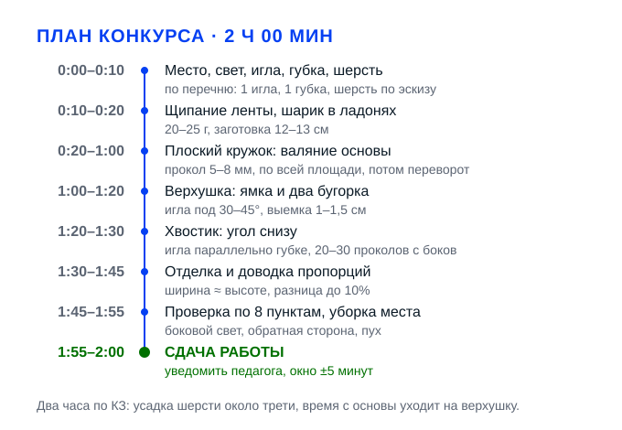
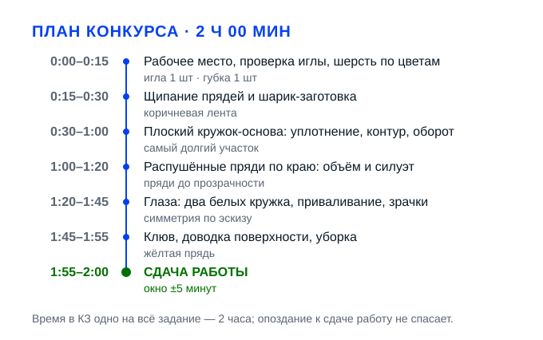
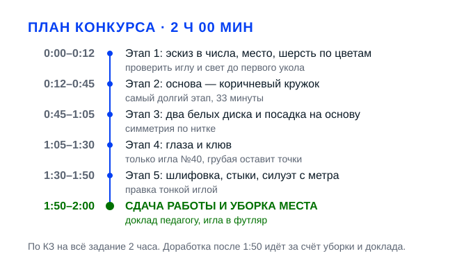

Валяние игрушки (ФВ)
Задания ниже — официальные файлы «Абилимпикс» (источник: abilympics-russia.ru), разложенные по категориям. Решения написаны по тексту задания, регламенту и критериям оценки; в них указано, что именно проверяет эксперт.
Школьник
14–16 лет, базовый уровень заданияВ официальном файле категории не разделены отдельными разделами — приводим задание целиком; различия по категориям смотрите в таблице модулей.
Пошаговое решение
Разбор по официальному конкурсному заданию для категории «Школьники»: за два часа нужно изготовить шерстяную фигурку «Сердце» сухим валянием. Работа идёт одной валяльной иглой на губке и состоит из восьми шагов, названных в задании: организовать место, отщипнуть волокна из гребенной ленты, скатать шарик в ладонях, свалять из него плоский кружок, наклонив иглу, сформировать ямку и бугорки верхушки, затем, наклонив иглу параллельно губке, стянуть хвостик, перевернуть изделие и уплотнить обратную сторону. Баллы в опубликованном задании не расписаны, поэтому ориентир — итоговый результат и то, что эксперт проверяет руками: плотность, симметрия, чистый силуэт с обеих сторон, порядок на месте и уведомление педагога об окончании работы. Инструмент выдают один, без запасного, поэтому иглу берегут с первой минуты.

Задача 1. Организовать рабочее место и принять инструментПункт 2.2 КЗ · организация места · первые 10 минут из 120
Задание начинается не с шерсти, а со стола: по пункту 2.2 конкурсного задания первый шаг — организовать рабочее место, и только потом валять. На всё отведено два часа, из них валяние занимает примерно сто десять минут, поэтому десять минут на осмотр, посадку и раскладку — это не потеря времени, а страховка. По перечню на участника выдают одну валяльную иглу, одну губку и шерсть разных цветов по эскизу: запасной иглы нет, и сломанная игла означает остановку работы, а не мелкую неприятность. Здесь же снимаются риски: игла колющая, рука работает быстро, а лицо наклонено над губкой.
Действие 1.1. Осмотреть место и сесть так, чтобы выдержать два часа
Шаг 1.1.1
Подходим к столу и первые полминуты только смотрим, ничего не раскладывая. По заданию рабочее место участника — это площадь 3000×1900 мм с проходом между местами не меньше 1,5 м, поэтому первым делом проверяем, что проход действительно свободен и никто не поставил в него сумку или стул. Смотрим на свет: лампа или окно должны быть спереди или слева, а на губку не должна падать тень от вашей же руки — в тени мелкая текстура пропадает. По разделу 4 задания для участников с нарушением зрения предусмотрено освещение не менее 300 люкс — лампа включается с первой минуты.
Оценка начинается с того, что участник видит своё место. Если свет падает сзади, первые проколы делаются наугад: шерсть на губке почти не даёт тени, и граница уплотнения читается только на боковом свете. Свободный проход — это ещё и требование охраны труда из раздела 5: загромождать проходы к другим рабочим местам запрещено, и эксперт замечает это сразу, без напоминаний.
Проверьте три вещи, стоя у стола: губка и руки освещены ровно и без тени, до стула и до соседнего места можно пройти, не задевая ничего, а на столе нет чужих предметов и мусора. Если лампа стоит так, что светит в глаза, переставьте её до начала работы, потом будет не до этого.
Типичная ошибка — сразу сесть и начать щипать шерсть, а через полчаса обнаружить, что работа идёт в собственной тени и половина проколов не попала в заготовку. Вторая — сдвинуть губку на край стола, ближе к себе: локоть повисает, кисть быстро устаёт, и к концу второго часа точность падает в разы.
Эксперт обходит места до старта и оценивает, готово ли место к работе: свет, свободный проход, порядок на столе. Всё это фиксируется до первого прокола.
Шаг 1.1.2
Садимся так, чтобы предплечья лежали на столе, а не висели: стул пододвигаем вплотную, стопы ставим на пол всей поверхностью, спина прямая с опорой на спинку. Губку кладём на расстоянии 25–30 см от глаз — ближе начинаешь сутулиться, дальше не видно, куда входит остриё. Руку с иглой держим так, чтобы локоть оставался на столе: тогда работает только кисть, а плечо не устаёт. Плечи опущены, шея не вытянута вперёд, подбородок не лежит на груди.
Валяние — это две тысячи мелких однотипных движений за два часа. При неправильной посадке к середине работы начинает болеть шея и немеет кисть, темп падает, и вместо точной формовки верхушки получаются смазанные проколы в одну точку. Посадка не оценивается отдельным пунктом, но её последствия видны в качестве изделия — а изделие и есть итоговый результат по заданию.
Сядьте и проверьте себя: спина касается спинки, стопы на полу, предплечья на столе, до губки можно дотянуться, не наклоняясь. Если приходится тянуться — придвиньте губку, а не тянитесь корпусом. Через десять минут работы плечи не должны быть подняты к ушам.
Ошибка новичка — работать на весу, держа руку с иглой над столом: кисть быстро устаёт, амплитуда прокола растёт, и игла начинает гнуться. Вторая — сесть вполоборота к столу, потому что так удобнее видеть соседа: корпус перекошен, и симметрию сердца вы потом не увидите, потому что смотрите на него под углом.
Эксперт отмечает посадку и то, как участник держит руку: свободная кисть на столе — признак, что человек умеет работать долго, а не пять минут. К середине второго часа видно, держится ли посадка: тот, кто сел правильно, не начинает подпирать голову рукой.
Шаг 1.1.3
Раскладываем инструмент по зонам, а не как получилось. Губка — по центру, чуть ближе к краю, чтобы заготовку можно было поворачивать, не вставая. Игла — справа от рабочей руки, воткнутая в подушечку или в край губки, остриём вниз и от себя: лежащая на столе игла скатывается и теряется. Шерсть по цветам — слева и выше губки, чтобы её не задевать локтем; цвета, которые не нужны в первые полчаса, убираем на дальний край стола. Всё нужное должно доставаться вытянутой рукой без наклона корпуса.
Зоны нужны потому, что работа идёт в быстром темпе и с постоянными переходами: проколол — добавил прядку — снова проколол. Если шерсть лежит вплотную к губке, её постоянно сдвигает локоть, цвета перемешиваются, и на светлом сердце появляются тёмные волокна, которые потом выбирать пинцетом нечем. Порядок на столе виден эксперту без всяких измерений и читается как готовность к работе.
Проверьте: до иглы, губки и каждого нужного цвета — один жест, без наклона. Игла не лежит плашмя на столе. Свободная часть стола справа осталась пустой — туда вы будете класть готовую заготовку, когда пойдёте переворачивать её или снимать пушок.
Частая ошибка — вывалить всю шерсть одной кучей по центру «чтобы всё было под рукой»: цвета смешиваются, часть волокон прилипает к губке и уходит в изделие пятнами. Вторая — оставить иглу лежащей между проколами: она цепляется за рукав и падает на пол, а второй иглы по перечню нет.
Эксперт смотрит на организацию места в динамике: остаётся ли порядок через час работы или стол превратился в свалку шерсти. Порядок в зоне шерсти он проверяет и позже, когда участник уже работает иглой и тянется за прядкой не глядя.
Действие 1.2. Принять и проверить иглу, губку и шерсть
Шаг 1.2.1
Достаём иглу и осматриваем её при свете, поворачивая вокруг оси. Остриё должно быть острым и ровным, без крючка на кончике, а на трёх гранях должны читаться мелкие насечки-зазубрины — именно они цепляют волокна и тянут их внутрь. На металле не должно быть ржавых точек и тёмного налёта. Иглу проверяем на вате или на краешке шерсти: она должна входить с лёгким сопротивлением и не выскакивать обратно сама. Держим её за середину, а не за самое остриё.
Игла — единственный рабочий инструмент по перечню, и запасной не выдаётся. Тупая игла не сваливает шерсть, а раздвигает волокна: вы делаете в два раза больше проколов и всё равно получаете рыхлую поверхность. Погнутая игла уводит прокол в сторону и рвёт заготовку на выходе, а ржавая оставляет на светлой шерсти серые следы, которые уже ничем не убрать.
Проверка простая: проведите подушечкой пальца по острию вдоль — оно должно слегка цепляться, а не скользить. Посмотрите на иглу на просвет: ровная линия без излома. Если игла погнута или затуплена, меняйте её сразу у эксперта, а не через час, когда работа уже начата.
Самая частая ошибка — взять иглу, не глядя, и обнаружить затупление на этапе формовки верхушки, где нужна максимальная точность. Вторая — проверять иглу пальцем остриём к себе: даже слегка погнутая игла при таком движении оставляет занозу под ногтем.
Эксперт смотрит, осматривает ли участник инструмент вообще: большинство школьников берёт иглу сразу в работу и узнаёт о её состоянии по результату. Если участник осматривает иглу на свет и поворачивает её вокруг оси — это видно сразу и говорит о понимании материала.
Шаг 1.2.2
Берём губку и оцениваем её как рабочий инструмент, а не как подставку. Нужен плотный поролон толщиной 3–5 см: слишком мягкая губка проминается под иглой, и прокол не доходит до нужной глубины, слишком жёсткая — игла упирается и пружинит. Проверяем поверхность на трещины, старые проколы и выемки: если на губке уже есть глубокая яма, заготовка будет проваливаться в неё и форма получится вогнутой. Губку кладём на стол так, чтобы она не ездила: подложите под неё влажную салфетку или просто прижмите ладонью и проверьте.
Губка держит заготовку и гасит удар иглы. На яме шерсть проваливается, и вместо плоского кружка получается тарелка с утолщёнными краями — а сердце потом приходится переделывать с нуля посреди модуля. Кроме того, губка впитывает пушок и обрезки, поэтому грязная губка переносит тёмные волокна на светлую заготовку.
Проверьте ладонью: губка пружинит и восстанавливает форму, не рвётся под пальцами, поверхность без ям глубиной больше 3–4 мм. Положите губку и толкните её ребром ладони — она не должна скользить по столу.
Типичный промах — взять первую попавшуюся тонкую губку для посуды: она проминается до стола, и проколы делаются в столешницу, тупя иглу за десять минут. Вторая — работать на губке с прошлого участника, не перевернув её: старые проколы дают рыхлые места прямо под заготовкой.
На оценке он проверяет, есть ли на месте губка и в каком она состоянии: порванная пополам губка — это риск, о котором участник должен сказать сразу. Протёртая и перевёрнутая чистой стороной губка тоже отмечается: это признак того, что участник думает о следующем шаге.
Шаг 1.2.3
Принимаем шерсть: по перечню она выдаётся разных цветов в соответствии с эскизом, поэтому первым делом сверяем набор с эскизом — все ли цвета на месте, нет ли лишнего, который потом спутается с нужным. Шерсть должна быть гребенной лентой: длинные волокна, уложенные в одном направлении, мягкие на ощупь, без комков и без жёстких остевых волос, которые торчат из полотна. Проверяем количество: на сердце размером 10–12 см уходит примерно 20–25 г, и если выдали заметно меньше, лучше выяснить это сейчас.
Цвет и качество шерсти — это внешний вид готового изделия, а по заданию результат — именно фигурка «Сердце», которую эксперт оценивает целиком. Жёсткие остевые волосы не сваливаются вместе с пухом и торчат из поверхности иголками; их невозможно убрать без ножниц, а ножниц в перечне инструментов нет. Нехватку шерсти нельзя восполнить: замена во время конкурса идёт только через эксперта.
Разложите пряди и посмотрите на них на свет: полотно должно быть однородным, без тёмных вкраплений в светлом цвете, без свалянных плотных комков. Сожмите горсть в кулаке и отпустите — шерсть должна расправиться, а не остаться сжатым комом.
Ошибка — начать с шерсти, которая лежит ближе, не сверив цвета: на сердце из двух оттенков розового разница видна только при дневном свете, и переделывать придётся всю лицевую сторону. Вторая — молча согласиться с нехваткой, чтобы не тратить время на разговор.
Эксперт фиксирует, сверялся ли участник с эскизом: разложенные по цветам пряди — видимый признак, что задание прочитано. Отдельно он смотрит, не смешаны ли цвета уже на этапе приёмки: это самая частая причина серых пятен на светлой шерсти.
Действие 1.3. Снять риски: игла колет, рука работает быстро
Шаг 1.3.1
Берём иглу как ручку — тремя пальцами за середину, большой и указательный держат, средний поддерживает снизу. Не в кулаке и не кончиками пальцев: в кулаке нет контроля глубины, а на кончиках кисть быстро устаёт. Рабочее положение — игла вертикально, остриём вниз, над губкой. Втыкаем только в губку с заготовкой: не в воздух, не в край стола, не в направлении свободной руки. Свободная рука держит заготовку сбоку, на расстоянии 3–4 см от места прокола, а не сверху над ним.
Прокол в палец — самая частая травма на этой компетенции, и происходит она не от невнимательности, а от привычки придерживать заготовку там, куда бьёт игла. Раздел 5 задания требует выполнять требования безопасности при эксплуатации инструментов, и любая травма означает остановку работы, обращение в аптечку и потерю времени, которого на валяние и так немного.
Проверьте положение рук до первого прокола: остриё смотрит в губку, пальцы второй руки в стороне от линии удара. Медленно сделайте пять проколов и посмотрите, где находится левая рука — если она над заготовкой, переставьте её сейчас, а не после первого укола.
Классика — держать заготовку сверху, прямо в зоне прокола, «чтобы не ездила». Игла входит в подушечку пальца на 5–8 мм, работа останавливается, а на конкурсе это ещё и объяснение с экспертом по охране труда.
Эксперт смотрит на постановку рук в первые минуты: правильная стойка видна сразу и не меняется до конца работы. Если участник держит иглу в кулаке, ему обычно хватает одного укола, чтобы перехватить её правильно, но время на это уже уходит.
Шаг 1.3.2
Следим за корпусом: лицо не наклоняем низко над губкой, глаза держим на расстоянии 25–30 см от заготовки. Игла должна входить и выходить по одной линии — если рука уходит в сторону, игла гнётся, а на выходе рвёт волокна и делает рыхлые «кратеры». Работаем кистью, а не плечом: амплитуда маленькая, темп высокий — два-три прокола в секунду. Каждые 10–15 минут меняем положение корпуса и разминаем кисть, не отходя от стола.
Ровный вход и выход иглы — это не эстетика, а плотность: при боковом ходе волокна не спутываются, а раздвигаются, и вместо войлока получается разрыхлённая шерсть, которая через час развалится. Наклон над работой и работа плечом дают усталость к середине второго часа, когда как раз нужна точность на верхушке сердца.
Проверьте через двадцать проколов: поверхность под иглой уплотняется равномерно, без рытвин и без «языков» шерсти, вытянутых в сторону. Если игла идёт туго и скрипит — вы бьёте слишком глубоко, уменьшите амплитуду.
Ошибка — давить на иглу всем корпусом «чтобы быстрее свалялось»: игла гнётся, заготовка прилипает к губке, и при отрыве отрывается вместе с куском поверхности. Вторая — работать в одном месте, пока там не получится «камень», и оставить рыхлые края.
Эксперт оценивает равномерность обработки поверхности: рыхлые зоны видны на просвет и на ощупь, даже если снаружи всё выглядит ровно. Он же смотрит на расстоянии, не наклоняется ли участник головой к самой губке: такая привычка за час даёт заметную усталость.
Шаг 1.3.3
На каждой паузе игла уходит в подушечку или втыкается в край губки, а не кладётся на стол. Если игла упала — поднимаем её и проверяем остриё заново: кончик мог загнуться об пол. При уколе: останавливаемся, не размахивая рукой, идём в аптечку, обрабатываем ранку и сообщаем тьютору или волонтёру — по разделу 5 задания за каждым участником закреплён тьютор или волонтёр. Эксперта ставим в известность сразу, до продолжения работы.
Порядок с иглой — единственный способ не потерять её посреди стола: в шерсти игла не видна, а найти её на ощупь можно только один раз. Скрытый укол, про который участник промолчал, — это нарушение требований охраны труда, и оно разбирается уже после конкурса, но время всё равно потеряно.
Проверьте: когда вы отрываете руки от работы, игла стоит в подушечке остриём вниз. Подушечка лежит на виду, а не под шерстью. Аптечка и место тьютора известны до старта, а не ищутся в момент травмы. Проверьте заранее, где стоит аптечка и где находится тьютор: искать их в момент травмы — самая плохая идея.
Ошибка — воткнуть иглу в шерсть «на секунду» и потом искать её минуту. Вторая — при уколе промолчать и продолжать работу: ранка на подушечке пальца мешает держать заготовку, и точность падает именно на формовке.
Эксперт наблюдает, куда участник девает иглу в паузах: это самый быстрый и самый честный индикатор культуры работы с колющим инструментом. Отдельно фиксируется, сообщил ли участник о любом уколе: скрытая травма разбирается уже после конкурса.
Задача 2. Подготовить шерсть: щипание и шарикПункт 2.2 КЗ, шаги 2–3 · щипание и формирование шарика · около 10 минут
По заданию школьники отщипывают из гребенной ленты несколько волокон и формируют шарик в ладонях круговыми движениями. Это подготовительный этап, который определяет всё остальное: из плохо распушённой шерсти не получится ровного кружка, а из плотного комка — сердце без бугров. Шерсть при сваливании садится примерно на треть, поэтому заготовка всегда берётся с запасом: шарик диаметром 12–13 см даёт готовое сердце около 10 см. Ошибка на этом этапе не видна сразу — она проявляется через сорок минут, когда исправлять уже нечего.
Действие 2.1. Отщипать волокна, а не оторвать комок
Шаг 2.1.1
Берём гребенную ленту в одну руку и перекручиваем прядь между пальцами — нам нужен именно сгиб материала, то место, где волокна натянуты. Второй рукой выщипываем волокна с внешней поверхности этого сгиба: движения быстрые и частые, пальцы работают как щипцы, а не тянут прядь целиком. Отщипываем небольшими прядками, каждая размером с палец, и складываем их в рыхлую горку на свободной части стола. Не рвём и не режем: лента должна распускаться на волокна, а не на куски.
Щипание — первая техника, названная в разделе 1.2 задания, и она нужна не для красоты: при выщипывании волокна перепутываются между собой уже на этом этапе, и дальше игла только закрепляет то, что вы заложили. Оторванный комок сохраняет направление волокон, сваливается неравномерно и даёт на поверхности рыхлые и плотные зоны вперемешку.
Проверьте первую прядку: она должна быть полупрозрачной, волокна в ней лежат в разные стороны, а не одной прядью. Если прядка выходит ровной и блестящей, как лента, — вы тянете, а не щиплете, поменяйте движение.
Частая ошибка — оторвать от ленты половину сразу, «чтобы два раза не подходить»: такой комок не распушить, внутри он останется плотным и после сваливания даст жёсткий бугор на поверхности сердца. Вторая по частоте ошибка — щипать мокрыми или жирными руками: волокна слипаются в плотные жгутики, которые потом не распушить.
На оценке он смотрит на характер движений: щипание видно по коротким частым движениям пальцев, а не по вытягиванию всей рукой. Он же смотрит на размер прядок: слишком крупные отщипы потом приходится разрывать уже в процессе валяния, теряя темп.
Шаг 2.1.2
Щиплем поперёк направления волокон, а не вдоль: лента уложена в одном направлении, и поперечный отщип даёт короткие волокна длиной 4–6 см — именно они лучше всего спутываются иглой. Двигаемся по краю пряди, а не выедаем её из середины. Каждую прядку сразу разрыхляем пальцами и откладываем отдельно, чтобы не слёживалась в горке под собственным весом.
Длина волокна определяет, как быстро и как плотно сваливается заготовка. Слишком длинные волокна (10–15 см) тянутся за иглой и вылезают на поверхность пушком, который нечем срезать; слишком короткие (1–2 см) не дают сцепления, и заготовка крошится по краю. Поперечный отщип даёт как раз рабочие 4–6 см.
Сожмите прядку между пальцами и отпустите: она должна пружинить и расправляться. Посмотрите на длину — волокна примерно в два пальца. Если прядка тянется за рукой, как жвачка, — она слишком длинная, отщипните ещё раз поперёк.
Частый промах — щипать вдоль ленты: получаются длинные пряди, которые потом обматываются вокруг иглы и вытаскиваются наружу при каждом проколе. Вторая — щипать из середины полотна, оставляя по краям бахрому, которая потом путается с основным цветом.
Эксперт оценивает однородность подготовленной шерсти: рыхлая, без комков и без длинных прядей горка — видимый результат правильного щипания. Ровная, полупрозрачная горка подготовленной шерсти видна на столе с первого взгляда и говорит о качестве подготовки больше, чем слова.
Шаг 2.1.3
Считаем, сколько нужно. На сердце размером 10–12 см уходит 20–25 г шерсти, это примерно три-четыре хорошие горсти, если сжимать их в кулаке. Отщипываем сразу с запасом: часть шерсти уйдёт на исправление пропорций и на приваливание пушистых мест, а добавить шерсть в уже свалянную заготовку можно, но она ляжет слоем и будет видна. Раскладываем готовые прядки по цветам, если цветов несколько: основной цвет — отдельной горкой, добавочный — в стороне.
Недобор шерсти обнаруживается в самом неудобном месте — на этапе, когда нужно увеличить бугорок или подтянуть хвостик. Добрать в этот момент можно, но новая шерсть ложится поверх уже свалянной и на готовом изделии читается более пухлым пятном. Лишняя шерсть — тоже проблема: её нельзя убрать без ножниц, а ножниц в перечне нет.
Проверьте объём: горсть, сжатая в кулаке, по размеру примерно как ваш кулак, а всего подготовленного должно хватать, чтобы скатать шарик диаметром 12–13 см. Если шарик получился меньше — добавьте прядку до начала сваливания, а не после.
Ошибка — готовить шерсть «по ходу», отщипывая по прядке между проколами: темп сбивается, руки в шерсти, и на иглу налипают волокна другого цвета. Вторая — сразу смешать все цвета в одну горку, чтобы получить меланж: на сердце это выглядит как грязь, а не как оттенок.
Эксперт смотрит на подготовленный запас: если его видно на столе и он разложен по цветам, участник понимает, что делает. Отдельно отмечается, не откладывает ли участник шерсть на край стола, где она собирает пыль и пух от соседних работ.
Действие 2.2. Распушить и перепутать волокна
Шаг 2.2.1
Каждую отщипанную прядку разрыхляем отдельно: берём двумя руками за края и растягиваем в стороны, пока она не станет облачком, сквозь которое просвечивает стол. Потом распушаем пальцами, разводя волокна в разные стороны, — движение похоже на то, как расправляют вату. Не сжимаем и не комкаем: на этом этапе шерсть должна стать воздушной, а не плотной.
Плотность заготовки задаётся до иглы. Если волокна лежат пучками, игла сваливает только пучки, а между ними остаются рыхлые полости — на просвет они видны как светлые пятна, а на ощупь чувствуются как провалы. Из воздушной, равномерно распушённой шерсти кружок получается ровным с первого прохода, и его не надо потом выравнивать.
Поднимите прядку к свету: она должна просвечивать, отдельные волокна различимы, плотных тёмных участков нет. Сожмите в кулаке и отпустите — облачко восстанавливает объём, а не остаётся сжатым комочком.
Ошибка — распушить только верхний слой, оставив внутри плотное ядро: при сваливании ядро не пробьётся иглой насквозь, и в центре сердца останется мягкая зона, которая продавливается пальцем. Вторая — распушить шерсть над губкой: часть волокон остаётся на поролоне и уходит в отходы, а заготовка получается тоньше запланированной.
Эксперт проверяет заготовку на ощупь в первые минуты валяния: провалы в плотности чувствуются сразу. Ему достаточно взять заготовку в руки: рыхлая и воздушная она пружинит, а плохо распушённая ощущается как плотный комок с твёрдым ядром.
Шаг 2.2.2
Укладываем распушённые прядки крест-накрест, слоями: первый слой — волокна вдоль, второй — поперёк, третий — снова вдоль, но со сдвигом. Достаточно трёх слоёв по две прядки, и каждый следующий кладём на предыдущий без нажима, слегка распушая края пальцами. В итоге получается рыхлая подушка, в которой волокна идут во все стороны, а не в одну. Каждый слой слегка прижимаем ладонью, но не уплотняем: нам нужна связность, а не плотность.
Перекрёстная укладка — это то, что делает войлок войлоком: волокна разных направлений сцепляются друг с другом при проколе, и заготовка держит форму в обоих направлениях. Если уложить всё вдоль, кружок будет прочным вдоль волокон и рыхлым поперёк, а при формовке верхушки он начнёт разъезжаться именно поперёк.
Посмотрите на подушку сверху: границы между слоями не читаются, края распушены, толщина одинаковая по всей площади. Поднимите её двумя руками — она держится как единое облако, а не распадается на пряди.
Ошибка — уложить все прядки в одном направлении, потому что так быстрее и ровнее на вид: заготовка сваливается в одном направлении и при перевороте на обратную сторону разваливается по слоям. Вторая — уложить слои, не распушив края: границы читаются как швы и после сваливания проступают на поверхности полосами.
Эксперт оценивает, как участник держит заготовку при переносе: рассыпающиеся слои — признак неправильной укладки. Он проверяет заготовку на просвет: слоистая укладка даёт равномерную плотность, укладка в одном направлении — заметные полосы.
Шаг 2.2.3
Собираем облако в заготовку: подворачиваем края внутрь, как при формировании пельменя, и прижимаем ладонями, не сжимая в комок. Диаметр заготовки — 12–13 см, толщина в центре 4–5 см, к краям тоньше. Помните про усадку: шерсть садится примерно на треть, поэтому заготовка всегда больше готового изделия. Кладём её на губку и накрываем ладонью, чтобы убедиться, что она лежит ровно, а не горбом.
Запас на усадку — это арифметика, а не осторожность. Из заготовки 12 см получается сердце около 10 см, а если начать с 10 см, готовое изделие выйдет 7–8 см и будет выглядеть мелким рядом с работами других участников. Толщина в центре больше, чем по краям, потому что центр потом уйдёт в ямку и бугорки верхушки.
Заготовка лежит на губке ровно, без горба, диаметр 12–13 см по двум перпендикулярным направлениям, толщина в центре около 4–5 см. Края не свисают с губки — если свисают, губка мала или заготовка велика.
Куда более частая ошибка — скатать заготовку в тугой комок, чтобы она «лучше держалась»: такой комок сваливается снаружи, оставаясь рыхлым внутри, и центр сердца получается полым. Вторая — сделать заготовку слишком маленькой из экономии шерсти.
Эксперт сверяет размер заготовки с эскизом: разница видна на глаз, без линейки. Заготовка, которая лежит на губке ровно и не свисает краями, говорит о том, что участник представляет размер готового изделия до начала работы, а не выясняет его в конце.
Действие 2.3. Скатать шарик в ладонях
Шаг 2.3.1
Берём заготовку в ладони, слегка сжимаем и начинаем катать круговыми движениями: одна ладонь снизу, вторая сверху, движения идут по кругу с небольшим нажимом. Тридцать-сорок секунд достаточно, чтобы шерсть приобрела форму шара, но осталась рыхлой внутри. Катаем не по столу, а именно между ладонями — так шерсть не приминается плоскостью и не набирает пыль.
Это шаг 3 из последовательности для школьников в задании, и он нужен, чтобы получить равномерную по плотности основу. При катании в ладонях волокна перепутываются по всей поверхности одновременно; при раскатывании по столу снизу образуется плотная корка, а верх остаётся рыхлым, и при валянии иглой заготовка поведёт себя непредсказуемо.
Шарик должен держать форму на ладони и не расползаться, но при сжатии пальцами пружинить. Внешняя поверхность не должна быть гладкой и «зализанной» — наоборот, волокна должны топорщиться, это признак, что шерсть готова к игле.
Ошибка — катать долго и сильно, пока шарик не станет плотным, как из войлока: такой шарик почти не сваливается иглой, игла отскакивает от поверхности, а внутри остаётся рыхлая зона. Вторая — катать на весу и уронить заготовку на пол.
На оценке он смотрит на плотность шарика: рыхлый, но держащий форму — это правильное состояние, и оно видно по тому, как шарик лежит на губке. Он же смотрит на руки: шерсть должна быть сухой, а ладони — без крема, иначе волокна скользят и не спутываются.
Шаг 2.3.2
Уточняем форму пальцами: кладём шарик на основание одной ладони и пальцами второй круговыми движениями спутываем шерсть по поверхности, подтягивая волокна к центру. Движения мягкие, без нажима: мы не уплотняем, а собираем. Если шарик получился овальным, подкатываем его с боков, пока он не станет близким к шару. Контролируем нажим: пальцы скользят по поверхности, а не вдавливаются в неё, поэтому ладонь остаётся раскрытой, а движения идут от запястья.
На этом шаге закладывается симметрия: сердце симметрично по определению, и любая овальность шарика станет заметным перекосом после того, как вы сформируете верхушку и хвостик. Кроме того, при спутывании пальцами на поверхности появляется тонкий слой перепутанных волокон, который держит форму и не даёт заготовке расползтись на губке.
Проверьте двумя способами: положите шарик на губку и посмотрите сверху — он должен читаться как круг, а не как овал; поверните его на 90° — силуэт не должен меняться. На ладони шарик держится и не распадается при перекладывании.
Ошибка — мять шарик в кулаке, добиваясь «правильной» формы: получаются плотные зоны, которые потом не пробиваются иглой и остаются буграми на лицевой стороне. Вторая — оставить шарик овальным, решив, что «иглой потом выправится».
Эксперт проверяет симметрию заготовки до начала валяния: перекос, заложенный на этом этапе, потом только растёт. Ему важно, чтобы шарик был круглым уже на ладони: ровная основа экономит десять минут на выравнивании кружка.
Шаг 2.3.3
Проверяем размер и вес: шарик 12–13 см в диаметре, на ладони ощущается как небольшой снежок, но не тяжёлый. Если он меньше — добавьте распушённую прядку и подкатайте ещё раз; если больше — ничего не убираем, лишнюю шерсть потом заберёт формовка. Кладём шарик на губку, прижимаем ладонью до лепёшки толщиной 3–4 см и сразу проверяем, что он не прилип к ладони комком.
Размер — единственный параметр, который нельзя исправить после сваливания: убрать шерсть из готовой заготовки нечем, а наращивать её слоями — значит получить видимую границу. Заодно проверяется готовность к следующему шагу: приплюснутая заготовка уже имеет площадь, по которой пойдут первые проколы, и игла не будет соскальзывать с круглой поверхности.
Измерьте линейкой по двум осям: 12–13 см, разница между осями не больше 5 мм. Толщина лепёшки 3–4 см. Шарик после прижатия не расползся по губке лужей и держит круглый край. Заодно посмотрите на край лепёшки: он должен быть ровным по всему периметру, без свисающих прядей, которые потом дадут бахрому.
Ошибка — прижать шарик слишком сильно, до 1,5 см: плотность станет неравномерной, края — тонкими, и при формовке хвостика они порвутся. Вторая — оставить шарик круглым и начать валять сферу: игла будет соскальзывать, и проколы пойдут по касательной.
Эксперт сверяет заготовку с эскизом по размеру и форме: приплюснутый круглый шарик — правильная стартовая точка. Если шарик слишком плотный, эксперт обычно замечает это по звуку: игла отскакивает от поверхности с сухим стуком.
Задача 3. Свалять плоский кружок и уплотнить основуПункт 2.2 КЗ, шаги 4 и 7 · валяние основы · около 40 минут
По заданию быстрыми и лёгкими движениями иглой по всему шарику нужно сформировать плоский кружочек, уплотняя и сваливая шерсть, а торчащие волокна вбить в основание. Это самая долгая и самая однообразная часть работы: около получаса непрерывных проколов на площади 12 см. Здесь закладывается плотность изделия — то, что эксперт проверяет пальцем. Недовалянный кружок разваливается при формовке верхушки, переваленный — становится жёстким и не даёт сформировать ямку и бугорки.
Действие 3.1. Прибить заготовку к губке первыми проколами
Шаг 3.1.1
Кладём приплюснутый шарик на губку и начинаем с центра: иглу держим вертикально, остриём вниз, и делаем частые лёгкие проколы глубиной 5–8 мм — не до конца, не в стол. Темп два-три прокола в секунду, удары короткие, работает только кисть. Первые двадцать-тридцать проколов идут по центру кружка, потом расходимся к краям: так заготовка фиксируется на губке и перестаёт ездить под иглой.
Первые проколы — самые важные: они сваливают поверхностный слой и превращают рыхлое облако в связанную плоскость, по которой дальше можно работать без смещения. Если сразу начать с краёв, центр остаётся рыхлым, заготовка сдвигается при каждом ударе, и вместо кружка получается бесформенная лепёшка с утолщением в середине.
Проверьте через полсотни проколов: поверхность перестала пушиться и под иглой появилось ощущение плотности, заготовка не сдвигается при нажатии. Глубина прокола ровная — на губке не должно оставаться сквозных дорожек от иглы.
Частый промах — бить с размаху, до самой губки: игла пробивает заготовку насквозь, уходит в поролон, и на обратной стороне остаются рыхлые дыры, которые потом надо долго закрывать. Вторая — долбить одну точку, пока шерсть не превратится в твёрдый пятак.
Эксперт смотрит на характер проколов в первые минуты: ровный частый темп и маленькая амплитуда — признак, что участник умеет валять, а не просто колет шерсть.
Шаг 3.1.2
Следим за иглой: она должна входить и выходить по одной линии, без бокового люфта. Если рука уводит иглу в сторону, игла гнётся у основания, а на поверхности появляются вытянутые «кратеры» с рваными краями. Каждые десять минут проверяем остриё на свет — ровное оно или подзагнулось; подзагнутую иглу выправляем или меняем у эксперта, пока она не сломалась.
Игла одна по перечню: сломанная игла — это остановка работы и разговор с экспертом, а не замена инструмента. Кроме того, боковой ход иглы не сваливает шерсть, а раздвигает волокна: плотность не растёт, зато растёт число проколов, и вы теряете время, которого на основу уходит около трети всего задания.
Проверьте иглу, держа её на свет и медленно поворачивая: линия должна быть прямой, остриё — целым. Проколы на заготовке ровные, без рваных следов и без «дорожек», уходящих в сторону. Заодно проверьте, не остаётся ли на губке сквозных дорожек от иглы: они означают, что прокол идёт слишком глубоко.
Ошибка — продолжать работать погнутой иглой, потому что «ещё колет»: на сгибе металл устаёт, и игла ломается ровно в тот момент, когда вы формируете верхушку — самое ответственное место. Вторая — работать иглой, воткнутой до основания: так гнётся не только остриё, но и вся игла, и она ломается у рукояти.
Эксперт может проверить состояние иглы в любой момент конкурса: погнутая игла — прямой риск для работы. Он может попросить показать иглу: участники, которые её берегут, обычно и валяют аккуратнее, потому что чувствуют инструмент.
Шаг 3.1.3
Постепенно переходим от центра к краям и обратно, не задерживаясь в одной зоне дольше пяти-шести проколов. Проходим всю площадь по условной спирали: центр, среднее кольцо, край, снова центр. Края обрабатываем под небольшим наклоном иглы внутрь, чтобы волокна подворачивались под заготовку, а не торчали бахромой. Через десять-пятнадцать минут равномерной работы кружок начнёт держать форму и уменьшится в диаметре на 1–2 см.
Равномерность проходов — единственное, что даёт одинаковую плотность по всей площади. Если работать зонами, то на готовом сердце одна половина будет плотнее другой, и при формовке ямки более рыхлая сторона «поплывёт», а более плотная останется стоять — симметрия нарушится именно там, где её видно лучше всего.
Проверьте пальцем в четырёх точках: центр, две стороны, низ. Плотность должна ощущаться одинаково. Диаметр уменьшился примерно на 1–2 см — значит, шерсть действительно садится, а не просто приминается.
Ошибка — обрабатывать только лицевую сторону, потому что «изнанку всё равно не видно»: незакреплённая изнанка даст рыхлый край, и при перевороте кружок начнёт разъезжаться. Вторая — не подворачивать край, оставляя бахрому волокон по периметру.
На оценке он проверяет плотность по краю: именно край показывает, работал ли участник по всей площади или только в центре. Ему видно и то, возвращается ли участник к центру: работа «по кольцу» без возврата даёт утолщение в середине.
Действие 3.2. Уплотнить кружок и выровнять край
Шаг 3.2.1
Второй проход делаем по спирали от центра к краю, перекрывая предыдущую дорожку на треть. Иглу держим уже не строго вертикально, а с наклоном 60–70° по направлению движения: так волокна подхватываются и укладываются вдоль поверхности, а не вбиваются точками. Проходим два-три таких круга, пока поверхность не станет ровной на ощупь, как тонкий войлок.
Спираль с перекрытием — это способ убрать «полосы»: если водить иглой рядами, на поверхности остаются заметные дорожки разной плотности, которые на светлом войлоке читаются как полосы. Наклон иглы вдоль движения укладывает волокна, и поверхность получается гладкой без шлифовки, а шлифовать нечем.
Проведите ладонью по кружку: поверхность должна быть ровной, без бугров и без «ступенек» между проходами. На просвет против лампы не должно быть светлых пятен — они означают, что там шерсть тоньше и рыхлее.
Ошибка — водить иглой короткими рядами, как штрихами: остаются границы проходов, и потом, при формовке, поверхность начинает шелушиться слоями. Вторая — сильно наклонять иглу (почти плашмя), от этого она гнётся, а шерсть не сваливается.
Эксперт осматривает поверхность на боковом свете: полосы и ступеньки видны именно так, хотя при прямом свете поверхность кажется ровной. Он смотрит на свет: спиральные проходы дают ровную поверхность, а ряды оставляют заметные полосы разной плотности.
Шаг 3.2.2
Отделяем кружок от губки: подсовываем ладонь под заготовку целиком и снимаем её плашмя, не поднимая за край. Переворачиваем и кладём на чистое место губки, лицевой стороной вниз. Уплотняем обратную сторону теми же прибивающими движениями: сначала центр, потом край, наклон иглы внутрь по периметру. На это уходит пять-семь минут, и это обязательный шаг по заданию.
Обратная сторона — это не изнанка, которую никто не увидит: сердце лежит на столе и его берут в руки, поэтому обе стороны оцениваются одинаково. Кроме того, уплотнение с оборота стягивает волокна по всей толщине, и заготовка перестаёт расслаиваться: без этого шага при формовке верхушки лицевая сторона начинает отходить от изнанки пузырём.
Проверьте: заготовка не расслаивается, если потянуть её за края в разные стороны. Толщина одинаковая с обеих сторон, просветов нет. На обратной стороне не осталось рыхлых волокон, которые цепляются за палец.
Ошибка — снять заготовку за край: она растянется и потеряет круглую форму. Вторая — пропустить переворот, решив, что лицевой стороны достаточно: по заданию уплотнение с обратной стороны указано отдельным пунктом, и его отсутствие видно по рыхлой изнанке.
Эксперт переворачивает изделие в руках при оценке: состояние обратной стороны — один из самых честных показателей проработанности. Отдельно он отмечает, не осталось ли на изнанке рыхлых волокон: они цепляются за палец при первом же касании.
Шаг 3.2.3
Собираем торчащие волокна и вбиваем их в основание: по краю кружка проходим иглой под острым углом, подхватывая пушок и уводя его внутрь толщи. Волокна, которые торчат с лицевой стороны, прибиваем не сверху, а сбоку, под углом 30–40°, тогда они ложатся вдоль поверхности. Ножницами не пользуемся — их нет в перечне инструментов, и срезанный край потом выглядит как стриженый ворс.
Пункт про торчащие волокна есть прямо в описании техники и в шаге 4 задания: их нужно вбить в основание. Если оставить пушок, он не даст увидеть форму — силуэт сердца расплывается, а на светлой шерсти торчащие волокна читаются как небрежность. Срезать их нельзя, поэтому единственный способ — загнать внутрь.
Проведите ладонью против ворса: на руке не должно оставаться волокон. Посмотрите на кружок сбоку, на уровне стола: силуэт должен быть чистым, без дымки пуха по контуру. Проверьте и обратную сторону: там торчащих волокон обычно больше, потому что при перевороте они выходят наружу.
Ошибка — прибивать пушок сверху вертикальной иглой: волокна вбиваются в поверхность и потом всё равно вылезают, образуя пятна. Вторая — оставить пушок «до финиша» и на финише обнаружить, что он уже свалялся в комочки.
Эксперт смотрит силуэт изделия на расстоянии: пушистый контур скрадывает форму, и сердце выглядит бесформенным. Он смотрит контур на расстоянии вытянутой руки: чистый силуэт читается как готовое изделие, пушистый — как полуфабрикат.
Действие 3.3. Проверить плотность, толщину и диаметр
Шаг 3.3.1
Проверяем плотность пальцем, а не на глаз: нажимаем подушечкой большого пальца в центр и по четырём точкам по краям. Готовая основа должна пружинить и восстанавливаться, а не проваливаться ямкой. Если палец оставляет вмятину, которая не расправляется, шерсть ещё рыхлая — нужен ещё один проход иглой по этой зоне, пока не появится ощущение плотного войлока толщиной 2–3 мм на поверхности.
Плотность — главный параметр готового изделия: именно она отличает свалянную фигурку от куска шерсти, которому придали форму. Недовалянная основа при формовке ямки и хвостика просто сомнётся под иглой, и вместо сердца получится бесформенный комок, а переделывать уже не будет времени.
Пять точек: центр, верх, низ, левая и правая сторона. Во всех плотность одинаковая, вмятин не остаётся, поверхность на ощупь как тонкий фетр. Если где-то мягче — отметьте это место и вернитесь к нему иглой.
Типичный промах — проверять плотность ладонью: ладонь не чувствует разницу между рыхлым и плотным, а палец чувствует. Вторая — считать, что «на вид плотно»: на вид войлок и рыхлая шерсть выглядят одинаково, разница только на ощупь.
На оценке он обязательно нажимает изделие пальцем: это стандартная проверка плотности на этой компетенции. Если палец оставляет вмятину, он обычно просит участника вернуться к валянию: это самый частый недочёт на категории «Школьники».
Шаг 3.3.2
Проверяем толщину и просвет: заготовка должна быть 1,5–2 см в центре и 1–1,5 см у края. Поднимаем кружок на уровень глаз против лампы: светлых пятен быть не должно, они означают, что шерсть там тоньше и при формовке порвётся. Если пятно нашлось, добавляем тонкую распушённую прядку на это место и приваливаем её круговыми проколами, пока она не сольётся с основой.
Равномерная толщина нужна потому, что дальше мы будем выбирать ямку сверху и стягивать хвостик снизу: там, где тоньше, шерсть разойдётся и появится отверстие. Толщина проверяется и по краю: слишком тонкий край не держит форму, он начинает заворачиваться внутрь при каждом проколе.
Измерьте линейкой у края и в центре: разница не больше 5 мм. На просвет поверхность однородная. Край на ощупь плотный и не заворачивается, если провести по нему пальцем. Проверьте и край: он должен быть плотным на ощупь и не заворачиваться, когда вы проводите по нему пальцем.
Ошибка — оставить тонкий край и начать формовку: при стягивании хвостика край рвётся, и дырку приходится закрывать прядкой, которая видна как заплатка. Вторая — не проверять на просвет и узнать о тонком месте только на готовом изделии.
Эксперт смотрит изделие на просвет и на боковом свете: неравномерность толщины читается как пятна. На просвет он смотрит изделие у лампы: тонкие места читаются как светлые пятна, и по ним сразу видно, где участник не доработал.
Шаг 3.3.3
Замеряем диаметр и круглость: по двум перпендикулярным осям должно получиться 11–12 см, разница между осями не больше 5 мм. Если одна ось заметно длиннее, подкатываем заготовку с боков и приваливаем иглой по длинной стороне, подтягивая край внутрь. Круглость проверяем на губке, положив сверху лист бумаги и обведя контур карандашом, если есть время.
Круглая ровная основа — это половина успеха сердца: верхушка и хвостик формируются из круга, и если круг изначально овальный, то при симметричной формовке получится перекошенное сердце. Замер по двум осям занимает полминуты и снимает самый частый дефект готовых работ на этой компетенции.
Диаметр 11–12 см по обеим осям, разница до 5 мм. Контур читается как круг, если смотреть на заготовку сверху. Край на одной высоте по всему периметру — заготовка не лежит волной. Проверьте также, что заготовка лежит на губке всей плоскостью: если она качается, значит, где-то образовался бугор.
Ошибка — «выправить» овал, растянув его руками: шерсть растянется неравномерно и вернётся обратно через минуту. Вторая — не замерять вообще, потому что «на глаз видно, что круг»: на глаз видно как раз плохо, потому что вы смотрите на заготовку под углом.
Эксперт сверяет геометрию с эскизом: круглость основы и симметрия — то, что видно на фотографии работы. Он сравнивает геометрию с эскизом по самым широким точкам: круг с разницей осей больше сантиметра уже читается как овал.
Задача 4. Сформировать сердце: ямка, бугорки, хвостикПункт 2.2 КЗ, шаги 5–7 · формовка формы · около 30 минут
Здесь плоский кружок превращается в сердце. По заданию сначала, наклонив иглу под нужным углом, формируют ямку и бугорки — верхушку будущего сердца, потом, наклонив иглу параллельно губке, пробивают шерсть с боков основания и формируют угол-хвостик, а затем изделие отделяют от губки, переворачивают и уплотняют с обратной стороны. Углы наклона иглы в задании названы не случайно: направление прокола задаёт, куда уйдёт шерсть, и именно оно делает из круга сердце, а не бесформенную лепёшку.
Действие 4.1. Верхушка: ямка между двумя бугорками
Шаг 4.1.1
Намечаем центр верхней кромки: мысленно проводим осевую линию от верха к низу и ставим ногтем еле заметную точку на верхнем крае — по этой метке удобнее держать ось и потом сверять симметрию бугорков. Наклоняем иглу под углом 30–45° к поверхности и делаем 10–15 коротких проколов в эту точку, постепенно углубляясь. Шерсть уходит внутрь, и появляется выемка шириной примерно треть диаметра и глубиной 1–1,5 см.
Ямка — это первое, по чему узнаётся сердце: без неё фигура остаётся кругом с двумя бугорками и читается как яблоко. Наклон иглы под углом, как сказано в задании, нужен потому, что при вертикальном проколе шерсть уходит вниз, а при наклонном — стягивается к центру выемки и стенки получаются плотными, а не рваными.
Смотрите на заготовку сбоку: выемка должна читаться как плавная впадина, а не как дырка. Пальцем проведите внутри: стенки плотные, дно не просвечивает. Ширина выемки — около трети диаметра, не шире. Заодно проверьте, не сместилась ли ямка в сторону: она должна стоять строго по центру верхнего края.
Ошибка — бить вертикально в одну точку: шерсть вбивается внутрь, и вместо выемки получается уплотнённый тёмный пятак с рыхлыми краями. Вторая — сделать выемку слишком глубоко, почти до обратной стороны: там останется тонкое место, которое продавится пальцем.
Эксперт смотрит на верхушку в профиль: глубина и симметрия ямки — первое, что бросается в глаза в готовой работе. Глубокая ямка с тонким дном видна на просвет сразу, и он считает это риском разрыва при сдаче.
Шаг 4.1.2
Формируем два бугорка по сторонам от ямки. Иглу держим под углом 60–70°, прибиваем шерсть по бокам выемки, подтягивая волокна от краёв к центру каждого бугорка: движение идёт снаружи внутрь, как будто вы сгребаете шерсть к двум вершинам. По 20–25 проколов на каждый бугорок, сначала грубо, потом уточняя высоту. Заканчиваем тем, что проходим по основанию каждого бугорка под острым углом: так его край подворачивается и сливается с ямкой без ступеньки.
Бугорки — вторая половина узнаваемости: именно они вместе с ямкой дают силуэт сердечка. Подтягивание волокон снаружи внутрь не только поднимает бугорок, но и стягивает край, поэтому верхушка получается округлой и плотной, а не плоской с налепленными шариками.
Посмотрите на заготовку сверху: два бугорка одинаковой высоты, между ними плавная выемка. Проверьте пальцем: бугорки плотные, при нажатии пружинят, кожа не проваливается. Край над бугорками ровный, без заломов.
Самая частая ошибка — приваливать бугорки отдельными шариками сверху: они держатся только за поверхность и отрываются при первом же сжатии в руке. Вторая — сделать один бугорок выше другого, и потом не суметь это выправить.
Эксперт проверяет верхушку на симметрию и на прочность: бугорки не должны отходить от основы. Он проверяет бугорки на прочность: если они держатся только на поверхности, они отходят при первом же сжатии изделия в руке.
Шаг 4.1.3
Проверяем симметрию по осевой: проводим линию от дна ямки вниз к будущему хвостику и сравниваем половинки. Высота бугорков от нижней кромки должна быть одинаковой, ямка стоять строго по центру, а не сдвигаться в сторону. Если перекос есть, подтягиваем шерсть иглой с более высокой стороны к более низкой — по 5–6 проколов за проход, проверяя результат каждый раз.
Симметрия — самое заметное свойство сердца: человек видит перекос в 3–4 мм, даже не понимая, что именно не так. При этом исправить перекос на этом этапе легко, а на готовом изделии — почти невозможно, потому что придётся растягивать уже свалянную поверхность.
Смотрите на заготовку, повернув её на 180°: перекос, незаметный с одной стороны, виден с другой. Измерьте линейкой высоту бугорков от нижнего края — разница не больше 5 мм. Проверьте симметрию и с изнанки: перекос, незаметный с лица, на обратной стороне виден как смещённая тень.
Ошибка — проверять симметрию, глядя на изделие с одного ракурса: глаз адаптируется к перекосу за полминуты и перестаёт его видеть. Вторая — исправлять перекос, срезая лишнее, чего без ножниц сделать нельзя.
Эксперт отходит на метр и смотрит на изделие целиком: симметрия на расстоянии видна лучше, чем вблизи. На этом расстоянии перекос в три-четыре миллиметра уже заметен, а мелкие дефекты поверхности не отвлекают.
Действие 4.2. Хвостик: угол внизу
Шаг 4.2.1
Кладём заготовку на губку и наклоняем иглу почти параллельно губке — под углом 10–20° к её поверхности, как сказано в задании. Начинаем пробивать шерсть с боков основания, у нижней кромки, с двух сторон, ведя иглу к центру низа: по 20–30 проколов с каждой стороны. Шерсть стягивается к одной точке, и низ сужается в угол. Следим за тем, чтобы игла не выходила на лицевую сторону: при таком наклоне она идёт вдоль поверхности и подхватывает только верхние волокна.
Параллельный губке наклон — это единственный способ стянуть шерсть в угол, не пробив заготовку насквозь: игла идёт вдоль поверхности и подхватывает волокна с боков, подтягивая их к низу. При вертикальных проколах низ просто уплотнится и останется закруглённым, и сердце получится с круглым дном.
Низ должен читаться как угол: смотрите на заготовку снизу и сбоку. Ширина в нижней трети уменьшилась примерно вдвое по сравнению с серединой, боковые линии идут к одной точке без ступенек и заломов. Заодно проверьте, не осталось ли на кончике рыхлых волокон: они выдают место, где шерсть стянута слабее всего.
Ошибка — пробивать низ вертикально, наклонившись над заготовкой: шерсть не стягивается, а вбивается, и угол не формируется вообще. Вторая — стянуть слишком сильно, до острого клина: сердце должно иметь скруглённый кончик, а не иглу.
Эксперт смотрит на низ изделия против света: там, где шерсть стянута, видно направление волокон. При правильном наклоне иглы волокна ложатся вдоль линии угла, а не поперёк неё, и это видно без лупы.
Шаг 4.2.2
Доводим угол до нужной формы: он должен быть тупым, примерно 70–90°, с мягким скруглением на самом кончике. Проверяем ширину: если из угла торчит «язык» шерсти, подворачиваем его иглой внутрь, а не отрезаем. Если, наоборот, срезали лишнее движением иглы и низ получился слишком узким, добавляем тонкую прядку с обеих сторон и приваливаем её, маскируя стык.
Тупой угол — это анатомия сердца: острый клин читается как капля или морковка. Кроме того, слишком узкий низ не держит форму: фигурка заваливается набок, когда её ставят на стол, а по заданию результат — фигурка, которую должны оценить и поднять. К тому же на столе её видно целиком, а не лежащей на боку.
Поставьте заготовку на стол: она должна стоять сама, не заваливаясь. Ширина кончика — не меньше 1 см, угол тупой, скругление мягкое. Линии от середины к низу плавные, без ступенек. Наклоните изделие вбок: оно должно вернуться в исходное положение, а не завалиться.
Ошибка — стянуть низ в тонкий хвост, чтобы «было похоже на сердечко»: такой хвост быстро рвётся, и на нём остаётся тонкое место. Вторая — оставить низ круглым и надеяться, что форма «прочитается» за счёт верхушки.
На оценке он проверяет устойчивость изделия: фигурка, которая падает на столе, читается как незавершённая. Тонкое место на кончике он смотрит на просвет: там оно рвётся первым, и это самый частый дефект работ.
Шаг 4.2.3
Проверяем геометрию целиком: ширина сердца примерно равна высоте, а хвостик находится строго по центру, на одной оси с ямкой. Приложите линейку вертикально через ямку — она должна пройти через кончик. Если кончик смещён, подтяните шерсть иглой с противоположной стороны, по небольшому проходу за раз. После каждого прохода поворачиваем изделие на девяносто градусов и смотрим на линию ещё раз: глаз привыкает к перекосу за полминуты.
Сердце симметрично не только слева-направо, но и по вертикальной оси: смещённый хвостик сразу превращает фигурку в «кривое сердце». Соотношение ширины и высоты около единицы — это то, что делает силуэт узнаваемым без всяких подписей. Кроме того, смещённый кончик ломает ось, по которой строится вся симметрия.
Линейка через ямку проходит через кончик. Ширина и высота отличаются не больше чем на 10%. Смотрите на изделие в профиль и в фас — силуэт читается как сердце с любого ракурса. Проверьте и по нижней кромке: расстояние от кончика до боковых линий должно быть одинаковым слева и справа.
Ошибка — не проверять вертикальную ось и заметить смещение только на финальной фотосъёмке. Вторая — выправлять хвостик, растягивая его пальцами: растянутая шерсть возвращается назад, и перекос появляется снова.
Эксперт прикладывает изделие к эскизу или сравнивает на глаз: пропорции — часть критерия соответствия образцу. Разницу осей больше сантиметра он видит сразу: круг уже читается как овал.
Действие 4.3. Перевернуть и уплотнить обратную сторону
Шаг 4.3.1
Отделяем изделие от губки: подсовываем ладонь под заготовку целиком и снимаем плашмя, поддерживая обеими руками, потому что тонкий хвостик может подломиться. Переворачиваем и кладём на чистое место губки. Прибивающими движениями иглы проходим всю обратную сторону: сначала по центру, потом по краям, отдельно уплотняя ямку сверху и хвостик снизу. Особенно аккуратно проходим хвостик: он тоньше остального, и при неверном наклоне иглы его легко вытянуть в сторону.
Это шаг 7 задания, и он вынесен отдельным пунктом: изнанка у сердца такая же лицевая сторона, её видно, когда фигурку берут в руки или кладут на стол. Кроме того, уплотнение с обратной стороны стягивает волокна по всей толщине и фиксирует форму, которую вы только что слепили.
Проверьте: заготовка не расслаивается при сжатии, толщина одинаковая с обеих сторон, ямка и хвостик читаются и с изнанки. На обратной стороне не осталось рыхлых участков, которые цепляются за палец. Заодно проверьте устойчивость: после уплотнения изнанки фигурка не должна заваливаться набок.
Частый промах — перевернуть изделие, взяв за хвостик: он растягивается и теряет форму, а иногда и подламывается. Вторая — пройти обратную сторону быстро, «для галочки»: рыхлая изнанка выдаёт работу с первого касания.
Эксперт переворачивает изделие в руках: состояние обратной стороны входит в оценку качества исполнения. Он смотрит, как участник берёт изделие: за край, а не за хвостик — это признак, что человек понимает, где тонкое место.
Шаг 4.3.2
Убираем то, что вылезло при перевороте: бугры, рыхлые пятна, неровности по краю. Их не срезаем, а прибиваем и подтягиваем внутрь: игла идёт под углом 30–40°, подхватывая волокна и уводя их в толщу. Отдельно проходим по контуру — край должен быть ровным по всему периметру, без волн. Проходим и место перехода от ямки к бугоркам: там чаще всего остаётся рыхлая канавка, которая на изнанке читается впадиной.
При перевороте форма всегда немного «садится»: то, что было плотным с лица, оказывается разрыхлённым с изнанки, а тонкие места проступают буграми. Если их не убрать сейчас, на готовом изделии они читаются как дефекты формы, а не как текстура. К тому же неровная изнанка мешает изделию ровно лежать на столе.
Проведите ладонью по изнанке: поверхность ровная, без бугров и впадин. Контур ровный, если смотреть на изделие сбоку против света. Толщина по краю одинаковая по всему периметру. Проверьте и толщину на просвет: после уплотнения она не должна уменьшиться больше чем на пару миллиметров.
Ошибка — оставить бугры, потому что «это изнанка»: фигурку берут в руки, и первое, что чувствуешь, — именно неровности. Вторая — прибивать бугор вертикально, отчего он не уходит, а становится плотнее и заметнее.
Эксперт оценивает изделие тактильно: проводит пальцем по обеим сторонам. Он сжимает изделие в руке: изнанка не должна похрустывать или расслаиваться при сжатии.
Шаг 4.3.3
Сравниваем силуэт с эскизом: отходим на метр, смотрим на изделие на уровне глаз и в профиль. То, что не видно вблизи, видно на расстоянии: перекос, разная высота бугорков, смещённый хвостик. Если чего-то не хватает — добавляем шерсть тонкими прядками и приваливаем по краю, маскируя переход. Отдельно смотрим в три четверти: именно под этим углом видно, читается ли объём, или фигурка выглядит плоской.
Расстояние — самый быстрый способ проверить силуэт: вблизи глаз цепляется за текстуру и не видит форму. Именно на расстоянии эксперт и зритель оценивают работу в первую очередь, потому что фигурка «Сердце» — это прежде всего узнаваемый силуэт. К тому же на расстоянии сразу видно, где форма «поехала» после переворота.
С метра силуэт читается как сердце без пояснений: две доли сверху, выемка, угол снизу. Пропорции близки к эскизу, перекосов не видно ни в фас, ни в профиль, ни в три четверти. Проверьте и с высоты своего роста, положив изделие на стол: сверху пропорции читаются иначе, чем в руках.
Ошибка — оценивать работу, держа её в руках в двадцати сантиметрах от лица: так видно только поверхность. Вторая — доделывать форму, когда времени осталось пять минут, и не успеть проверить результат.
Эксперт смотрит изделие с расстояния и под несколькими углами — это стандартная процедура оценки. Вблизи он проверяет поверхность, а силуэт оценивает шага с двух: так видны диспропорции, незаметные в руках.
Действие 4.4. Довести пропорции и убрать следы формовки
Шаг 4.4.1
Замеряем ширину и высоту: у сердца они примерно равны, допустимая разница — до 10%. Если изделие вытянулось в высоту, прибиваем иглой верхнюю часть, подтягивая бугорки вниз и в стороны; если растянулось в ширину — стягиваем бока к центру короткими наклонными проколами. Работаем маленькими проходами и после каждого перезамеряем. Замеряем по самым широким точкам, а не по краю: край всегда чуть уже из-за усадки, и по нему пропорции не проверить.
Пропорции — то, что делает силуэт «правильным»: сердце с соотношением 1:1,4 читается как вытянутая капля, а с соотношением 1:0,7 — как помидор. При этом исправление пропорций на свалянной шерсти возможно только стягиванием, поэтому делать это надо постепенно, а не одним сильным проходом.
Ширина и высота отличаются не больше чем на 10%, линейка приложена по самым широким точкам. После каждого прохода форма не «уезжает» в обратную сторону — значит, вы не перетянули. Проверьте и высоту бугорков от нижней кромки: разница между сторонами не должна превышать пяти миллиметров.
Типичный промах — тянуть сразу сильно, чтобы «наверняка»: шерсть перетягивается, и вместо ровного сердца получается сжатая фигурка с плотными полосами. Вторая — выправлять пропорции растягиванием руками, что даёт временный результат.
На оценке он сравнивает пропорции с эскизом и с работами других участников: разница видна сразу. Он сравнивает соотношение сторон с эскизом: отклонение больше десяти процентов читается как другой силуэт.
Шаг 4.4.2
Убираем следы формовки: тёмные точки от проколов, полосы разной плотности, границы между слоями шерсти. Проходим поверхность частыми неглубокими проколами под углом 30°, двигаясь по кругу: игла не входит глубоко, а «приглаживает» верхний слой, укладывая волокна вдоль поверхности. На это уходит 5–7 минут ровным темпом. Заканчиваем проход по контуру, подворачивая край внутрь: именно там следы проколов остаются дольше всего.
Следы проколов и границы слоёв — самая заметная небрежность на светлом войлоке: точки читаются как рябь, а полосы — как разные по плотности куски. Приглаживание под острым углом укладывает волокна и закрывает эти следы без ножниц и без дополнительной шерсти.
Посмотрите на изделие на боковом свете: поверхность должна быть однородной, точки проколов не читаются как отдельные углубления. Проведите ладонью — поверхность ровная, без выступающих волокон. Проверьте и на просвет: приглаженная поверхность становится ровнее по плотности, и светлые пятна уходят.
Ошибка — «шлифовать» вертикальными проколами: они оставляют новые точки, и поверхность становится рябой ещё сильнее. Вторая — приглаживать мокрыми руками, от влаги шерсть начнёт сваливаться в комки и поверхность пойдёт волной.
Эксперт осматривает поверхность на боковом свете: именно так читается качество отделки. По плотности проколов на площади он понимает, сколько времени ушло на отделку, а не только на валяние основы.
Шаг 4.4.3
Финально проверяем «лицо» сердца: верхушка, ямка, хвостик и общий силуэт. Кладём изделие на салфетку, отходим, смотрим, поворачиваем и смотрим снова. Если что-то приходится объяснять словами («вот здесь выемка, а это хвостик») — форма не доделана, и нужно вернуться к этому участку с иглой, пока есть время. Если времени осталось больше десяти минут, лучше сделать паузу и вернуться к осмотру ещё раз, чем начинать новую правку сразу.
Готовое изделие должно читаться без пояснений: по заданию результат — фигурка «Сердце», и оценка идёт по узнаваемости и качеству исполнения. Время на доводку всегда есть, если не тратить его на переделывание основы. К тому же доводка занимает минуты, а недоделанная форма стоит оценки.
Форму можно описать тремя словами без подсказок: две доли, выемка, угол. С любого ракурса, на расстоянии метра, при прямом и боковом свете. Проверьте и то, как изделие лежит: поставленное на стол, оно не качается и не заваливается на бок.
Ошибка — оставить «почти готово» и перейти к уборке: до сдачи остаётся запас, а недоделанная форма видна эксперту сразу. Вторая — доделывать в спешке и переуплотнить один участок, получив твёрдый пятак.
Эксперт в этот момент уже формирует первое впечатление от работы — и оно складывается из силуэта. Он смотрит, приходится ли ему самому искать, где у сердца верх, а где низ: если да, форма не читается.
Задача 5. Отделать поверхность, проверить и сдать работуПункт 2.2 КЗ · отделка, уборка, сдача · последние 30 минут
Финальная часть задания: довести поверхность, пройти по пунктам задания как по чек-листу, убрать рабочее место и уведомить педагога об окончании работы — последний пункт в задании назван прямо. Здесь уже не набирают форму, а сохраняют то, что сделано: убирают пушок и следы проколов, проверяют изделие на свету и с расстояния, раскладывают инструмент по местам. По разделу 5 задания по окончании работы участник обязан убрать инструменты и материалы в отведённое место, разложить их в правильном порядке и убрать своё рабочее место.
Действие 5.1. Довести поверхность и убрать пушок
Шаг 5.1.1
Проходим изделие по контуру и по обеим сторонам короткими частыми проколами глубиной 2–3 мм: игла только прихватывает верхний слой и укладывает торчащие волокна вдоль поверхности. Двигаемся по периметру против ворса, потом по лицевой стороне и по изнанке. Если по перечню выдали тонкую иглу для отделки — работаем ею, она не оставляет заметных точек; если игла одна, уменьшаем амплитуду и не бьём глубоко.
Пушок по контуру съедает силуэт: сердце с дымкой из волокон читается хуже, а на фотографии работы выглядит небрежно. Прибивать волокна надо именно против ворса и под острым углом: тогда они ложатся вдоль поверхности и больше не вылезают, а срезать их нечем — ножниц в перечне инструментов нет.
Проведите ладонью против ворса — на коже не должно остаться волокон. Посмотрите на изделие сбоку, на уровне стола: контур чистый, без пуховой дымки. Точки проколов не читаются как отдельные углубления.
Самая частая ошибка — приглаживать пушок вертикальными ударами: волокна вбиваются в толщу и через пять минут выходят обратно, уже свалявшись в комочки. Вторая — тереть изделие ладонью, чтобы «пригладить»: от трения шерсть скатывается в катышки.
Эксперт проводит по изделию рукой: качество отделки проверяется на ощупь быстрее, чем глазами. Пушистый край чувствуется под ладонью сразу, даже если глазами его не видно, поэтому отделку не откладывают на последнюю минуту.
Шаг 5.1.2
Проверяем, не осталось ли на поверхности чужого цвета: отдельные тёмные или светлые волокна, прилипшие от губки или от соседней пряди. Их не срезают, а аккуратно поддевают остриём иглы и уводят внутрь толщи или вытягивают за кончик и приваливают в незаметном месте. Смотрим изделие на свету под наклоном — на ровной поверхности чужое волокно видно сразу, особенно на светлой шерсти.
Посторонние волокна — самый заметный дефект чистоты работы: одна тёмная волосинка на светлом сердце читается как грязь, и её видно даже на общем фото. Убрать её можно только до того, как она привалялась намертво, потому что распустить участок и свалять заново времени уже не будет.
Осмотрите изделие на просвет и под углом 30° к лампе: поверхность однородная по цвету, без вкраплений. Проверьте обе стороны и особенно кончик хвостика, там чаще всего остаются волокна от губки. Изнанку проверьте отдельно: при перевороте чужие волокна прилипают именно туда.
Ошибка — оставить вкрапление, решив, что «это оттенок»: на светлом войлоке чужая шерсть не выглядит оттенком, она выглядит как соринка. Вторая — пытаться вытереть её пальцем, отчего волокно вминается глубже.
На оценке он осматривает изделие вблизи на светлом фоне: чистота поверхности — отдельный пункт качества. Одна волосинка портит впечатление от всей работы сильнее, чем неровный край, поэтому чистоту он ставит выше мелких огрехов формы.
Шаг 5.1.3
Финально уплотняем те зоны, которые чаще всего остаются рыхлыми: внутренняя сторона ямки, кончик хвостика, переход от бугорков к ямке. Проходим каждую зону по 10–15 коротких проколов под углом, не углубляясь. Затем сжимаем изделие в ладони и отпускаем: оно должно вернуть форму, а не остаться смятым. Заканчиваем тем, что проходим по контуру круговыми проколами: край подворачивается, и силуэт становится чистым.
Именно эти три зоны остаются рыхлыми, потому что до них не доходит игла при общей обработке: в ямке мешают стенки, в хвостике — узость, на переходах — наклон поверхности. Рыхлое место на готовом изделии продавливается пальцем, и это первое, что проверяет эксперт при оценке плотности.
Сожмите изделие в ладони на три секунды и отпустите: оно восстанавливает форму. Пальцем в ямке и на кончике хвостика — пружинит, не проваливается. На просвет светлых пятен нет. Проверьте и вес: изделие должно быть лёгким и не тяжёлым на ладони, тяжесть означает, что шерсть недоваляна.
Ошибка — уплотнять на глаз, не проверяя рукой: рыхлость видна только на ощупь. Вторая — переуплотнить хвостик, превратив его в твёрдый клин, который не сочетается по плотности с остальным изделием. Третий вариант — уплотнять только с лица: изнанка остаётся рыхлой, и изделие сжимается неравномерно.
Эксперт сжимает изделие в руке: упругость и плотность проверяются именно так. Он проверяет упругость нажатием в трёх точках: центр, ямка и хвостик должны ощущаться одинаково плотными.
Действие 5.2. Пройти по заданию как по чек-листу
Шаг 5.2.1
Проговариваем про себя восемь шагов задания по порядку и проверяем каждый из них: организовано ли место, отщипаны ли волокна, скатан ли шарик в ладонях, свалян ли кружок по всей площади. Дальше идут ямка и бугорки, сформированные под углом, хвостик, стянутый при игле, наклонённой параллельно губке, перевёрнутое и уплотнённое с изнанки изделие и вбитые в основание торчащие волокна. Если какой-то пункт пропущен, делаем его сейчас — на это обычно хватает двух-трёх минут.
Задание перечисляет последовательность, и она же является минимальным чек-листом: пропущенный пункт — это не «мелкая недоделка», а невыполненная часть работы. Чаще всего забывают про уплотнение с обратной стороны и про вбивание торчащих волокон, потому что они не влияют на вид спереди, но влияют на оценку качества исполнения.
Все восемь пунктов названы и проверены. Три самых частых пропуска — обратная сторона, торчащие волокна и организация места — подтверждены отдельно, а не «на память». Проговорите последовательность вслух или про себя целиком: пропуск обычно обнаруживается именно на проговаривании.
Частый промах — считать, что раз изделие выглядит готовым, все пункты выполнены: обратная сторона и пушок не видны с рабочего ракурса. Вторая — начать проверку за две минуты до сдачи, когда уже ничего не исправить.
Эксперт сверяет работу с последовательностью задания: пропущенные этапы видны по характеру поверхности. Плотность края и состояние изнанки он отмечает отдельно: по ним видно, какие этапы пропущены и в каком темпе шла работа.
Шаг 5.2.2
Осматриваем изделие по кругу: кладём на салфетку, обходим стол и смотрим с четырёх сторон, затем поднимаем на уровень глаз и смотрим на просвет. Отдельно проверяем боковым светом — он выявляет бугры и впадины, которые при прямом свете не видны. Свет должен быть тот же, при котором работали: по разделу 4 задания для участников с нарушением зрения предусмотрено освещение не менее 300 люкс, и при таком свете видно всё.
Боковой свет — главный инструмент контроля поверхности: на нём читаются неровности в 1–2 мм, которые на прямом свете полностью исчезают. Изделие сдают на оценку, и эксперт смотрит его именно так, поэтому лучше увидеть дефекты первым. К тому же свет на площадке ровный, и дефекты видны без увеличения.
С четырёх сторон силуэт одинаково читается как сердце. На боковом свете поверхность без бугров и впадин. На просвет нет светлых пятен. Ничего не «уезжает» и не перекашивается при повороте. Проверьте и с расстояния вытянутой руки: на нём видно общий силуэт, а не отдельные волокна.
Ошибка — проверять только с рабочего места: с одного ракурса перекос не виден, глаз к нему привыкает. Вторая — осматривать при слабом свете и пропустить бугры, которые при ярком свете видны сразу. Третий вариант — смотреть изделие только на просвет: бугры и впадины на просвет не видны вовсе.
Эксперт осматривает изделие под несколькими углами и на боковом свете — это стандартная процедура. Боковой свет он использует всегда: на нём видны бугры, которые при прямом свете полностью исчезают.
Шаг 5.2.3
Оставляем изделие на три-четыре минуты в покое и смотрим на него заново, «свежими глазами»: за время работы глаз привыкает к перекосам и перестаёт их замечать. За это время проверяем размеры линейкой — ширина и высота, разница до 10%, — и убеждаемся, что фигурка устойчиво стоит на столе. Если обнаружился дефект, исправляем его и снова отходим на расстояние.
Пауза нужна не для отдыха, а для сброса зрительной адаптации: после тридцати минут работы над одной формой мозг считает её правильной независимо от того, как она выглядит. Именно на этом этапе участники находят перекосы, которые не видели час назад, — и именно этот взгляд совпадает со взглядом эксперта.
Через паузу силуэт по-прежнему читается как сердце, перекосов не видно, фигурка стоит на столе, размеры в допуске. Если после паузы что-то «режет глаз» — это и есть дефект, который увидит эксперт. Проверьте и то, что изделие не липнет к салфетке: на готовом войлоке свободных волокон не остаётся.
Типичный промах — не делать паузу и сдавать работу сразу после последнего прокола: в этом состоянии глаз не видит ничего, кроме того, что хочется видеть. Вторая — начать новую правку на этом этапе и испортить готовое изделие.
Эксперт смотрит работу впервые — то есть именно «свежим взглядом», которого у участника уже нет. Первое впечатление он получает до того, как возьмёт изделие в руки, и оно обычно уже не меняется.
Действие 5.3. Убрать место, сдать работу и уведомить педагога
Шаг 5.3.1
Разбираем инструмент по местам: иглу втыкаем в подушечку или футляр остриём вниз, губку стряхиваем от пуха над мусорным контейнером и кладём на край стола, остатки шерсти собираем в контейнер по цветам. По разделу 5 задания по окончании работы участник обязан убрать используемые оборудование и материалы в строго отведённое место и разложить инструменты в правильном порядке.
Уборка — это последний пункт последовательности в задании и заодно требование охраны труда. Игла, оставленная на столе, опасна для следующего человека и для самого участника, а разбросанная шерсть смешивается и больше не годится для работы по цвету. К тому же по перечню инструмент один, и его состояние проверяют при сдаче.
Проверьте: игла не лежит на столе открыто, губка без комков шерсти, остатки разложены по цветам, контейнеры закрыты. Инструмент лежит так, как его выдали в начале. Проверьте и пол вокруг стола: упавшие волокна и обрезки тоже часть уборки.
Ошибка — бросить иглу на стол «на минутку» и уйти сдавать работу: игла теряется в пуху и находится уже ногой. Вторая — смешать остатки шерсти в один пакет, после чего их нельзя использовать. Третий вариант — оставить губку с набившейся шерстью: её потом невозможно использовать по назначению.
Эксперт фиксирует состояние рабочего места после работы: это отдельный пункт, и он виден без измерений. Он осматривает место после уборки: инструмент на месте, шерсть разложена, стол свободен.
Шаг 5.3.2
Убираем стол: пух и обрезки собираем влажной салфеткой, а не сухой рукой — сухой пух разлетается и садится на чужие работы. Протираем столешницу, ставим стул на место, проверяем, что проход шириной 1,5 м свободен и ничего не выдвинуто в него. Салфетку и мусор выбрасываем в контейнер, а не оставляем на столе. Отдельно проверяем пол под столом: там собирается больше всего пуха, и его видно, если посмотреть на свет.
Пух — самая летучая часть работы: он поднимается от любого движения и оседает на соседних изделиях, портя чужие работы. Убранное место — требование раздела 5 задания и одновременно условие, при котором работу можно спокойно положить и оставить до оценки.
Стол чистый и сухой, пуха нет ни на столе, ни на полу вокруг, проход свободен, стул на месте. Проведите ладонью по столешнице — на руке не должно быть волокон. Проверьте и то, что ничего не осталось на стуле и под ним: вещи, забытые на месте, тоже фиксируются.
Ошибка — сметать пух рукой на пол: он всё равно поднимется и осядет обратно. Вторая — убрать только своё место, оставив в проходе коробку или сумку, что нарушает требования охраны труда. И ещё один промах — оставить на столе пустые упаковки от шерсти: они читаются как незавершённая уборка.
Эксперт проходит по площадке после сдачи: чистое место и свободный проход отмечаются. Свободный проход шириной 1,5 м он проверяет отдельно: это прямое требование охраны труда.
Шаг 5.3.3
Кладём готовое изделие на салфетку или подложку лицом вверх, не оставляя его на губке, и уведомляем педагога или эксперта об окончании работы — этот пункт прямо назван в последовательности задания. Говорим коротко: работа готова, вот фигурка, инструмент убран. Дальше готовы ответить на вопросы: из какой шерсти валяли, в какой последовательности, что было самым сложным.
Уведомление — формальное требование, но пропуск этого пункта означает, что работа не сдана: эксперт не обязан подходить к столу и гадать, закончил участник или ещё нет. Кроме того, спокойный короткий доклад — часть оценки коммуникации, и он выгодно отличается от молчаливого ожидания.
Педагог или эксперт знает, что работа окончена, изделие лежит на подложке лицом вверх и не касается губки и инструментов, место убрано. Если вам задали вопрос — вы ответили без паузы и без подглядывания в записи.
Самая частая ошибка — молча ждать, пока эксперт сам подойдёт: время конкурса закончится, а работа будет считаться несданной. Вторая — оставить изделие на губке, где его легко смахнуть вместе с инструментом при уборке.
Эксперт подходит к работе после уведомления: именно в этот момент он и оценивает изделие целиком. До уведомления изделие считается незаконченным, и уговаривать эксперта подойти раньше бессмысленно.
Студент
учащиеся колледжей и техникумовВ официальном файле категории не разделены отдельными разделами — приводим задание целиком; различия по категориям смотрите в таблице модулей.
Пошаговое решение
Решение разобрано по официальному конкурсному заданию «Фестиваля возможностей» 2026 для категории «Студенты» по компетенции «Валяние игрушки». Задание одно: за два часа свалять из шерсти фигурку «Сову» сухим валянием — одной валяльной иглой на губке. В наборе шерсть разных цветов по эскизу: коричневая идёт на основу, белая на два глаза, чёрная на зрачки, жёлтая на клюв. Последовательность в задании расписана по шагам: шарик в ладонях, плоский кружок, распушённые пряди по краю, два белых кружка с чёрными зрачками, жёлтый треугольник клюва. На всё отведено ровно два часа, включая уборку места и уведомление педагога, поэтому темп важнее идеальности отдельного прокола: неровную поверхность можно поправить, потерянное время — нет.

Задача 1. Разложить рабочее место и подготовить шерстьПодготовка · первые 30 минут из 120
До первого прокола стол должен быть готов: губка на месте, игла воткнута так, чтобы её не задели, четыре цвета разложены отдельно, из коричневой ленты отщипаны пряди и скатан шарик. В задании на фигурку «Сову» отведено два часа, и пятнадцать минут подготовки потом возвращаются с лихвой: игла в наборе одна, второй нет, а перепутанные цвета на плоском кружке уже не разделить.
Действие 1.1. Осмотреть место и разложить инструмент
Шаг 1.1.1
Ставим губку по центру стола, отступив от переднего края примерно ладонь, — тогда кисть работает свободно, а корпус не нависает над работой. Иглу не кладём поперёк стола: втыкаем её вертикально в дальний край губки на глубину около сантиметра, остриём вниз, чтобы она не каталась и её не смахнул рукав. Шерсть раскладываем слева, эскиз ставим справа и чуть впереди, чтобы на него падал свет и его было видно целиком, не поворачивая головы.
Организация места — первый пункт последовательности в п. 2.2 задания, и с него начинается любая оценка: пока стол не готов, участник не валяет, а ищет иглу. Балльного разбиения в КЗ нет, но порядок виден эксперту сразу, а беспорядок потом отнимает минуты, которых на фигурку отведено ровно два часа.
Сядьте и проверьте три расстояния: до губки тянетесь не вставая, игла воткнута в губку, а не лежит на столе, эскиз виден целиком. Тень от корпуса не должна падать на рабочую зону — при боковом свете проколы и неровности читаются гораздо лучше.
Игла, брошенная на столе, скатывается под шерсть, и её ищут на полу в самый неподходящий момент; воткнутая рядом с губкой остриём вверх — ещё хуже, о неё легко поранить кисть. Вторая ошибка — положить шерсть под правую руку: пряди путаются с пухом и обрезками, и цвет приходится выбирать на ощупь.
Эксперт обходит места в первые минуты и смотрит на две вещи: воткнута ли игла остриём в губку и разложены ли цвета отдельно. То же он проверит на сдаче, когда станет видно, куда девались обрезки.
Шаг 1.1.2
Проверяем иглу до старта: проводим подушечкой пальца по острию вдоль насечек — заусенец цепляется за кожу, погнутое остриё видно на просвет, если повернуть иглу к лампе. Иглу с заусенцем или затупившуюся меняем через эксперта сейчас, а не в середине работы. Заодно продавливаем губку ладонью: она должна пружинить и не крошиться, а на её поверхности не должно быть старых ям от предыдущих работ.
Заусенец рвёт волокна и выдёргает их обратно вместо того, чтобы спутывать: на готовой фигурке это полосы и рыхлые пятна, которые почти невозможно заправить. Игла в наборе одна, и если она выйдет из строя на середине, работу придётся останавливать и звать эксперта — время при этом идёт.
Остриё гладкое на ощупь, насечки целые, игла не гнётся при лёгком нажатии. Губка после нажатия восстанавливает форму, на ней нет трещин и посторонних волокон другого цвета, которые потом вылезут на вашей сове.
Работать погнутой иглой: она входит под углом, проколы идут в сторону, и край кружка получается рваным. Вторая ошибка — взять губку с чужого места или подложить вместо неё бумагу: игла бьётся о твёрдое, тупится и ломается, а волокна не спутываются в глубине.
Эксперт проверяет инструмент при выдаче и после первого модуля работы. Погнутая игла и губка с провалами — это не «мелочь», а причина остановки работы и замены, которую фиксируют.
Шаг 1.1.3
Раскладываем шерсть по цветам так, как они пойдут в работу: коричневая лента — основной объём, её кладём ближе всех; белая — на два глаза, чёрная — на зрачки, жёлтая — на клюв. Каждый цвет на свою подложку или в свою ячейку, с промежутком в палец, чтобы пряди не сцепились краями. Коричневую ленту сразу разворачиваем волокнами вдоль стола: так удобнее щипать поперёк.
По описанию задания сова собирается из четырёх цветов, и каждый идёт на свою деталь: белый на глаза, чёрный на зрачки, жёлтый на клюв. Если цвета лежат кучей, светлое волокно цепляется за коричневое, и на белом кружке остаётся рыжий пух, который видно на просвет и невозможно убрать.
Проверьте рукой: между кучками есть свободное место, ни одна прядь не лежит на другой, чёрная и жёлтая — самые маленькие кучки, их видно сразу. Если белой шерсти меньше, чем кажется нужным на два глаза, скажите об этом до старта, пока набор можно дополнить.
Свалить все цвета в одну кучу «разберу по ходу»: к глазам волокна уже перемешаны, и белый кружок выходит грязным. Вторая ошибка — отложить чёрную шерсть далеко в сторону: на зрачок нужно полволокна, его ищут дольше, чем валяют.
Эксперт смотрит на раскладку в первые пять минут: аккуратно разложенные цвета читаются как понимание технологии, а общая куча — как спешка, из которой потом выходят грязные оттенки.
Действие 1.2. Отщипать пряди из гребенной ленты
Шаг 1.2.1
Берём коричневую гребенную ленту одной рукой и перекручиваем между пальцами, чтобы получился сгиб, — щипать будем именно по сгибу. Пальцами другой руки выщипываем волокна с внешней поверхности короткими частыми движениями, отступая от края на два-три сантиметра: прядь должна выходить облачком, а не вытягиваться лентой. Длина отщипа — примерно четыре-шесть сантиметров, этого хватает, чтобы волокна перекрещивались в шарике.
В п. 1.2 задания щипание описано отдельной техникой, и это не формальность: ровный отщип даёт перекрещенные волокна, которые цепляются друг за друга при первом же проколе. Волокна, выхваченные длинной прядью, ложатся параллельно, и шарик потом расходится слоями.
Отщип в руке распадается на отдельные волокна, а не висит сосулькой; при растягивании двумя руками он тянется и рвётся посередине. Если волокна выходят длинными и ровными, вы щиплете вдоль ленты — разверните её и попробуйте поперёк.
Тянуть шерсть из ленты, как из ваты: край ленты вытягивается в жгут, волокна идут параллельно, и шарик разваливается уже в ладонях. Вторая ошибка — щипать слишком мелко, по волоску: на основу уйдёт весь отведённый час.
Эксперт смотрит на руки в начале работы: щиплющие движения по сгибу узнаются сразу, а вытягивание ленты — тоже. Если прядь вышла ровной и облачком, дальше работа идёт быстро; если лента вытянута жгутом, это станет видно уже по шарику, который расходится слоями при первом проколе.
Шаг 1.2.2
Отделяем основную массу на тело: столько, чтобы отщип смыкался в ладонях без усилия и чуть выступал между пальцами. Для плоского кружка это примерно три-четыре хороших горсти — шерсть садится при валянии почти вдвое, поэтому заготовка всегда берётся с запасом. Откладываем массу кучкой, а не комком, чтобы внутрь не попал воздух большими полостями. Массу держим рыхло и не сжимаем в кулак: сжатая шерсть слёживается в комки, которые потом приходится разбирать пальцами.
Плоский кружок по описанию формуется из шарика, а шарик садится и уплотняется: если взять шерсти впритык, к моменту глаз основа уже не даст нужной толщины, и глаза будут приваливаться к тонкой плёнке. Лишнюю шерсть всегда можно привалять внутрь, а недостающую — только добрать, и уже другим по плотности слоем.
Прикиньте объём на ладони: он должен быть заметно больше будущего кружка по эскизу, примерно в полтора-два раза по толщине. Если эскиз без размеров, держите круг в пределах ладони, сантиметров семь-восемь, — на большее просто не хватит шерсти из набора.
Взять шерсть «на глаз» и потом обнаружить, что на вторую половину кружка не хватает: добрать можно, но стык слоёв останется полосой. Вторая ошибка — сразу оторвать мало и валять тоньше обычного: тонкая основа просвечивает и не держит форму.
Эксперт оценивает готовую фигурку целиком, и рыхлая или просвечивающая основа видна на просвет. Запас шерсти в начале — это то, что потом читается как плотная, ровная поверхность.
Шаг 1.2.3
Перебираем отщип руками и убираем всё, что не пойдёт в работу: слипшиеся комочки, короткие обрезки меньше двух сантиметров, грубые остевые волокна, которые не сваляются и торчат. Одновременно разрыхляем массу — распушаем её пальцами, разводя волокна в разные стороны, чтобы внутри не осталось плотных жгутов. Мусор складываем в отдельную кучку у края губки, а не смахиваем на пол.
Короткие обрезки и ость не сваливаются в общую массу, а вылезают на поверхность уже готовой фигурки, и убрать их без ножниц невозможно. Разрыхлённая масса уплотняется равномерно, а плотные жгуты внутри дают бугры, которые потом приходится маскировать, добавляя шерсть сверху.
Проверьте массу на просвет: она должна быть однородной, без тёмных плотных прожилок. Сожмите её в кулаке и разожмите — волокна должны расправиться сами, а не остаться слёжанным комком. Мусор лежит отдельно и не смешивается с чистой шерстью.
Оставить в массе ость и обрезки, рассчитывая, что «заваляется»: ость не валяется, она торчит и колется, а на сове это заметно в первую очередь по контуру. Вторая ошибка — смахивать мусор на пол: за рабочее место снимают, а пух под ногами ещё и скользит.
Техника безопасности в п. 5.3 прямо требует выполнять только свою работу и не загромождать проходы, поэтому мусор убирается сразу, а не копится на столе до сдачи.
Действие 1.3. Скатать шарик-заготовку
Шаг 1.3.1
Кладём отщип на ладонь и сжимаем в горсть, а потом начинаем катать между ладонями круговыми движениями, слегка прижимая, — тридцать-сорок секунд, пока комок не станет упругим. Ладони держим не параллельно, а чуть под углом, чтобы шерсть не скатывалась в валик. Если масса рассыпается, не добавляем воду и не прижимаем сильнее, а подкладываем внутрь ещё тонкий отщип и продолжаем катать.
Скатывание в ладонях — приём из п. 1.2 задания: круговыми движениями волокна перекрещиваются ещё до иглы, и шарик держится сам. Это экономит первые проколы, а их на плоском кружке много: слабо скатанный шарик приходится долго ловить иглой, и он расползается под ней в лепёшку с неровным краем.
Шарик держит форму в руке, не разваливается при лёгком сжатии и не липнет к ладони. На поверхности нет глубоких борозд от пальцев, а сам он ближе к шару, чем к блину: расплющивать его будет игла, а не ладони.
Катать слишком долго и превратить шерсть в плотный войлочный комок: игла в него почти не входит, и круг получается толщиной в палец. Вторая ошибка — катать мокрыми или жирными руками: шерсть перестаёт цепляться сама за себя.
Эксперт смотрит на заготовку мельком, но по ней видно, понимает ли участник, что шерсть уплотняется постепенно: ровный шарик — залог ровного кружка. Если шарик скатан правильно, первые проколы идут легко, а шерсть не тянется за иглой.
Шаг 1.3.2
Доваливаем шарик в основании ладони, прижимая его круговыми движениями к бугру у большого пальца, а не в центре ладони: там усилие точнее, и шерсть уплотняется равномерно по всей поверхности. Каждые десять-пятнадцать секунд поворачиваем заготовку, чтобы она не превратилась в «грушу» с одного бока. Заодно подворачиваем внутрь торчащие волокна большим пальцем.
Заготовка должна быть одинаковой плотности по всей поверхности: игла потом уплотняет шерсть сверху, но неравномерность из ладоней сохраняется и превращается в перекос кружка. Подвёрнутые внутрь волокна не будут потом вылезать на лицевую сторону белыми и рыжими прядями.
Поверните заготовку в руке: она должна быть одинаковой на ощупь со всех сторон, без мягких провалов. Нажмите пальцем — ямка медленно расправляется, но шарик не пружинит как мяч. Торчащих волокон на поверхности почти нет.
Оставить один бок мягким: при валянии он сядет сильнее, и круг уйдёт в овал. Вторая ошибка — подворачивать волокна мокрыми пальцами, от этого на шерсти остаются слипшиеся полоски, которые игла не берёт.
Эксперт может взять заготовку в руки на любом этапе, и равномерность на ощупь — первое, что отмечают: она важнее, чем ровный внешний край на этом этапе.
Шаг 1.3.3
Кладём шарик на губку, прижимаем ладонью до лепёшки и сверяем с эскизом: диаметр заготовки должен быть чуть больше будущего кружка, потому что при уплотнении шерсть садится. Если заготовка заметно меньше, добираем отщип и приваливаем его по краю, а не кладём сверху. Если больше — не отрезаем, а оставляем: лишнее уйдёт в объём по краю, который понадобится на следующем этапе.
Сверка с эскизом — единственный способ не уйти в размер, который потом не совпадёт с пропорциями глаз и клюва. Глаза делаются из двух небольших белых шариков по описанию, и на маленьком кружке они займут всю голову, а на большом потеряются, поэтому диаметр решается сейчас, а не после глаз.
Заготовка лежит на губке ровно, без наклона, её край виден целиком и примерно совпадает с кружком на эскизе. Проверьте на просвет у лампы: пятен разной плотности быть не должно, и сквозь шерсть не должно быть видно губку.
Сразу начать валять, не примерившись к эскизу: к глазам выясняется, что голова вышла на треть больше нужного, а времени на переделку уже нет. Вторая ошибка — убрать лишнее, оторвав край: оторванный край потом не сваливается в ровную линию.
Эксперт сверяет силуэт с эскизом на сдаче и в процессе, и первое, что он видит, — общие пропорции: голова-кружок, два глаза, клюв. Всё это держится на размере, выбранном сейчас.
Задача 2. Свалять плоский кружок-основуОсновная работа · 30 минут из 120
Из шарика получается плоский кружок — тело и голова совы одновременно. Пункт 4 описания требует быстрых и лёгких движений по всей площади шарика, а не по одному месту, и торчащие волокна нужно вбивать в основание. На это уходит четверть всего времени: пока кружок не уплотнён равномерно, ни глаза, ни клюв на него не лягут — они провалятся в рыхлую шерсть.
Действие 2.1. Уплотнить шарик по всей площади
Шаг 2.1.1
Держим иглу перпендикулярно губке, локоть над работой, движение идёт от кисти — короткое и частое, не глубже чем на пять-шесть миллиметров в губку. Первые проколы делаем по центру заготовки, с шагом примерно три миллиметра: игла должна входить и выходить в разных точках, а не долбить одну. При подъёме иглы слышен лёгкий хруст волокон — это и есть сцепление, по нему понятно, что шерсть вяжется.
Пункт 4 описания прямо говорит: движения по всему шарику, чтобы волокна сцепились друг с другом. Если бить в одну точку, сцепление идёт только в ней, а вокруг шерсть остаётся рыхлой, и при нажатии пальцем в кружке появляется ямка. Именно из-за таких ямок потом не держатся глаза, а сам кружок идёт волной.
Переверните заготовку и посмотрите на обратную сторону: в местах, где игла прошла насквозь, видны мелкие вмятины-точки. Их должно быть много и по всей площади, а не пятном в центре. Пальцем круг продавливается упруго, без хлюпающей мягкости.
Валять, не втыкая иглу до губки: тогда сцепляются только верхние волокна, а внутри остаётся рыхлая середина, и круг расслаивается по толщине. Вторая ошибка — втыкать иглу на всю длину: она пробивает круг насквозь и выдёргивает волокна с обратной стороны, оставляя дыры.
Эксперт проверяет плотность пальцем: нажатие на готовую фигурку не должно оставлять вмятины. На этом этапе ему достаточно посмотреть, как участник держит иглу и с какой частотой работает.
Шаг 2.1.2
Дальше ведём иглу по спирали от центра к краю, не пропуская секторов: один проход — один виток, и так три-четыре витка с поворотом заготовки на девяносто градусов между ними. Проколы ставим с наклоном к центру на десять-пятнадцать градусов, чтобы подбирать крайние волокна внутрь. Руку держим легко: игла не должна застревать, а шерсть — подниматься за ней наверх.
Спираль с поворотом даёт равномерную усадку: шерсть садится по всем направлениям одинаково, и круг остаётся кругом, а не превращается в овал, вытянутый по ходу руки. Наклон иглы к центру по краю подтягивает свободные волокна в толщу — это и есть заготовка ровного контура.
Через три витка круг заметно уменьшился в диаметре и стал плотнее на ощупь, край держит форму и не махрится. Ведите ладонью по поверхности: она должна быть прохладной и ровной, без торчащих прядок длиннее пяти миллиметров.
Валять только в одном направлении, раз за разом поворачивая руку одинаково: круг садится неровно, один край подтягивается, другой остаётся рыхлым. Вторая ошибка — давить на иглу всем корпусом: остриё пробивает губку, волокна рвутся, а не спутываются.
Эксперт смотрит на симметрию: круг должен оставаться кругом. Это первое, что заметно на расстоянии вытянутой руки, и по этому признаку видно, работал участник по площади или по удобному участку.
Шаг 2.1.3
Переворачиваем заготовку на обратную сторону и проходим её так же, как лицевую: спираль от центра к краю, шаг проколов три миллиметра, наклон иглы к центру. Затем переворачиваем ещё раз и делаем один контрольный проход по лицевой. Всего на этом этапе круг меняет сторону три-четыре раза — так уплотнение идёт с двух сторон и не образует «корки» сверху при рыхлой середине.
Пункт 1.2 описания требует в ходе работы переворачивать изделие и валять с обратной стороны. Без этого лицевая сторона уплотняется, а внутри остаётся мягкий слой, и при приваливании глаз игла проваливается насквозь. Кроме того, одностороннее валяние закручивает край в сторону — и круг перестаёт быть плоским.
Сравните стороны на ощупь: они должны быть одинаково плотными, а край — ровным по всей окружности, без закрученных «ушек». Положите круг на губку: он лежит плоско, не покачивается и не выгибается лодочкой.
Валять только с лицевой стороны, потому что «её же видно»: круг выгибается, и привалянные глаза оказываются на выпуклой поверхности. Вторая ошибка — переворачивать мокрыми руками: на шерсти остаются следы, которые потом читаются как грязные пятна.
Плоский кружок — это то, что задание называет результатом на промежуточном этапе, и эксперт проверяет его плоскость, положив на стол: покачивание сразу видно.
Действие 2.2. Выровнять плоскость и вывести контур
Шаг 2.2.1
Выравниваем поверхность короткими проколами на глубину два-три миллиметра, держа иглу под углом сорок пять градусов к плоскости: она работает как мини-утюг, вбивая бугры внутрь. Идём по неровностям, а не по всей площади: находим ладонью бугор, подбиваем его, находим ямку — уплотняем вокруг, пока она не выровняется. На весь круг уходит минуты три-четыре.
На ровную поверхность потом ложатся белые кружки глаз, и любая волна под ними превращается в перекошенный глаз. Глубокие проколы здесь не нужны: они выходят на обратную сторону точками, а на лицевой оставляют заметные воронки, которые видно на боковом свете.
Проведите по кружку ладонью с закрытыми глазами: рука не должна спотыкаться о бугры. Посмотрите на него против лампы, положив на уровень глаз: при таком свете видно каждую впадину и выпуклость, которые спереди незаметны.
Продолжать бить иглой на полную глубину «для надёжности»: поверхность покрывается вмятинами, и круг начинает напоминать решето. Вторая ошибка — выравнивать, растягивая шерсть пальцами: она растягивается неравномерно и снова идёт волной.
Эксперт осматривает фигурку на просвет и сбоку, и воронки от глубоких проколов — первое, что бросается в глаза на ровном коричневом фоне. Отдельно он смотрит на кромку: если поверхность выровнена, а край остался пушистым, работа ещё не доведена.
Шаг 2.2.2
Выводим контур: держим иглу почти параллельно губке, под углом десять-пятнадцать градусов, и короткими частыми движениями подбиваем край, заворачивая выступающие волокна к центру. Работаем по окружности, поворачивая заготовку, а не переставляя руку: так угол наклона иглы остаётся одинаковым. Если край получился волнистым, не подрезаем его, а уплотняем выступы и подваливаем волокна из соседних участков.
Ровный контур — это силуэт совы: по краю кружка читается форма головы, и любая волна превращает её в бесформенную лепёшку. Наклон иглы почти параллельно губке позволяет уплотнять край, не пробивая его насквозь, — а именно на краю кружок быстрее всего расползается и махрится.
Обведите край кружка ногтем: он должен быть плотным по всей окружности, одинаковым на ощупь и без свисающих волокон. Приложите к эскизу — расхождение по диаметру не должно быть больше половины сантиметра, иначе пропорции глаз и клюва уже не сойдутся.
Вытягивать край пальцами, чтобы сделать его ровнее: волокна растягиваются и край становится тонким и рыхлым, а при валянии рвётся. Вторая ошибка — валять край, держа иглу перпендикулярно: она пробивает кромку и выбивает волокна с обратной стороны.
Эксперт смотрит на контур в профиль и с лицевой стороны: ровная кромка — признак аккуратной работы, рваная читается как спешка даже при хороших глазах и клюве.
Шаг 2.2.3
Проверяем толщину и плотность по всей площади: щипком берём шерсть в разных точках — она должна быть одинаково плотной, а толщина кружка по краю и в центре — примерно одинаковой, в пределах шести-восьми миллиметров. Если в центре круг заметно толще, добираем плотность по краю; если тоньше — приваливаем небольшой отщип изнутри, а не сверху. Заодно отбираем светлые волокна, попавшие с белой шерсти: на коричневом они заметны сразу.
Равномерная толщина нужна для того, чтобы фигурка стояла и не заваливалась на бок, а глаза приваливались на одном уровне. Разная толщина — это разная усадка: после приваливания деталей круг поведёт, и он выгнется в сторону тонкого края. Кроме того, по толщине эксперт судит, работал участник по всей площади или только по удобному участку.
Сожмите круг между ладонями: он должен сжиматься упруго и возвращаться к форме. Нажмите большим пальцем в трёх точках — глубина ямки должна быть одинаковой. На просвет не должно быть светлых пятен, сквозь которые видна губка.
Считать готовым кружок, который сверху плотный, а внутри мягкий: глаза приваливаются иглой на глубину, и в рыхлой середине они просто проваливаются, оставляя вокруг белой шерсти коричневую кайму. Вторая ошибка — выравнивать толщину, отрывая лишнее с лицевой стороны: остаётся вмятина, которую видно под любым углом.
Плотность эксперт проверяет нажатием и на вес: правильно свалянный кружок держится в руке как войлочная деталь, а не как комок ваты. Круг, у которого один край толще другого, он отметит как перекос силуэта, даже если глаза и клюв сделаны хорошо.
Действие 2.3. Вбить торчащие волокна и закрыть оборот
Шаг 2.3.1
Собираем торчащие волокна: не выдёргиваем их и не обрываем, а прибиваем иглой к основанию. Иглу ставим под острым углом двадцать-тридцать градусов, по направлению самого волокна, и короткими движениями уводим его кончик в толщу. На один участок — пять-шесть проколов, пока кончик не скроется. Если волокно не поддаётся, не тянем его, а наклоняем иглу ближе к поверхности и проходим ещё раз. Так обрабатываем всю лицевую сторону и кромку.
В пункте 4 описания это отдельное требование: торчащие волокна вбиваем в основание. Если их обрывать, на поверхности остаются короткие жёсткие волоски, которые не валяются и торчат после сдачи. Если выдёргивать — вытягивается целая прядь и на её месте остаётся рыхлая канавка.
Проведите по кружку против ворса ладонью: поверхность должна быть гладкой, без «ёжика». Посмотрите на свет сбоку — торчащие волокна дают заметный пушок по контуру. После обработки контур читается чётко, как обведённый.
Обрывать или подрезать торчащие волокна: обрезанный кончик не сваливается никогда и вылезает на поверхность уже после сдачи. Вторая ошибка — вбивать волокна, держа иглу перпендикулярно: кончик уходит вглубь и выходит с другой стороны, а на лице остаётся воронка.
Чистота поверхности — то, что отличает аккуратную войлочную работу от любительской. Эксперт проводит по фигурке рукой и смотрит на неё на свет сбоку. Торчащие волокна по контуру он отмечает отдельно: они цепляются за пальцы и сразу выдают незакрытую кромку.
Шаг 2.3.2
Переворачиваем круг и доводим обратную сторону до той же плотности: сначала редкие глубокие проколы по площади, потом частые поверхностные. Особое внимание — краю: с изнанки он должен быть подвёрнут, а не разлохмачен. Если с изнанки видна более светлая, рыхлая шерсть, её приваливаем отдельным тонким отщипом того же коричневого цвета. В конце поднимаем фигурку и смотрим на свет: изнанка не должна светиться рыжими пятнами.
Изнанка — не «невидимая сторона»: фигурку будут держать в руках и поворачивать, а непровалянный оборот сразу выдаёт, что работа сделана наполовину. Кроме того, именно с обратной стороны удобно окончательно посадить круг: он становится меньше и плотнее, и силуэт приобретает чёткость.
Обе стороны на ощупь одинаковы, изнанка не пушится и не просвечивает. Положите круг изнанкой вверх на губку и нажмите — он не должен прилипать и расползаться. Край с изнанки ровный, без бахромы, а на самой губке не осталось вырванных волокон.
Оставить изнанку «как получится»: половина времени уходит на лицо, а на сдаче фигурку переворачивают. Вторая ошибка — валять изнанку, держа изделие на весу: без губки игла не входит на нужную глубину, и уплотнения не происходит.
Эксперт переворачивает работу на сдаче почти всегда: изнанка рассказывает, сколько внимания участник уделил технологии, а не только внешнему виду. Рыхлый оборот с бахромой он фиксирует как незавершённый этап, даже если лицо выглядит аккуратно.
Шаг 2.3.3
Финальный контроль кружка: кладём его на губку, обводим взглядом контур, проверяем плоскость, плотность и чистоту. Если где-то остался бугор или впадина — добиваем точечно, не переходя на всю площадь. После этого круг считается готовым, и его больше не трогают до приваливания объёма: каждое лишнее движение по плотной поверхности даёт новую воронку.
Готовый кружок — фундамент всей фигурки: на нём держатся распушённые пряди по краю, два белых глаза и клюв. Если круг «почти готов», все следующие детали придётся подправлять на ходу, а время в задании одно — два часа на всё, включая уборку и уведомление педагога.
Три признака готовности: круг лежит плоско, при нажатии не остаётся ямки, по поверхности не идёт пушок. Диаметр совпадает с эскизом в пределах половины сантиметра. Если все три признака есть — переходите к следующему этапу и не возвращайтесь к основе.
Продолжать валять уже готовый круг «чтобы уж наверняка»: он переуплотняется, становится жёстким, и игла перестаёт входить — приваливать глаза будет нечем. Вторая ошибка — начать следующий этап, не проверив плоскость: перекос потом только усиливается.
На этом этапе эксперт уже может оценить силуэт будущей фигурки и плотность войлока. Дальше работа идёт по деталям, но основа больше не меняется. Круг, который «почти готов», он видит по вмятинам от пальцев и по неровной толщине кромки.
Задача 3. Нарастить объём и посадить силуэт совыОбъём · 20 минут из 120
Пункт 5 описания — тот, который отличает сову от простого кружка: от гребенной ленты отщипывается длинное волокно, распушается до прозрачности и добавляется на основание так, чтобы свободные пряди загнулись под кружок. Прибивающими движениями иглы шерсть спутывается с основой, и по краю появляется живая, неровная опушка. Здесь же решается симметрия: перекос, допущенный на этом этапе, глазами уже не исправить.
Действие 3.1. Отщипать длинное волокно и распушить его
Шаг 3.1.1
Отщипываем от коричневой ленты волокно длиной сантиметров десять-пятнадцать — тянем не поперёк, как раньше, а вдоль, чтобы получить длинную прядь с ровными концами. Держим её двумя руками и разводим ладони медленно, без рывка: волокно должно растянуться в тонкую ленту, а не разорваться посередине. Таких прядок нужно четыре-шесть, и лучше отщипать их сразу все, а потом распушивать по одной.
Длинное волокно — требование пункта 5 описания, и оно не случайно: короткая прядь даёт пушистый шарик, а длинная, уложенная по краю, читается как оперение. Именно из неё получается неровная, живая кромка, по которой силуэт узнаётся как сова, а не как войлочный блин.
Прядь в руках тянется равномерно и не рвётся при разведении ладоней на ширину плеч. Концы у неё ровные, без «бороды» из обрывков. Если прядь рвётся сразу — волокно было захвачено поперёк, отложите его и отщипните заново.
Взять короткий отщип и растянуть его: получится облачко, которое при валянии даёт спутанный комок вместо опушки. Вторая ошибка — тянуть волокно рывком: оно рвётся посередине, и вместо одной длинной пряди в руках две коротких.
Эксперт смотрит на край готовой фигурки: длинные волокна, уложенные по кромке, дают мягкий переход, а короткие — бугристый, как бы обкусанный контур. По одной пряди в руках он видит, как участник обращается с материалом: тянет, рвёт или щиплет.
Шаг 3.1.2
Распушаем прядь до прозрачности: берём её двумя руками за концы и разводим, одновременно разрыхляя пальцами середину, пока сквозь шерсть не станет видно стол. Волокна должны разойтись в стороны, как облако, а не слипнуться в жгут — работаем подушечками пальцев, не ногтями. На одну прядь уходит около минуты, и это время экономит потом полчаса валяния.
Пункт 5 описания говорит именно так: распушить, чтобы волокно было прозрачным. Прозрачное облако приваливается к основе за десяток движений, потому что тонкие волокна легко проходят друг в друга. Плотная прядь ложится сверху коркой и держится только по краям, а середина остаётся полой.
Поднимите распушённую прядь к лампе: сквозь неё должен быть виден свет и очертания предметов за ней. На ощупь она почти невесомая, а при подбрасывании медленно опускается, а не падает комком. На ладони не остаётся плотных жгутиков.
Распушивать прядь, растягивая её в ширину: она становится широкой, но плотной, и приваливается только по краям. Вторая ошибка — распушить всю шерсть заранее и оставить её лежать: облако слёживается и путается с соседними прядями, и его приходится разбирать заново.
Эксперт видит результат распушения по краю: там, где прядь была прозрачной, кромка получается мягкой и пушистой без бугров. Плотные пряди, привалянные поверх, он замечает по границе — на опушке видно, где шерсть легла коркой, а где волокна вошли друг в друга.
Шаг 3.1.3
Раскладываем распушённые пряди на четыре кучки — по числу сторон кружка, чтобы на каждую сторону пошла одинаковая порция. Сравниваем их на весу и на глаз, лишнее перекладываем из большой кучки в меньшую. Отдельно откладываем две-три самые тонкие прядки для заполнения промежутков между основными пучками. Кучки держим на краю губки, а не на шерсти основы: иначе они прилипают к работе раньше времени.
Симметрия закладывается до первого прокола: если на одну сторону уйдёт больше шерсти, край с этой стороны станет толще, и глаза, поставленные по центру, окажутся смещены относительно силуэта. Добрать объём потом можно, а убрать лишнее с привалянного края — почти нет.
Разложите кучки по четырём сторонам кружка и сравните: они должны выглядеть примерно одинаково по объёму. Если одна заметно больше — разложите её на две и перераспределите. Порция на сторону — примерно с грецкий орех распушённой шерсти.
Взять всю прядь на одну сторону и «растянуть» её по кругу в процессе: край получается неравномерным, один бок пушистее. Вторая ошибка — не отложить тонких прядок на промежутки и потом добирать их от основных кучек, снова нарушая баланс.
Эксперт оценивает симметрию силуэта в конце, и она почти всегда отражает, как были разложены пряди в начале этого этапа. Ровная опушка по всему периметру читается как понимание формы, а толстый бок — как работа без плана.
Действие 3.2. Привалять пряди по краю с подгибом
Шаг 3.2.1
Берём первую кучку и укладываем облако по краю кружка так, чтобы примерно треть ширины легла на основание, а свободные концы свисали за кромку. Свободные пряди сразу подгибаем под кружок — большим пальцем заводим их на изнанку, а не оставляем торчать в стороны. Начинаем с отметки «двенадцать часов» и ведём по часовой стрелке, придерживая шерсть ладонью.
Подгиб под кружок — прямое указание пункта 5: свободные пряди загибаются под основание. Именно так край получается закрытым с двух сторон, и при валянии волокна сцепляются с основой и между собой. Если оставить их торчать, игла будет выбивать их наружу, и вместо опушки получится бахрома из отдельных волосков.
Шерсть лежит по краю ровным слоем, без просветов до коричневой основы, и при этом не съезжает в центр. С изнанки видны загнутые концы — они должны быть распределены по окружности, а не собраны в одну точку.
Уложить всю прядь на лицевую сторону, не подгибая: край остаётся открытым, и при первом же прокалывании шерсть выбивается наружу, а кромка расходится на два слоя. Вторая ошибка — придерживать шерсть пальцами на самой кромке: игла попадает в палец, и это уже травма.
Эксперт смотрит на кромку в профиль: подвёрнутый край выглядит как плотный валик, а незагнутый — как два слоя шерсти, лежащих друг на друге. Пальцы на линии иглы он тоже отмечает: это прямое нарушение п. 5.3 и риск укола на глазах у всех.
Шаг 3.2.2
Прибиваем уложенную прядь иглой: движения частые, короткие, игла входит почти вертикально, но не глубже чем на сантиметр в губку. Проходим сначала по внутренней кромке облака, где оно лежит на основе, потом по внешней — так шерсть фиксируется с двух сторон и не сдвигается. Каждые двадцать-тридцать проколов приподнимаем фигурку над губкой и проверяем, не привалялась ли она.
Прибивающие движения — формулировка из пункта 5 описания. Работать нужно именно так: шерсть спутывается с основой, а не приклеивается сверху. Приваливание к губке — реальная опасность: волокна, прошедшие насквозь, цепляются за губку, и при попытке поднять фигурку опушка отрывается вместе с куском основы.
Прядь держится, не сдвигается при лёгком подтягивании пальцем и не отделяется от основы. Фигурка свободно снимается с губки, на губке не остаётся вырванных коричневых волокон. Край на ощупь плотный, но ещё мягкий.
Бить иглой в одно место, пока прядь не «прилипнет»: шерсть переуплотняется в пятно, а соседние участки остаются рыхлыми, и край идёт волной. Вторая ошибка — валять, не поднимая фигурку: она приваливается к губке, и потом её отрывают вместе с опушкой.
Эксперт смотрит, поднимает ли участник работу с губки в процессе: это простой признак того, что человек понимает, как работает игла в глубине. Фигурку, привалянную к губке, видно по рваной опушке уже на сдаче.
Шаг 3.2.3
Проходим остальные три стороны тем же порядком: уложили, подогнули, прибили по внутренней и внешней кромке. Возвращаемся к первой стороне и добавляем тонкие прядки в промежутки, чтобы по окружности не осталось «лысых» участков. Затем переворачиваем кружок и проходим загнутые с изнанки концы: прибиваем их к основе, пока они не сольются с поверхностью.
Четыре прохода по сторонам дают равномерную опушку по всему периметру, а не «хвост» с одной стороны. Приваливание с изнанки закрывает подгиб: за него потом никто не цепляется пальцем, и край не распускается при носке. Это же движение окончательно сцепляет наращённый объём с основой.
Проведите пальцем по всей окружности: край одинаковой толщины и плотности, нигде не прощупывается граница между старой основой и новой шерстью. С изнанки нет свисающих концов, поверхность ровная, а на губке не осталось вырванных пучков.
Оставить изнанку с торчащими подогнутыми концами: они видны, и при первой же попытке расправить фигурку в руках край разлохмачивается. Вторая ошибка — заполнять промежутки прядями другой плотности, от чего край идёт буграми.
Эксперт проверяет кромку на ощупь по всей окружности: одинаковая толщина и отсутствие границы между слоями — признак того, что шерсть действительно свалялась, а не прилеплена сверху.
Действие 3.3. Проверить объём и посадить силуэт
Шаг 3.3.1
Смотрим на фигурку на расстоянии вытянутой руки и вполоборота: силуэт должен читаться как круг с мягкой опушкой по краю, без выступов и вмятин. Толщину проверяем, сжимая кружок между пальцами по двум взаимно перпендикулярным диаметрам — она должна быть одинаковой. Если один бок толще, уплотняем его добавочными проколами, а не срезаем и не отрываем.
С этого расстояния работу будет видеть эксперт, и именно на нём видны перекосы, незаметные вблизи. Опушка по краю — главный признак совы: без неё фигурка остаётся кружком, и дальнейшие глаза и клюв не спасают силуэт. Поэтому объём проверяют до глаз, а не после них.
На просвет фигурка выглядит равномерно плотной, без светлых проплешин. Поставьте её на стол — она должна лежать устойчиво, не заваливаясь. Обведите силуэт взглядом по часовой стрелке: нет ли участка, где край заметно тоньше или толще остальных.
Смотреть на работу только сверху вниз, с той стороны, с которой удобно сидеть: перекос виден именно вполоборота. Вторая ошибка — выравнивать толщину, отрывая лишнюю шерсть: на опушке это оставляет рваную вмятину, которую уже не заделать.
Эксперт обходит работы и смотрит на них с расстояния, а не вплотную: силуэт — первое, что он оценивает, ещё до деталей. Перекошенная опушка видна ему сразу, и он возвращается к ней на сдаче.
Шаг 3.3.2
Сверяем симметрию по эскизу: мысленно делим круг вертикальной и горизонтальной осью и смотрим, одинаково ли распределена опушка в четырёх секторах. Отмечаем будущие места глаз — две точки на верхней половине, на равном расстоянии от вертикальной оси. Проверяем это расстояние линейкой или полоской бумаги, а не на глаз: разница в три-четыре миллиметра уже заметна на готовой фигурке.
Глаза и клюв ставятся по этим отметкам, и если ось смещена, вся композиция перекашивается — а исправить положение глаз после приваливания почти невозможно. Симметрия — то, что эксперт замечает мгновенно, даже не разбираясь в технике: человеческий глаз очень чувствителен к перекошенным лицам.
Расстояние от каждого глаза до края кружка одинаковое, расстояние между отметками примерно равно ширине одного глаза. Обе отметки лежат на одной горизонтали — проверьте, приложив край листа бумаги, и убедитесь, что до кромки сверху остаётся не меньше половины диаметра глаза.
Размечать места глаз «на глазок», стоя над работой: под углом зрения искажение не видно, а на сдаче оно бросается в глаза. Вторая ошибка — ставить глаза слишком высоко, у самой кромки: приваливать там некуда, и белая шерсть вылезет за контур.
Эксперт смотрит на симметрию глаз и клюва в первую очередь: это самый быстрый способ оценить, аккуратно ли сделана работа. Смещение даже на три-четыре миллиметра он замечает с расстояния шага, без линейки.
Шаг 3.3.3
Уплотняем силуэт окончательно: проходим по всему краю короткими проколами под острым углом, подтягивая опушку к центру, чтобы фигурка перестала «лохматиться». Если где-то шерсти оказалось слишком много и край получился толстым, не отрываем её, а приваливаем излишек внутрь, к центру кружка — там он уйдёт в толщину. После этого круг готов к глазам, и больше его форму не меняют.
Перебор шерсти по краю читается как бесформенность: сова должна быть круглой с мягкой кромкой, а не мохнатой. Приваливание излишка внутрь — единственный безопасный способ убрать объём: оторванный край не сваливается обратно в ровную линию, а остаётся рваным.
Край на ощупь плотный, но не жёсткий; пушок по контуру минимальный, силуэт читается чётко. Толщина по всему периметру одинаковая. Фигурка устойчиво лежит на столе и не прогибается при нажатии в центр.
Приваливать край до состояния войлочной корки: игла перестанет входить, и приваливать глаза будет некуда — они останутся лежать сверху и отвалятся. Вторая ошибка — оставить край пушистым, рассчитывая убрать пушок в самом конце: к тому моменту он уже спутается с белой шерстью глаз.
Эксперт проверяет жёсткость кромки пальцами: переуплотнённый край выдаёт участника, который валял без пауз и не проверял результат. Слишком пушистая кромка для него — тоже дефект: силуэт перестаёт читаться.
Задача 4. Сделать два глаза и привалять их к основеГлаза · 25 минут из 120
Пункты 6–9 описания: из белой шерсти скатываются два небольших шарика, на губке им придаётся форма кружочка, затем кружки приваливаются к коричневой основе через пучок белой шерсти, а сверху ставится чёрный зрачок. Глаза — самая заметная часть совы: именно по ним работа читается как фигурка, и именно здесь видны перекос, разный размер и грязный белый цвет.
Действие 4.1. Скатать два белых шарика
Шаг 4.1.1
Отщипываем от белой ленты два волокна — не тянем, а щиплем по сгибу, как раньше, — и кладём их рядом на губку. Сравниваем объём: второй отщип делаем ровно такой же, прикладывая к первому. Если лента длинная, щиплем поперёк волокон: короткие волокна легче скатать в шарик без пуха. На два глаза уходит совсем немного, примерно по щепотке, поэтому белую шерсть сразу откладываем отдельно и не смешиваем с обрезками.
Глаза должны быть одинаковыми: разница в объёме отщипа превращается в разницу диаметра кружков, а её видно сразу, даже без линейки. Белая шерсть цепляет на себя коричневый пух, поэтому её держат отдельно от основы и от места, где уже валяли коричневую.
Отщипы лежат рядом и на глаз одинаковы по объёму; при сжатии в пальцах они расправляются похоже. Ни один не тянется сосулькой. На белой шерсти нет коричневых волокон — проверьте на свет, они заметны сразу, и на готовом глазу их уже не убрать.
Отщипнуть одно волокно «побольше» и разделить его потом: разделённые волокна получаются разной плотности, и один глаз выходит рыхлым. Вторая ошибка — брать белую шерсть той же рукой, что валяла коричневую, не вытерев пальцы: на белом остаётся рыжий налёт.
Эксперт сравнивает глаза на сдаче первым делом: одинаковый размер и чистый белый цвет — два самых заметных признака аккуратной работы. Рыжий пух на белом он видит даже при беглом осмотре, потому что коричневая основа даёт сильный контраст.
Шаг 4.1.2
Скатываем шарики в основании ладони, а не в центре: кладём отщип у бугра большого пальца и круговыми движениями другой ладонью поджимаем его в шарик. На каждый шарик — двадцать-тридцать секунд, потом меняем ладонь, чтобы шарики не вышли приплюснутыми с одной стороны. Катаем оба по очереди, сравнивая на ощупь, и подворачиваем внутрь торчащие волокна.
Пункт 6 описания говорит именно про основание ладони, и это практическая деталь: в центре ладони усилие размазано, шарик получается рыхлым. В основании оно точнее, и шерсть уплотняется равномерно, а значит, белый кружок потом ляжет ровно и не будет просвечивать коричневым.
Шарик держит форму, не разваливается при сжатии и не липнет к ладони. На поверхности нет глубоких складок. Оба шарика одинаковы на ощупь — если один заметно плотнее, он и кружком выйдет меньше, и глаза будут разного размера.
Катать шарик слишком долго: он становится плотным, как войлочная бусина, и расплющить его в кружок на губке уже не получится — игла будет отскакивать. Вторая ошибка — катать мокрыми руками, от этого белая шерсть сваливается в комок неравномерно.
Эксперт может взять готовые глаза в руки: одинаковые на ощупь шарики — залог того, что и кружки выйдут одного диаметра. Плотный, перекатанный шарик он отметит сразу: такой расплющить в кружок уже не получится.
Шаг 4.1.3
Сравниваем шарики, положив их рядом на губку: они должны быть одного диаметра и одинаковой плотности. Если один больше, отделяем от него немного шерсти и подкатываем отобранное к меньшему, а не наоборот. Разницу меньше миллиметра можно не трогать: на готовой фигурке она не читается, а вот полтора-два миллиметра уже видны. После подгонки ещё раз катаем оба, чтобы поверхность стала одинаково гладкой.
Подгонять размер проще сейчас, пока шарик не свалян в кружок: расплющенный кружок уже не уменьшить. А глаза, стоящие на разной высоте из-за разной толщины, сразу выдают перекос, и эксперт замечает его раньше, чем успевает рассмотреть клюв. Одинаковые шарики дают и одинаковую усадку, поэтому кружки не разъедутся по размеру после приваливания.
Приложите шарики друг к другу: линия соприкосновения должна быть ровной, без зазора с одного края. Проверьте на весу — они должны казаться одинаково тяжёлыми. Диаметр каждого около сантиметра, это примерно треть ширины головы.
Оставить шарики разного размера, рассчитывая «добить» разницу при валянии: кружки формуются прибивающими движениями, и разница только увеличивается. Вторая ошибка — докатывать меньший шарик до нужного размера, добавляя шерсть сверху: получается слоёный глаз с границей внутри.
Эксперт смотрит на пару глаз в целом: одинаковый размер и одинаковая плотность видны даже на фотографии работы. Разницу в диаметре он оценивает не линейкой, а взглядом спереди — и она заметна сразу.
Действие 4.2. Сформовать белые кружки и привалять к основе
Шаг 4.2.1
Кладём первый шарик на губку и прибивающими движениями иглы превращаем его в плоский кружок: игла входит вертикально, шаг проколов два-три миллиметра, идём от центра к краю, поворачивая заготовку. Край подбиваем под углом, чтобы он получился ровным. Толщина готового кружка — три-четыре миллиметра, диаметр — около сантиметра; формуем его на губке, а не на фигурке.
Пункт 7 описания прямо говорит: шарик кладётся на губку и прибивающими движениями получает форму кружочка. Формовать сразу на основе нельзя: игла будет бить по коричневой шерсти, подтягивать её наверх, и белый кружок выйдет с рыжим налётом по краю, который уже не убрать.
Кружок плоский, одинаковой толщины, с ровным краем, и его можно снять с губки, не разорвав. На просвет белый не даёт тёмных пятен. Диаметр примерно равен толщине пальца — если больше, глаза займут всю голову.
Формовать кружок на весу или на ладони: игла не входит на нужную глубину, край остаётся рыхлым и махрится. Вторая ошибка — валять кружок до состояния плотного войлока: он перестанет сцепляться с основой и будет лежать сверху заплатой.
Эксперт смотрит на край белого кружка: ровная, плотная кромка показывает, что деталь сделана отдельно и правильно, а не вылеплена на самой фигурке. Заодно он проверяет толщину: слишком толстый кружок поднимается над основой бугром.
Шаг 4.2.2
Делаем второй кружок точно так же и на том же месте губки, чтобы условия были одинаковые. Складываем оба кружка друг на друга и проверяем: они должны совпасть по диаметру и толщине. Если второй чуть толще, добиваем его добавочными проколами по площади, а не по краю. Готовые кружки откладываем на чистый участок губки вверх лицевой стороной и накрываем ладонью, чтобы на них не сел пух.
Пара одинаковых кружков — это симметричные глаза, и добиться этого проще сравнением, чем повторением движений «на память». Разная толщина даст разную высоту глаз на готовой фигурке, и один будет казаться больше другого даже при одинаковом диаметре. Сравнение занимает полминуты, а переделка глаза — пять минут, которых в конце не будет.
При наложении кружки совпадают по контуру, без выступающих краёв. На ощупь одинаково плотные. Белый цвет чистый, без коричневых волокон, приставших с губки в местах, где до этого валяли основу. Посмотрите на свет: сквозь белый не должно быть видно тёмных волокон — это признак слишком тонкого кружка.
Делать второй кружок «по памяти», не сравнивая с первым: разница в полмиллиметра по толщине на готовой работе видна как прищур. Вторая ошибка — положить готовый кружок на грязный участок губки: он соберёт на себя пух и обрезки.
Эксперт складывает глаза мысленно, глядя на фигурку спереди: одинаковые кружки дают спокойное, симметричное лицо. Разницу в толщине он замечает по теням под глазами — один сидит глубже другого.
Шаг 4.2.3
Укладываем первый белый кружок на размеченное место, а между ним и коричневой основой подкладываем небольшой пучок белой шерсти — тонкое распушённое облачко, которое будет связкой. Приваливаем кружок по краю частыми проколами, проходя иглой через белый слой в коричневый; торчащие белые волокна прибиваем к белому кружку, а не оставляем лежать на коричневом. Затем так же ставим второй.
Пункт 8 описания описывает именно эту связку: между белым и коричневым кружком кладётся пучок белой шерсти, и кружки сваливаются друг с другом. Без прослойки белый кружок держится только по контуру, а середина остаётся полой — при нажатии он проваливается и со временем отходит.
Кружок сидит на месте, не сдвигается при нажатии пальцем, граница между белым и коричневым без ступеньки. Расстояние между глазами примерно равно ширине одного кружка, оба на одной горизонтали. Белая шерсть не вылезает за контур кружка.
Привалять кружок, не подложив связку: он держится на честном слове и отваливается при первой проверке. Вторая ошибка — бить иглой по центру кружка: белый слой проседает, и глаз получается воронкой, а зрачок потом проваливается внутрь.
Эксперт проверяет посадку глаза пальцем: неподвижность и отсутствие ступеньки между белым и коричневым — главный признак качественного приваливания. Глаз, который пружинит под пальцем, он сразу отмечает как слабо привалянный.
Действие 4.3. Поставить чёрные зрачки
Шаг 4.3.1
Отщипываем от чёрной шерсти два совсем маленьких волокна — на зрачок нужно меньше щепотки, — и скатываем из них два плотных кружочка в основании ладони, как белые, только меньше в три раза. Диаметр зрачка — примерно треть белого кружка. Если чёрная шерсть оказалась длинной и торчит, распушите её и подкатайте, пока кружочек не станет гладким и не перестанет лохматиться по краю.
Пункт 8 описания требует именно маленькое волокно чёрной шерсти: крупный зрачок превращает сову в испуганную фигурку, а мелкий теряется на белом. Плотный скатанный кружочек приваливается ровно, а рыхлый комок расползается по белому и даёт серую кайму, которую невозможно убрать.
Оба кружочка одинакового размера, около трёх миллиметров, плотные на ощупь и гладкие по краю. При наложении на белый кружок зрачок занимает примерно треть его площади и не касается края. Чёрный цвет ровный, без серых волокон.
Отщипнуть чёрную шерсть «на глаз» и скатать крупный зрачок: на белом он смотрится пятном, и глаза перестают читаться как глаза. Вторая ошибка — валять зрачок прямо на белом кружке, без предварительного скатывания: чёрные волокна расползаются по белому веером.
Эксперт смотрит на зрачки вблизи: чёткий чёрный кружок с ровным краем на чистом белом — признак аккуратности, ради которой стоит потратить лишнюю минуту.
Шаг 4.3.2
Кладём зрачок на белый кружок чуть выше центра и приваливаем двумя-тремя десятками коротких проколов, держа иглу вертикально и не заходя за край зрачка. Затем ставим второй зрачок на втором глазу на той же высоте — проверяем, приложив край бумаги или просто глядя на фигурку с расстояния. Направление взгляда у обоих глаз должно совпадать, поэтому второй зрачок смещаем относительно центра так же, как первый.
Пункт 9 описания: последние пункты повторяются, и делается второй глаз. Одинаковая высота зрачков — то, что делает взгляд осмысленным: если один зрачок выше, фигурка выглядит косой, и это заметно даже человеку, который никогда не валял шерсть. Смещение к центру кружка даёт взгляд «вперёд», а не «в стороны».
Оба зрачка на одной горизонтали, одинаково удалены от края белого кружка, одинакового размера. Чёрный не выходит за белый. При нажатии пальцем зрачок не сдвигается и не проваливается, а белый кружок под ним не темнеет от пробитой шерсти.
Поставить зрачки на разной высоте и надеяться, что «так и надо»: перекошенный взгляд — самая заметная ошибка на всей фигурке. Вторая ошибка — приваливать зрачок слишком глубоко: он проседает вместе с белым слоем и превращается в чёрную ямку.
Эксперт смотрит на фигурку спереди и сразу отводит взгляд: если глаза «смотрят» в разные стороны, это фиксируется как дефект композиции. Он оценивает направление взгляда и высоту зрачков, а не только их размер.
Шаг 4.3.3
Проходим по краю каждого белого кружка, прибивая торчащие волокна к его поверхности, — так граница с коричневой основой становится чистой. Тонкие белые волокна, вылезшие на коричневое, прибиваем к белому кружку, а не оставляем на основе. Особое внимание — уголкам глаз, обращённым к клюву: там пух собирается чаще всего. Затем проверяем оба глаза на расстоянии вытянутой руки и вполоборота, поворачивая фигурку к свету.
Пункт 8 описания отдельно требует прибивать торчащие волокна к белому кружку: на коричневом белый пух выглядит как седина, и убрать его потом нечем — ножниц в наборе нет. Чистая граница между цветами — то, что отличает аккуратную работу от небрежной.
Граница белого и коричневого чёткая, без пуха и без ступеньки. Оба глаза кажутся одинаковыми с расстояния вытянутой руки. При повороте фигурки на свету нет торчащих белых волосков на коричневом фоне и серых волокон вокруг зрачков.
Оставить пух на коричневом, рассчитывая убрать его в самом конце: к финалу он спутается с шерстью основы и станет частью поверхности. Вторая ошибка — прибивать волокна, держа иглу под прямым углом к границе: остаётся воронка, заметная на просвет.
Эксперт осматривает границу цветов вблизи: чистая линия без пуха читается как профессиональная работа, а размытая — как спешка. Белый пух на коричневом он отмечает как небрежность, даже если сами глаза симметричны.
Задача 5. Сделать клюв, довести фигурку и сдать работуФинал · последние 15 минут
Пункты 10–12 описания: жёлтая прядь укладывается между глаз на основание и прибивается в форме треугольника — это клюв. После него остаётся доводка: пройти всю поверхность, убрать пух, проверить посадку деталей. И финал по п. 2.2 — привести место в порядок и уведомить педагога об окончании: без этого работа формально не сдана, сколько бы времени ни осталось.
Действие 5.1. Сформовать и привалять клюв
Шаг 5.1.1
Отщипываем от жёлтой ленты небольшую прядь — размером примерно с ноготь указательного пальца, длиной сантиметра полтора. Распушаем её так же, как коричневые пряди, до мягкого облачка, но не растягиваем в ширину: клюв должен остаться компактным. Скатываем из неё рыхлый овал в ладонях — не плотный шарик, а заготовку, которая держит форму, пока её несут к фигурке.
Пункт 10 описания говорит про небольшую прядь жёлтого цвета, и размер здесь принципиален: клюв больше трети расстояния между глазами выглядит как утиный нос, а меньше — теряется. Распушённая шерсть приваливается к основанию тонким слоем, и клюв не выступает над поверхностью бугром.
Прядь мягкая, объёмная, без жёстких волокон, а заготовка держится в пальцах, не рассыпаясь. Жёлтый цвет чистый — если на шерсти видны светлые или коричневые волокна, уберите их до приваливания, потом это будет невозможно.
Отщипнуть жёлтую прядь той же величины, что и глаз: клюв закроет половину морды. Вторая ошибка — взять жёлтую шерсть, не распушив её: плотная прядь ляжет на основание коркой и не сцепится с ним по всей площади.
Эксперт смотрит на пропорции клюва относительно глаз: это самая быстрая проверка того, соблюдал ли участник эскиз. Слишком крупный или слишком мелкий клюв он видит сразу, ещё до того, как рассмотрит поверхность.
Шаг 5.1.2
Укладываем жёлтую заготовку между глаз, чуть ниже линии, соединяющей их центры: основание клюва должно касаться обоих белых кружков, а вершина смотреть вниз. Придерживаем заготовку у самого края, отступив от линии иглы, и начинаем прибивать по контуру — сначала верхнюю границу под глазами, потом бока. На центр пока не давим: там шерсть должна остаться объёмной.
Пункт 10 описания прямо указывает место — между глаз на основание. Клюв, поставленный ниже или выше, ломает всё лицо: выше глаз он читается как третий глаз, ниже — как борода. Прибивание по контуру, а не по центру, сохраняет выпуклость, которая и делает клюв клювом.
Основание клюва упирается в оба белых кружка без зазора, вершина смотрит вниз, жёлтая шерсть не наезжает на белые глаза. Пальцем клюв не сдвигается, а между жёлтым и белым не прощупывается коричневая полоска.
Прибивать клюв с самого центра: шерсть расплющивается в жёлтое пятно, и треугольник уже не сформировать. Вторая ошибка — поставить клюв с зазором от глаз: между белым и жёлтым остаётся коричневая полоска, которая на готовой фигурке выглядит как шов.
Эксперт осматривает посадку клюва вблизи: он должен касаться обоих глаз и не образовывать ступеньки с основой. Клюв, приподнятый над поверхностью, он отмечает как слабое приваливание.
Шаг 5.1.3
Формируем треугольник: прибивающими движениями подтягиваем боковые волокна к центру и вниз, сужая клюв к вершине. Игла идёт вдоль сторон треугольника, под углом примерно тридцать градусов к поверхности, шаг — два миллиметра. Работаем от основания к вершине, поворачивая фигурку, а не переставляя руку. В конце проходим по вершине отдельно, чтобы она была острой, а не скруглённой.
Пункт 12 описания заканчивается словами «прибиваете жёлтую прядь в форме треугольника» — форма задаётся именно иглой, а не пальцами. Треугольник читается как птичий клюв даже на маленькой фигурке, а овал или капля — как пятно. Угол иглы вдоль стороны позволяет подтягивать волокна, не пробивая клюв насквозь.
Клюв имеет три выраженных угла, вершина смотрит вниз и чуть выступает над поверхностью. Ширина основания примерно равна трети белого кружка. При взгляде спереди клюв симметричен относительно вертикальной оси.
Формировать клюв, сжимая его пальцами: волокна слипаются, и на жёлтом остаются тёмные следы. Вторая ошибка — валять клюв, пока он не превратится в плоскую жёлтую нашивку: объём уходит, и он сливается с основой.
Эксперт смотрит на клюв сбоку и спереди: читаемый треугольник с острой вершиной — то, что завершает образ совы. Скруглённый клюв он воспринимает как недоделанную деталь, даже если цвет и размер верные.
Действие 5.2. Довести поверхность и проверить все детали
Шаг 5.2.1
Проходим всю фигурку поверхностными проколами на глубину один-два миллиметра: по коричневой основе, по опушке, вокруг глаз и клюва. Игла почти вертикальна, движения частые и лёгкие, идём участками по два-три сантиметра, поворачивая работу. Цель — прибить пушок и выровнять поверхность, а не уплотнить её ещё сильнее: фигурка уже собрана, и глубокая игла её деформирует.
Пушок на готовой работе — главный признак незавершённости: он собирает пыль, цепляется за одежду и скрывает рельеф. Поверхностный проход запечатывает поверхностные волокна в толщу, и фигурка выглядит гладкой, как войлок, а не как вата. На это уходит минут пять, и они заметны на сдаче больше, чем любой другой этап.
Проведите по фигурке ладонью против ворса: рука скользит гладко, без «ёжика». На свету сбоку контур читается чётко, без светлой каймы из торчащих волокон. Пушок не остаётся на пальцах и не цепляется за рукав.
Бить иглой на полную глубину по собранной фигурке: кружок деформируется, глаза смещаются, клюв теряет форму. Вторая ошибка — пропустить опушку по краю, считая, что «она должна быть пушистой»: пушистой она должна быть по форме, а не по торчащим волокнам.
Эксперт проводит по работе рукой и смотрит на неё на свет: гладкая поверхность без пуха читается как законченная вещь. Торчащие волокна он замечает и на фотографии работы — они дают светлую кайму по контуру.
Шаг 5.2.2
Проверяем посадку каждой детали: подушечкой пальца слегка нажимаем на белые кружки, на зрачки и на клюв — ничего не должно сдвигаться или пружинить. Обводим иглой контур каждого глаза и ключа, прибивая края к основе. Отдельно проверяем изнанку: нет ли свисающих концов и рыхлых участков, при необходимости проходим её ещё раз и снова смотрим на свет.
Детали, привалянные только по центру, держатся до первой проверки: эксперт нажимает на глаз, и он проседает. Обвод иглой по контуру — это то, что окончательно сцепляет деталь с основой по всему периметру. Изнанка важна потому, что фигурку будут переворачивать в руках при оценке.
Все детали неподвижны, границы без ступенек, изнанка ровная и без свисающих волокон. Пальцем по краю глаза не удаётся поддеть белый слой. Клюв не отделяется от основы при лёгком подтягивании, а зрачок не светлеет по краю.
Проверять только взглядом, не трогая: слабое приваливание видно лишь на нажатие, а на сдаче его обязательно проверят. Вторая ошибка — обводить контур глаза, держа иглу под прямым углом: белый слой проваливается, и вокруг глаза появляется коричневая кайма.
Эксперт проверяет посадку деталей пальцем — это стандартный приём на этой компетенции, и он занимает у него пару секунд. Деталь, которая пружинит под пальцем, он отмечает как слабо привалянную, даже если внешне она на месте.
Шаг 5.2.3
Финальный осмотр: ставим фигурку на стол, отходим на шаг и смотрим спереди, вполоборота и сверху. Сверяем с эскизом три вещи — силуэт, положение глаз и форму клюва. Проверяем, что фигурка устойчива, нигде не просвечивает и не липнет к рукам. Отдельно смотрим, не осталось ли следов пальцев: на коричневой шерсти они видны как блестящие пятна. Если что-то не нравится, исправляем только точечно, одним-двумя проколами.
С расстояния шага видно то, что не видно над работой: перекос опушки, разную высоту глаз, слишком большой клюв. Сверка с эскизом на этом этапе — последняя возможность поправить композицию, потому что дальше идёт сдача. Точечные исправления не разрушают уже сделанное, а переделка почти всегда ухудшает поверхность.
Силуэт читается как сова: круг с опушкой, два белых глаза со зрачками, жёлтый треугольный клюв. Пропорции совпадают с эскизом. Фигурка не просвечивает на лампе, поверхность сухая и чистая, без пятен и следов пальцев.
Начинать переделку за пять минут до сдачи: снятая и заново привалянная деталь оставляет на основе вмятину, а времени доделать уже нет. Вторая ошибка — сдавать работу, не отойдя на шаг: перекосы, видимые с расстояния, остаются незамеченными.
Эксперт осматривает работу именно с расстояния и вполоборота, поэтому проверять себя нужно в тех же условиях. Перекосы, которые не видны над работой, на этом расстоянии читаются сразу, и исправить их будет уже нечем.
Действие 5.3. Убрать место, сдать фигурку и уведомить педагога
Шаг 5.3.1
Убираем инструмент по правилам п. 5.4: иглу втыкаем в губку остриём вниз или возвращаем в игольницу, если она есть; остатки шерсти складываем по цветам в отведённое место; пух и обрезки собираем в мусор. Губку очищаем от волокон ладонью, а не сдуваем: пух разлетается по чужим рабочим местам. Всё, что выдавалось, возвращаем в том же составе и в том же виде.
Пункт 2.2 задания включает приведение рабочего места в порядок как отдельный этап, а п. 5.4 требует убрать оборудование в отведённое место и разложить инструменты в правильном порядке. Игла, оставленная на столе, — это и риск травмы, и повод для замечания: её ищут потом всем столом.
Стол пустой, игла в губке или игольнице, шерсть разложена по цветам, мусор в контейнере, губка без волокон. Ничего из выданного набора не потеряно. Пройти по столу рукой: на поверхности не должно оставаться колющих предметов.
Смахнуть обрезки на пол «уборщица соберёт»: это нарушение п. 5.4 и отдельное замечание. Вторая ошибка — оставить иглу на столе: она скатывается, и её поиск занимает время у всех, кто работает рядом. Третья — унести губку с собой или переложить её на чужое место.
Эксперт обходит места после сдачи и смотрит на стол: порядок учитывается наравне с самой фигуркой, а игла на столе — грубое нарушение техники безопасности.
Шаг 5.3.2
Кладём готовую фигурку на салфетку или подставку в центр освобождённого стола, лицевой стороной к эксперту. Рядом не оставляем ничего: ни шерсти, ни иглы, ни обрезков — работа должна читаться отдельно. Если по регламенту нужно оставить эскиз, кладём его рядом с фигуркой, а не под неё. Накрывать работу не нужно: под салфеткой шерсть слёживается, а эксперту придётся её поднимать. До разрешения фигурку со стола не уносим.
Оценка идёт по готовому изделию, и оно должно быть видно целиком, без посторонних предметов вокруг. Фигурка, лежащая среди обрезков, воспринимается как незаконченная работа, даже если сделана хорошо. Уносить её до разрешения нельзя: эксперт может задать вопрос или попросить повернуть работу.
Фигурка лежит устойчиво, лицевой стороной вверх, вокруг свободное место. Ничего из инструментов рядом нет. Работа видна целиком с того места, откуда подходит эксперт, и её не закрывает рука или локоть.
Оставить фигурку среди шерсти и обрезков: на сдаче она теряется, а пух прилипает к поверхности. Вторая ошибка — убрать работу в карман или сумку «чтобы не потерялась»: эксперту нужно её оценить, и без изделия работа не засчитывается.
Эксперт подходит к столу и осматривает работу на месте; он же фиксирует время сдачи — по факту подачи, а не по словам участника. Фигурка среди обрезков и шерсти оценивается хуже: не видно контура и чистоты поверхности.
Шаг 5.3.3
Уведомляем педагога или эксперта об окончании работы — по п. 2.2 это обязательный этап: подходим, называем свою компетенцию и категорию, говорим, что фигурка «Сова» готова и лежит на столе. Уточняем, можно ли что-то поправить, и ждём ответа. Если до конца времени осталось больше десяти минут, сообщаем об этом: иногда разрешают доработать, но только по правилам площадки.
Без уведомления работа формально не сдана, даже если фигурка идеальна: эксперт оценивает её по факту заявления, а не по факту появления на столе. Кроме того, спокойное и точное обращение — часть оценки коммуникации: видно, что участник владеет ситуацией и понимает регламент.
Эксперт подтвердил приём работы и зафиксировал время. Вы знаете, можно ли ещё что-то делать, и не начинаете новых действий без ответа. Рабочее место при этом остаётся в порядке, а фигурка — на столе, на виду.
Молча сидеть и ждать, пока подойдут: время сдачи фиксируется по заявлению, и опоздание списывают на участника. Вторая ошибка — начать доработку после уведомления, не спросив разрешения: по регламенту работа уже может быть принята в том виде, в каком её увидели.
Это финальная точка: эксперт отмечает время сдачи и делает первый осмотр работы. Дальше фигурка живёт своей жизнью — её будут оценивать без вас, поэтому все объяснения нужно дать сразу, коротко и по делу.
Специалист
работающие профессионалыВ официальном файле категории не разделены отдельными разделами — приводим задание целиком; различия по категориям смотрите в таблице модулей.
Пошаговое решение
Задание категории «специалисты» — свалять иглой фигурку «Сова»: круглое коричневое туловище-основа, два белых лицевых диска, чёрные глаза и жёлтый клюв-треугольник. По КЗ на всё отведено два часа, а из инструментов — одна валяльная игла, губка и шерсть по эскизу, поэтому каждая минута и каждый отщип на счету. Внутри пять этапов: разбор эскиза и подготовка, основа, лицевые диски, лицо, шлифовка со сдачей. Два главных риска — недовалянная основа, которая садится уже с привалянными глазами, и перекошенная ось симметрии: и то и другое правится только до того, как детали сели намертво.

Задача 1. Разобрать эскиз, организовать место и подготовить шерстьЭтап 1 · 0:00–0:12 из 120 минут
Первые двенадцать минут не дают ни одного балла за изделие, но определяют, будет ли оно вообще: здесь вы переводите эскиз в числа, раскладываете инструмент так, чтобы игла не искалась под шерстью, и разбираете гребенную ленту по цветам. Проверяется не красота раскладки, а темп: к 0:12 на губке должен лежать подготовленный коричневый комок, а на листе — три числа пропорций и план по времени. Дальше уже не до планирования.
Действие 1.1. Перевести эскиз в числа и в порядок операций
Шаг 1.1.1
Кладём эскиз совы перед собой, рядом — лист бумаги и карандаш. Измеряем на эскизе три величины: диаметр туловища, диаметр белого лицевого диска и высоту клюва, и записываем отношение — например, диск укладывается в туловище два раза. Дальше выбираем рабочий масштаб под свою руку: туловище 9 см, диск 4,5 см, клюв 2 см по основанию. Числа пишем крупно и держим перед глазами до конца работы: они заменяют линейку, когда шерсть начнёт садиться.
Шерсть при сухом валянии садится на 30–40 %, поэтому «на глаз» пропорции уезжают уже к середине работы: туловище уплотняется и уменьшается, а детали, свалянные в том же темпе, остаются крупными. Эскиз по КЗ — единственный носитель пропорций, и п. 2.2 требует выполнять изделие «согласно данному описанию и иллюстрациям». Посчитанные заранее числа позволяют заметить расхождение на 2–3 мм, пока его можно исправить одним движением иглы.
На листе есть три числа — диаметр туловища, диаметр диска, размер клюва — и между ними арифметика: диск равен половине туловища, клюв примерно 2/5 диска. Проверьте себя: если туловище 9 см, диск 4,5 см, клюв 2 см, разметка читается однозначно и не оставляет слова «примерно».
Типичная ошибка — начать валять сразу, «по памяти об эскизе». К моменту, когда туловище уплотнилось до 6 см вместо 9, белые диски уже сваляны под старый размер, и лицо совы выглядит распухшим. Переделывать диски — это минус 15–20 минут из 120 и потеря плотности на стыке, куда придётся приваливать новую шерсть.
Эксперт подходит на старте и смотрит, лежит ли эскиз на столе и есть ли на нём пометки: работа по эскизу и работа по памяти выглядят по-разному уже в первые пять минут.
Шаг 1.1.2
Переводим эскиз в карту шерсти: на том же листе выписываем столбиком цвета — коричневый на туловище, белый на два диска, чёрный на зрачки, жёлтый на клюв — и против каждого ставим количество отщипов. Крупные детали считаем «ладонями», мелкие — «щепотками». Рядом рисуем порядок слоёв: сначала основа, потом белые диски, потом чёрные зрачки, последним клюв. Такой список заменяет память в тот момент, когда руки заняты иглой.
Карта нужна, чтобы не отщипывать шерсть в середине валяния: отложенная на двадцать секунд игла падает с губки, а рука теряет ориентацию в работе. Главное же — последовательность: глаза ставятся на уже приваленный диск, клюв — между глазами, и нарушить этот порядок значит переделывать. Пункт 8 КЗ описывает посадку белого диска на коричневую основу, и это же задаёт жёсткую очерёдность слоёв, которую удобно держать перед глазами письменно.
В карте четыре строки, и у каждой — количество: туловище две ладони плюс одно длинное волокно, диски две половинные щепотки, зрачки две щепотки с ноготь, клюв одна щепотка. Порядок слоёв пронумерован от одного до четырёх, и вы можете назвать его по памяти.
Без карты белая шерсть обычно уходит на черновики и пробы, и к моменту дисков её остаётся меньше нужного. Диски получаются тоньше, продавливаются на коричневой основе, и лицо совы выглядит вдавленным. Второй вариант — начать с глаз: тогда зрачки оказываются под диском, а не на нём.
Эксперт отмечает планирование: эскиз с пометками и разложенная по цветам шерсть — признак того, что участник понимает последовательность, а не действует наугад.
Шаг 1.1.3
Разбиваем 120 минут на пять отрезков и записываем их на листе: до 0:12 — место и шерсть, до 0:45 — туловище, до 1:05 — белые диски, до 1:30 — глаза и клюв, до 1:50 — шлифовка, 1:50–2:00 — сдача и уборка. Ставим перед собой часы или телефон с таймером и включаем первый отрезок. Каждые десять минут бросаем взгляд на часы, но не перестраиваем план из-за отставания на две-три минуты.
По КЗ на всё задание отведено два часа, и распределены они неравномерно: основа занимает треть времени, а мелкие детали — глаза и клюв — кажутся быстрыми, хотя съедают больше. Жёсткая граница в 1:50 нужна потому, что уборка и сдача идут отдельными пунктами п. 2.2, и на них тоже нужно время. План, записанный на бумаге, работает лучше плана в голове: он не меняется от усталости.
На листе пять окон с временем, таймер идёт, и вы точно знаете, в каком окне находитесь. Проверка простая: если сейчас 1:20 и клюв уже начат — вы в графике; если 1:35, а клюв ещё нет — пора заканчивать с глазами и переходить к шлифовке.
Без плана мелкие детали съедают 40–50 минут: они интереснее, и рука сама возвращается к ним. В результате шлифовки нет, поверхность остаётся «лохматой», а уборка идёт в спешке поверх незаконченной работы — и то и другое видно на оценке.
Эксперт смотрит на темп: законченная основа к 0:45 — не формальность, а признак управляемой работы, по которому видно, дойдёт ли участник до финиша. Отдельно он отмечает, укладывается ли участник в намеченные окна: сбивка на этапе основы почти необратима.
Действие 1.2. Обустроить место и проверить иглу
Шаг 1.2.1
Садимся так, чтобы локоть опирался на стол, а не висел в воздухе: при работе иглой кисть должна быть устойчивой. Губку кладём по центру, в 15–20 см от края стола, чтобы запястье не задевало кромку. Шерсть раскладываем слева по цветам, иглу — справа в подушечке, эскиз ставим стоймя за губкой, чтобы видеть его не поворачивая головы. Лампу ставим слева и чуть впереди: тень от правой руки не должна падать на точку укола.
КЗ для рабочих мест с нарушением зрения требует освещённости не менее 300 люкс, и это же правило полезно всем: на тусклом свете не видно, как ложится пух и где осталась ступенька между деталями. Постоянное место для каждого предмета экономит по 10–15 секунд на каждой смене инструмента, а за 120 минут это десятки движений. Устойчивый локоть — профилактика косых уколов, из-за которых игла ломается.
Проверьте три вещи: игла лежит остриём в подушечке и не катится, губка не свисает с края стола, эскиз виден без поворота головы. Тень от правой руки не закрывает место, куда вы собираетесь колоть. Если хотя бы один пункт не выполняется, поправьте место до первого укола, а не в процессе работы.
Губка на краю стола — самая частая причина падения изделия на пол в неподходящий момент. После падения шерсть собирает пыль и ворс, а снять его с готовой поверхности почти невозможно. Игла, брошенная на стол, теряется в шерсти и находится рукой, а не глазами.
Эксперт оценивает организацию места в первые минуты: разложенные по цветам пряди, свободная рабочая зона, игла в подушечке. Он же смотрит, не мешает ли организация соседям: губка и шерсть не должны выходить за границу рабочей зоны.
Шаг 1.2.2
Достаём иглу и осматриваем её на свет: насечки должны быть целыми и блестеть, кончик — прямым, без крючка на острие. Держим тремя пальцами, как ручку, ближе к основанию, и проверяем хват на весу: остриё смотрит вниз, большой палец лежит на грани. Втыкаем иглу в губку вертикально на две трети длины и вынимаем: ход должен быть свободным, без закусывания. Если игла погнулась — кладём её отдельно и сообщаем эксперту, а не пытаемся выпрямить.
Тупая игла или игла с зазубриной рвёт волокна вместо того, чтобы их спутывать: поверхность получается рыхлой, изделие — мохнатым, и шлифовка не помогает. Гнутая игла при вертикальном уколе ломается у основания, а второй иглы по перечню КЗ не предусмотрено — работа останавливается. Хват тремя пальцами задаёт угол ввода: игла входит перпендикулярно, а не под наклоном, и не задевает губку.
Игла блестит, насечки видны, кончик ровный; при уколе в губку нет хруста и зацепа. Хват проверяется так: положите иглу на ноготь большого пальца — она должна лежать ровно, не заваливаясь ни в сторону острия, ни в сторону ручки.
Работать погнутой иглой «пока держится»: она входит под углом, пробивает изделие насквозь и цепляет губку, поверхность идёт волнами. Если игла обломится, обломок в войлоке найти почти невозможно, а торчащее острие — это травма для того, кто возьмёт работу в руки.
Эксперт смотрит на хват и угол ввода иглы в первые же минуты валяния: это базовый навык компетенции, и он виден сразу. Второй признак — как участник держит иглу после укола: не размахивает ею и не кладёт на шерсть.
Шаг 1.2.3
Договариваемся с собой о трёх правилах и держим их весь конкурс: игла всегда либо в руке, либо в подушечке, но никогда — в шерсти или на краю губки; изделие не подносим к лицу, чтобы рассмотреть, а поднимаем губку; пух не сдуваем, а снимаем липкой лентой или влажной ладонью. Укололи палец — останавливаемся, обрабатываем и сообщаем тьютору или эксперту, а не доваливаем «ещё чуть-чуть».
По КЗ на каждого участника предусмотрен тьютор или волонтёр (п. 5.1.7), и сообщение об уколе — не формальность, а часть требований охраны труда: работа колющим инструментом при необработанной ранке и шерстяной пыли опасна. Игла сечением 0,4–0,6 мм входит в палец глубоко, а обломок остаётся в тканях. Сдувание пуха — вторая типовая причина травм глаз на таких конкурсах.
Вы называете три правила без подсказки: игла только в руке или подушечке, изделие не поднимаем к лицу, об уколе сообщаем сразу. На столе нет свободно лежащих игл, а липкая лента лежит на виду. Липкая лента приклеена к краю губки, а не лежит в шерсти.
Игла, воткнутая в губку рядом с изделием, — классика: рука идёт поправить шерсть и находит остриё. Вторая ошибка — сдувать пух на соседа: он попадает в глаза, и замечание получают оба рабочих места. Третья — работать в наушниках и не слышать, что говорят рядом.
Техника безопасности — отдельный пункт наблюдения на всём протяжении конкурса: эксперт фиксирует, где лежит игла, когда участник её отложил. Если он видит иглу в шерсти, вопрос задаётся сразу, без ожидания конца этапа.
Действие 1.3. Разобрать гребенную ленту по цветам
Шаг 1.3.1
Раскладываем гребенную ленту по цветам: коричневую — дальше всех слева, потому что она нужна дольше всего, белую и чёрную — ближе, жёлтую — отдельно, чтобы не пачкалась о тёмную. Каждую прядь расправляем в облако: берём двумя руками за концы и разводим в стороны, потом рвём поперёк волокон. Ножницами шерсть не режем: срез даёт короткие волоски, которые потом торчат из готовой поверхности.
Волокна гребенной ленты идут вдоль, и при валянии они должны цепляться друг за друга всей длиной — так получается плотный войлок. Резаные волокна длиной в сантиметр не спутываются, а выбиваются наружу: поверхность выглядит мохнатой и не шлифуется. Отдельная зона для жёлтой шерсти нужна потому, что крошки коричневого, попавшие в клюв, уже не выбрать: жёлтый и коричневый дают грязный оттенок.
Пряди лежат раздельно по цветам, край каждой — рваный, а не ровный. Проведите ладонью по пряди: волокна тянутся в одном направлении, как волосы, и не рассыпаются на отдельные клочки. Отдельно проверьте, что в пряди нет слипшихся комков и сора: они выходят на поверхность буграми.
Порезать шерсть ножницами «чтобы быстрее» — потом на поверхности остаётся щётка из коротких волосков, и никакая игла её не уберёт, потому что цепляться за основу им нечем. Смешать цвета в одну кучу — белый диск получается грязным, и это видно на самом видном месте работы.
Эксперт смотрит на подготовку волокон: рваные пряди и раздельные цвета — признак владения материалом, а не первый раз в руках. Он также смотрит, не режет ли участник шерсть ножницами: этот приём сразу виден по короткому ворсу.
Шаг 1.3.2
Делим подготовленное на две группы: основу — плотные толстые пряди для туловища, и отделку — тонкие полупрозрачные для дисков, зрачков и клюва. Для основы берём два крупных отщипа размером с раскрытую ладонь; для дисков — две щепотки по половине ладони; для зрачков и клюва — по щепотке с ноготь большого пальца. Тонкую шерсть распушаем до состояния, когда через слой видны пальцы.
Плотность готового войлока зависит не от силы нажатия, а от количества и качества волокон в слое: толстая прядь даёт объём, но не уплотняется в тонком слое, тонкая — наоборот. Полупрозрачный слой нужен на стыках: он работает как соединительная прослойка и не добавляет бугра. Такое деление экономит материал, которого по КЗ выдаётся в соответствии с эскизом, то есть без запаса на переделки.
На столе три группы: две крупные коричневые пряди, две белые половинные, мелкие чёрная и жёлтая. Через тонкую белую прядь просвечивают пальцы, и она не держит форму комка, а расплывается. Если белая прядь держит форму шарика, она слишком плотная для дисков.
Взять для дисков толстую прядь: диск выходит толщиной в сантиметр, пирогом, край не валяется и топорщится. Взять для основы слишком мало шерсти — туловище не набирает диаметр, и его приходится наращивать поверх готовой формы, что оставляет видимый шов на самой выпуклой части.
Эксперт проверяет, умеет ли участник читать шерсть: одинаковые по объёму пряди для парных деталей — залог симметрии. Ещё один признак — разложены ли пряди по площади, а не свалены в одну кучу у края губки.
Шаг 1.3.3
Проверяем подготовленную шерсть на мусор и комки: разминаем каждую прядь между ладонями и вынимаем растительные включения, узелки, слипшиеся комочки. Комки разбираем пальцами на отдельные волокна, а не оставляем: в войлоке они дают бугры, которые потом приходится вырезать. Готовые пряди складываем в облака и прикрываем листом бумаги, чтобы на них не садилась пыль.
Любой комок внутри пряди не сваливается с остальной шерстью и остаётся плотным вкраплением: на поверхности он читается как шишка, а при шлифовке игла об него отскакивает. Растительный сор в войлоке виден как тёмная риска и убрать его можно только выщипыванием, то есть с повреждением поверхности. Бумага сверху — простая защита от пыли площадки, где работают двадцать человек.
Разомните пряди в руках: на ладони не остаётся сора, комков нет, шерсть однородная и мягкая. Волокна распадаются на отдельные, а не тянутся плотными жгутами. Проверьте на свет: в тонком слое не должно быть тёмных вкраплений и слипшихся участков, которые не разминаются пальцами.
Оставить комок, надеясь, что «завалится»: он не заваливается, а оголяется при шлифовке, и на готовой сове появляется бугор, который уже не убрать без следа. Оставить шерсть открытой на столе — к ней липнет пух другого цвета.
Эксперт проверяет однородность подготовленной шерсти: чистота материала видна и по поверхности готовой работы. Отдельно он смотрит, как участник обращается с материалом: не рвёт ли шерсть с усилием и не сдувает ли пух на соседа.
Задача 2. Свалять основу — коричневый кружок-туловищеЭтап 2 · 0:12–0:45 из 120 минут
Самая долгая часть работы: из двух ладоней коричневой шерсти нужно получить плотный кружок диаметром около 9 см, одинаковый по толщине и по плотности. Именно основа держит всю фигуру, и все дефекты — овал вместо круга, рыхлая середина, тонкая кромка — проявятся позже, когда переделывать будет нечего. Здесь важно не торопиться и не жалеть времени на проверки: тридцать три минуты на этот этап в плане и заложены.
Действие 2.1. Скатать связный шарик
Шаг 2.1.1
Берём первый отщип основы, распушаем в облако и укладываем на ладонь так, чтобы волокна шли в разные стороны, а не одним пучком. Сверху накладываем второй отщип поперёк первого — крест-накрест. Слои не сплющиваем и не скручиваем: задача — получить рыхлый комок без полостей, в котором волокна переплетены уже до первого укола иглой. Комок должен быть размером чуть больше будущего туловища: усадка заберёт примерно треть объёма.
Перекрёстная укладка задаёт равноценную плотность во всех направлениях; если волокна лежат одним пучком, войлок расслаивается вдоль, и туловище ведёт — оно вытягивается в овал. Рыхлый комок садится равномерно, а спрессованный уплотняется только снаружи, оставляя внутри пустоту, которая проявится при шлифовке. Пункт 3 КЗ для специалистов говорит о формировании шарика из прядей, и подготовка слоёв — это его первая половина.
Комок держит форму шара, но легко продавливается пальцем и пружинит обратно. Волокна торчат во все стороны равномерно, плотных жгутов и сухих участков внутри нет. Сожмите комок в кулаке и разожмите: он должен медленно вернуть объём, а не остаться сжатым.
Скатать шерсть в тугой рулет: снаружи он выглядит плотным, но внутри остаётся сухая рыхлая середина. Игла проходит по касательной, середина не сваливается, и после шлифовки на туловище появляется вмятина, которую видно при боковом свете.
Эксперт смотрит на подготовку комка: перекрёстные слои и равномерный пух — база для ровной поверхности и признак того, что участник понимает механику валяния.
Шаг 2.1.2
Кладём комок между ладонями и катаем круговыми движениями, слегка поджимая: 20–30 кругов, потом меняем направление. Нажим добавляем постепенно — сначала ладони едва касаются, к концу скатывания прижимают. Края, выбивающиеся из шара, подворачиваем внутрь пальцами, а не отрываем. Скатываем, пока шар не станет держать форму при сжатии в кулаке. Если шар получается продолговатым, катайте его не между ладонями, а по кругу на столе, придерживая сверху.
Круговое скатывание в ладонях спутывает поверхностные волокна ещё до иглы: шар становится связным, и игла потом не разбивает его на куски. Смена направления нужна, чтобы шар оставался круглым — при катании в одну сторону он превращается в колбаску. Подвёрнутые края не дают образоваться рубцу, который потом пришлось бы маскировать наращиванием шерсти.
Шар держит форму в кулаке, при сжатии пружинит, а не рассыпается. Диаметр примерно 10–11 см: с усадкой он сядет до 7–8 см, а после наращивания выйдет около 9. Поверхность без трещин и видимых швов от слоёв.
Катать слишком сильно и долго: шар превращается в плотный комок, который почти не валяется иглой, а отталкивает её. Катать слишком слабо — шар разваливается на губке, и уколы не связывают волокна, а просто проходят сквозь них.
Эксперт оценивает связность комка: шар, который держится сам, говорит о понимании сухого валяния как процесса спутывания волокон. Он замечает и темп: слишком быстрое скатывание даёт плотную корку, а слишком медленное — рыхлый ком.
Шаг 2.1.3
Доводим шар пальцами: большими пальцами обеих рук прижимаем бока, формируя ровную сферу, и одновременно подтягиваем шерсть с полюсов к экватору. Проверяем на просвет — шар должен быть одинаково плотным со всех сторон, без тёмных уплотнений и светлых рыхлых зон. Длинные волокна, висящие на поверхности, не обрываем, а заворачиваем внутрь. Проверяйте форму, поворачивая шар в руках: с любого ракурса он должен читаться как круг, а не как яйцо.
Ровная сфера — залог того, что плоский кружок выйдет круглым: любая выпуклость превращается в горб на готовом туловище, а впадина — в тонкое место, которое продавится при шлифовке. Завёрнутые внутрь волокна потом свяжутся с телом изделия, а оборванные оставят короткие кончики, торчащие наружу и не поддающиеся игле.
Проведите ладонью по шару: поверхность ровная, без бугров и ям. Сожмите с двух сторон — шар сжимается равномерно, а не складывается пополам и не сплющивается в лепёшку. Если шар сплющивается в лепёшку, шерсти мало — добавьте тонкую прядь и скатайте заново.
Оставить шар «как получилось»: все дефекты формы перенесутся в готовое изделие, а исправлять их придётся на уплотнённом войлоке, где шерсть уже не двигается так охотно и требует наращивания с видимым переходом.
Эксперт смотрит на симметрию заготовки: кривой шар на этом этапе означает кривое туловище через полчаса работы. Он также смотрит на руки: работают ли обе ладони или участник придерживает шар одной и катает другой.
Действие 2.2. Уплотнить шарик в плоский кружок
Шаг 2.2.1
Кладём шар на губку и начинаем валять иглой №36 — самой грубой в наборе, она задаёт каркас. Уколы наносим вертикально, на глубину двух третей толщины, с частотой примерно два-три укола в секунду, распределяя их по всей поверхности: сначала по экватору через каждые 5–7 мм, затем к полюсам. Иглу не проворачиваем и не выводим под углом — только вниз-вверх по одной линии.
Грубая игла с крупными насечками захватывает пучки волокон и протягивает их вглубь — так формируется каркас изделия. Если сразу взять тонкую иглу, она будет скользить по поверхности, не связывая слои, и шар расплющится в лепёшку без плотности. Вертикальный ввод — единственный, при котором игла не ломается: боковая нагрузка на такое тонкое сечение даёт излом у основания.
Через пять минут шар заметно осел и стал плотнее, на ощупь — как плотный фетр. Игла входит с лёгким хрустом, но не застревает. На поверхности нет кратеров от многократных уколов в одну точку. Проколы должны идти ровной сеткой, без сгустков в одном месте.
Колоть в одну точку — там образуется дыра, и шар распадается на две половины. Колоть под углом, «чтобы захватить побольше», — игла гнётся и ломается у основания, а запасной по перечню КЗ нет. Третья — колоть на весу, держа шар в руке: игла проходит насквозь и достаёт до пальцев.
Эксперт смотрит на распределение уколов и угол ввода: ровный частокол по всей площади — правильная техника, редкие глубокие уколы — ошибка. Плотность после первого прохода он проверяет пальцем, не дожидаясь конца этапа.
Шаг 2.2.2
Поддеваем изделие двумя пальцами за край, снимаем с губки и переворачиваем. Валяем обратную сторону теми же движениями пять-семь минут и отдельно проходим по кромке — по кругу, наклоняя изделие, а не иглу. Затем возвращаемся на лицевую сторону и прибиваем волокна, которые вылезли на обратной: короткими уколами у основания, не растягивая их. На перевёрнутом изделии работайте чуть медленнее: шерсть с обратной стороны ещё рыхлая и легко сдвигается.
Валяние только с одной стороны даёт двухслойное изделие: лицевая сторона плотная, обратная рыхлая, и при сгибании оно расходится. Переворот выравнивает плотность по толщине, а проход по кромке формирует ровный, слегка округлый край. Пункт 4 КЗ для специалистов прямо говорит о прибивании торчащих волокон к основанию — это делается именно так, у самого выхода волокна.
Изделие одинаково плотное с обеих сторон: сожмите между пальцами — толщина одна и та же. Кромка плотная и не расходится на отдельные волокна при растирании пальцем. Сравните толщину в центре и у края на ощупь: разница должна быть плавной, без ступеньки.
Валять только сверху, потому что так виднее, — обратная сторона остаётся рыхлой, и при шлифовке изделие начинает расслаиваться по толщине. Или переворачивать изделие сжатой рукой, мять его — сбивается круглая форма, и потом её приходится восстанавливать.
Эксперт проверяет изделие с изнанки и на просвет: равномерность плотности по толщине — ключевой признак качества основы. Он переворачивает изделие сам: рыхлая обратная сторона — признак того, что валяли в одну сторону.
Шаг 2.2.3
Формируем плоский кружок: валяем от центра к краю, поворачивая изделие на 30–40° после каждых 10–15 уколов, чтобы круг не сбился в овал. Край валяем по касательной — игла входит почти вертикально, но у самой границы, подгибая волокна внутрь. Толщину доводим так, чтобы по краю она была примерно вдвое меньше, чем в центре. Не забывайте возвращаться к центру: там всегда остаётся чуть более рыхлая зона, чем по периметру.
Постоянный поворот компенсирует неравномерность руки: человек всегда колет сильнее с той стороны, где удобнее, и без поворота круг уезжает в овал. Подгибание края внутрь делает кромку плотной и не даёт ей потом махриться. Плоский кружок по КЗ — основа всей фигуры, и именно его форма определяет силуэт совы, поэтому геометрию задают здесь, а не на финише.
Приложите изделие к эскизу: диаметр совпадает, круг ровный. Толщина: в центре 1,5–2 см, по краю 0,7–1 см. Положите на стол — лежит плоско, не качается и не выгибается лодочкой. Проверьте, что изделие не вытянулось в овал: измерьте диаметр в двух направлениях.
Валять, не поворачивая изделие: круг превращается в овал, и потом его доваливают с боков, отчего край становится тонким и рвётся. Слишком сильно валять край — кромка становится ножевой, и её приходится наращивать заново тонкой прядью.
Эксперт смотрит на геометрию: ровный круг с равномерной толщиной и мягким краем — база для дальнейшей сборки лица. Правильная работа выглядит как равномерное уплотнение без дорожек от края к центру и обратно.
Шаг 2.2.4
Оцениваем плотность: нажимаем большим пальцем в центр и по краю — вмятина не должна оставаться, поверхность пружинит обратно. Слушаем звук: по плотному войлоку игла идёт с ровным похрустыванием, по рыхлому — проваливается глухо. Проверяем усадку: если заготовка была 10–11 см, после уплотнения она должна быть 7–8 см. Если усадка меньше, значит игла шла слишком мелко: вернитесь к глубоким уколам по всей площади.
Плотность — то, что отличает войлок от спутанной шерсти, и именно она держит форму готовой фигуры. Недовалянная основа через полчаса начнёт садиться сама, уже с привалянными глазами, и посадка деталей поедет. Проверка по усадке объективна: 25–30 % — норма для такого объёма, всё меньше значит, что шерсть примята, а не сваляна.
Вмятина от пальца исчезает за две-три секунды. Диаметр уменьшился на 2–3 см относительно исходного шара. Игла входит с усилием, а не проваливается на всю длину. Сожмите изделие между ладонями: оно должно пружинить целиком, а не сминаться в одном месте.
Остановиться, когда внешне похоже: недовалянная основа при шлифовке просядет, и на туловище пойдут волны. Перевалять до состояния камня — игла перестаёт входить, а приваливать диски будет некуда, они не зацепятся за такую поверхность.
Эксперт проверяет плотность пальцем и на просвет: это самый быстрый способ отличить свалянное изделие от примятого. Перевалянное изделие он тоже отмечает: игла по нему скользит, а поверхность блестит от уплотнения.
Действие 2.3. Нарастить основание и выровнять контур
Шаг 2.3.1
Отщипываем от коричневой ленты длинное волокно — 12–15 см, — распушаем его до полупрозрачности и укладываем поперёк основания: середина на кружке, свободные концы свисают по краям. Концы загибаем под кружок, на обратную сторону, и распределяем по площади, а не сбиваем в жгут. Второе такое волокно кладём крест-накрест первому. Если волокно короче 10 см, оно не дотянется до обратной стороны и не свяжет кромку.
Длинное распушенное волокно работает как арматура: оно связывает край с телом и не даёт кромке расходиться при дальнейшей работе. Полупрозрачный слой почти не добавляет толщины, поэтому силуэт не распухает. Пункт 5 КЗ для специалистов описывает именно эту операцию — с загибом свободных прядей под кружок и прибиванием их к основанию.
Край кружка закрыт тонким слоем шерсти без бугров, концы уходят на обратную сторону и распределены там по площади. Толщина края выросла не больше чем на 2–3 мм. Поднимите изделие за край наращивания: слой должен держаться, а не отходить вместе с пальцами.
Взять толстую прядь: на краю появляется валик, который виден на силуэте, и его приходится долго сравнивать иглой, рискуя сделать край тоньше середины. Прибить волокно, не загнув концы, — они торчат усиками и не связываются с телом.
Эксперт смотрит на кромку: аккуратный загиб и отсутствие торчащих концов — признак отработанной техники наращивания. Он смотрит, не легло ли волокно комком: тонкий слой читается на просвет ровной тенью без пятен.
Шаг 2.3.2
Прибиваем волокно приваливающими движениями: игла входит вертикально, часто и неглубоко, идём по кругу с шагом 5 мм, придерживая волокно пальцами левой руки, чтобы оно не сдвигалось. Дойдя до края, проходим по нему отдельно — уколы у самой границы, подгибая слой внутрь. Затем переворачиваем изделие и прибиваем загнутые концы к обратной стороне. Уколы не глубже 5 мм: слой тонкий, и его легко пробить насквозь.
Приваливание отличается от уплотнения: здесь важно не продавить слой вглубь, а спутать его с основой, поэтому уколы частые и неглубокие. Если слой сдвигается, он ложится складкой — после шлифовки на этом месте виден рубец, который почти невозможно убрать. Проход по краю — единственный способ закрыть кромку без усиков, о которых предупреждает пункт 4 КЗ.
Слой держится: при попытке отогнуть край пальцем он не отходит пластом, а тянется вместе с основой. На поверхности нет складок и пузырей, концов волокон на лицевой стороне не видно. Проверьте кромку по кругу: она должна быть одинаково плотной, без рыхлых участков.
Прибивать с силой и на глубину: волокно проваливается внутрь и не закрывает край, а на лицевой стороне остаются глубокие точки. Держать волокно за конец — оно растягивается под иглой и ложится неровно, с перекосом.
Эксперт смотрит на стык слоя с основой: он должен читаться как единая поверхность, без границы и без валика. Отдельно он смотрит на следы иглы: на тонком слое глубокие проколы оставляют заметные точки.
Шаг 2.3.3
Проверяем контур по эскизу: прикладываем заготовку к листу, обводим карандашом фактическую границу и сравниваем с рисунком. Расхождение больше 3–4 мм правим иглой №38: там, где край ушёл, подваливаем с боков, подгибая волокна; там, где выпирает бугор, проходим частыми уколами. Диаметр доводим до 9 см. Если расхождение по контуру большое, не тяните шерсть: подваливайте тонкие пряди по краю, пока круг не выровняется, и только потом сравнивайте с эскизом снова.
Круглое туловище — самая заметная часть силуэта, и кривизна в пять миллиметров видна на расстоянии вытянутой руки. Правка на этом этапе занимает минуты, а после приваливания дисков и глаз та же правка потянет за собой всё лицо. Смена иглы на средний номер нужна потому, что грубая оставляет заметные точки на уплотнённом войлоке, а они уже не зашлифуются.
Обводка на эскизе совпадает с контуром изделия в пределах 2–3 мм. Переверните изделие: с обратной стороны контур такой же, без восьмёрки и без плоского участка. Положите изделие на лист и обведите карандашом: линия должна быть замкнутой и без заломов.
Оставить почти круг: при сборке лица ось симметрии уезжает, и глаза приходится ставить не по центру, а подгонять под форму. Править форму грубой иглой — на готовой поверхности остаются глубокие следы в виде ряби.
Эксперт прикладывает заготовку к эскизу или шаблону: совпадение контура — прямой критерий качества основы, который видно без инструментов. Его интересует и толщина края: слишком тонкая кромка на этом этапе — будущая бахрома.
Задача 3. Сделать два белых лицевых диска и посадить их на основуЭтап 3 · 0:45–1:05 из 120 минут
Два белых кружка — это лицо совы, и они должны быть одинаковыми: разница в миллиметр видна сразу, потому что деталь парная. Сначала каждый диск валяется отдельно до толщины около сантиметра, потом оба садятся на коричневую основу через тонкую прослойку белой шерсти. К концу этапа лицо должно стоять симметрично относительно оси, иначе глаза и клюв лягут криво, и исправить это будет уже нечем.
Действие 3.1. Скатать два одинаковых белых шарика
Шаг 3.1.1
Отщипываем от белой ленты два пучка одинакового объёма и скатываем каждый в ладонях круговыми движениями по 20–30 раз, как коричневый, но меньшего размера — примерно 5–6 см в диаметре. Скатываем оба подряд, а не один: рука быстрее замечает разницу, когда делает одно и то же движение дважды. Готовые шарики кладём рядом на губку и смотрим на них сверху.
Белые диски — парная деталь, и разница в два миллиметра читается как перекос лица: одна сторона выглядит крупнее. Скатывание в ладонях до иглы даёт связность, без которой тонкий диск разваливается при уплотнении. Пункт 6 КЗ для специалистов прямо предписывает скатать в основании ладони два шарика из белой шерсти, то есть парность заложена в задании с самого начала.
Шарики одинакового диаметра, оба держат форму в пальцах и не рассыпаются. Разница на глаз не читается: если сомневаетесь, зажмите оба между большим и указательным пальцем и сравните просвет. Если один шарик пружинит сильнее, значит его скатали дольше: уравняйте в ладонях.
Скатать один шар и разделить его пополам: половинки получаются разной плотности — одна уже сваляна, вторая рыхлая, и диски ведут себя по-разному при уплотнении, а одинаковыми по размеру так и не становятся.
Эксперт сравнивает парные детали на просвет и на ощупь: одинаковость — отдельный критерий, который проверяется именно в паре. Он берёт оба шарика в одну руку: разница в весе чувствуется даже при одинаковом диаметре.
Шаг 3.1.2
Доводим шарики до ровной сферы, подтягивая шерсть к полюсам и подворачивая торчащие волокна внутрь. Если один вышел крупнее, отщипываем от него тонкую прядь сбоку — не срезаем и не отрываем с усилием — и подваливаем эту прядь ко второму, чтобы уравнять объём. Иглой на этом шаге не работаем: только форма шара и пальцы. Сравнивайте шарики, положив их на ровную поверхность: на губке один всегда кажется крупнее.
Уравнивать объём на стадии шарика дешевле, чем править готовые диски: на свалянном войлоке добавить шерсть незаметно уже нельзя, а снять лишнее — значит нарушить плотность края. Подворачивание волокон внутрь убирает будущие усики по кромке диска, которые потом торчат на самом видном месте. Работа без иглы сохраняет рыхлость, нужную для плоского уплотнения.
Шарики одинакового размера, поверхность ровная, отдельных торчащих волокон нет. Положите рядом с эскизом: диаметр каждого примерно равен половине диаметра туловища. Обведите каждый шарик карандашом на бумаге: круги должны совпасть по диаметру.
Уравнивать шарики, отрывая шерсть с поверхности: на месте отрыва остаётся вмятина, которая на диске превращается в ямку, и на белом она видна особенно отчётливо. Оставить торчащие волокна — их придётся срезать, а срез на войлоке не зарастает.
Эксперт обращает внимание на подготовку парных деталей: одинаковые шарики — залог симметричного лица, и это видно задолго до финиша. Отдельно он отмечает, не осталось ли на шариках следов от ногтей: они превращаются в борозды.
Действие 3.2. Свалять диски и выровнять плоскость
Шаг 3.2.1
Кладём первый шарик на губку и валяем иглой №38: уколы вертикальные, частые, от центра к краю, изделие поворачиваем на 30–40°. Постепенно приплющиваем шар до диска толщиной 1–1,2 см и диаметром 4,5 см. Край подгибаем внутрь короткими уколами у самой границы, чтобы кромка была плотной, а не лепестковой. Валяйте диск не на весу: губка должна держать его целиком, иначе край заворачивается вниз, и потом его приходится расправлять.
Тонкий диск валяется средней иглой: №36 пробивает его насквозь и прибивает к губке, №40 слишком медленно уплотняет объём, и диск долго остаётся рыхлым. Подгибание края обязательно — именно кромка первой начинает махриться, когда диск приваливают к основе. Размер 4,5 см взят из пропорции, посчитанной на первом этапе, и он же задаёт масштаб всего лица.
Диск плоский, лежит на столе без качания, край плотный и ровный по кругу. Толщина 1–1,2 см, в центре чуть больше, чем по краю. Сравните диск с эскизом: диаметр 4,5 см, толщина около сантиметра. Положите его на тыльную сторону ладони — он не должен прогибаться под собственным весом и не должен топорщиться по краю.
Валять диск до блина толщиной пять миллиметров — он не держит форму и продавливается на основе, лицо совы становится плоским. Валять только центр, оставив край рыхлым, — кромка расходится при приваливании, и по периметру появляется бахрома.
Эксперт смотрит на кромку диска: плотный ровный край — то, что отличает аккуратную работу от быстрой. Он смотрит на кромку вблизи: ровный плотный край без лепестков и без просветов отличает аккуратную работу, и это видно задолго до шлифовки.
Шаг 3.2.2
Выравниваем плоскость: кладём диск на губку и проходим иглой №38 сеткой — уколы через 4–5 мм по всей площади, потом ещё раз, сместив сетку на половину шага. Выпуклую сторону подваливаем с изнанки, прижимая диск ладонью, затем переворачиваем и повторяем то же с другой стороны. Каждую сторону валяем до того состояния, когда диск перестаёт пружинить под пальцем и начинает держать плоскость сам. Если при уколе слышен глухой звук, слой ещё рыхлый: добавьте проход той же сеткой, а не силу нажатия.
Сетка исключает дорожки — полосы уплотнения, которые остаются, если валять рядами, и на белой шерсти они видны отчётливее всего. Двусторонняя обработка нужна, чтобы диск не выгибался лодочкой: одна сторона всегда уплотняется сильнее, и без переворота диск скручивается. Плоский диск ложится на основу всей площадью, а не касается её краями.
Приложите диск к линейке: зазор между линейкой и поверхностью не больше миллиметра. С обеих сторон плотность одинаковая, полос и дорожек при боковом свете нет. Проверьте диск у окна: белая шерсть на просвет показывает полосы и уплотнения, которые не видны при верхнем свете.
Валять в одном направлении рядами — на поверхности остаются полосы, которые не убираются ни шлифовкой, ни повторным проходом. Не переворачивать диск — он выгибается, и при приваливании под ним остаётся полость, которую потом не подвалять.
Эксперт проверяет диск на просвет и при боковом свете: равномерность плотности и отсутствие полос. Он также поворачивает диск к свету: полосы уплотнения и дорожки от иглы проявляются именно под углом, и на белом они заметнее всего.
Шаг 3.2.3
Сравниваем два готовых диска: кладём рядом на губку, накрываем ладонью, смотрим на просвет, затем измеряем диаметр. Разницу больше миллиметра правим: больший подваливаем по краю, меньший растягиваем, приваливая тонкую прядь по кромке. Шерсть для правки берём самого тонкого распушения, чтобы не появился валик. Если правка не даёт результата за два-три прохода, лучше переделать меньший диск: время на это ещё есть, а перекошенная пара останется навсегда.
Пара должна читаться как пара: при разнице в два миллиметра лицо совы выглядит перекошенным, и никакая симметричная посадка глаз этого не исправит. Правка по краю тонкой прядью меняет диаметр, но не толщину диска — то есть правит именно то, что нужно. Пункт 9 КЗ требует повторить операции для второго глаза, и это значит, что детали должны получиться сопоставимыми.
Диски одинакового диаметра с точностью до миллиметра, одинаковой толщины, с одинаково плотным краем. На просвет рисунок волокон похож, цвет совпадает. Положите диски на лист и обведите: окружности должны совпасть. Затем накройте оба ладонью и сравните на ощупь — плотность и толщина должны быть одинаковыми по всей площади.
Оставить диски примерно одинаковыми: на готовой сове разница бросается в глаза именно потому, что детали симметричны по замыслу. Подваливать прядью без распушения — на краю появляется бугор, и он заметнее, чем исходная разница в размере.
Эксперт измеряет парные детали и смотрит на них в паре: это стандартная проверка симметрии на сдаче. Он придирается к толщине: если один диск толще другого, второй читается бледнее при общем свете.
Действие 3.3. Посадить диски на основу
Шаг 3.3.1
Размечаем посадку: накладываем оба диска на основу и двигаем, пока расстояние между ними не станет равным ширине клюва — около 1,5–2 см, — а верхние края не окажутся на одной линии. Проверяем симметрию ниткой: натягиваем её через центр туловища и смотрим, одинаково ли отстоят диски от оси. Под центрами ставим две метки карандашом или булавкой. Расстояние между дисками равно ширине клюва: если клюв ещё не свалян, поставьте между дисками полоску бумаги нужной ширины.
Разметка до приваливания — единственный способ поймать симметрию: после первого касания иглой диск уже не сдвинуть без следа. Ось симметрии задаёт всё лицо: по ней потом встают клюв и зрачки. Пункт 8 КЗ говорит о посадке дисков на основание, и идёт он раньше глаз — то есть последовательность в задании уже предполагает разметку.
Расстояние между внутренними краями дисков одинаково сверху и снизу. Нитка проходит через центр туловища, и диски отстоят от неё на равные расстояния. Метки под центрами стоят и не стираются под пальцами.
Привалять диски на глаз и потом подравнивать: сдвинуть привалянный диск можно только с частью основы, и на месте остаётся проплешина. Поставить диски вплотную — клюв некуда вставить, он закрывает белое поле.
Эксперт смотрит на симметрию посадки в первую очередь: перекос — самый заметный дефект готовой работы. Его интересует не только расстояние между дисками, но и высота: выступать над основой они должны одинаково.
Шаг 3.3.2
Отщипываем небольшой пучок белой шерсти, распушаем до прозрачности и укладываем на основу в зоне посадки первого диска — тонким слоем, чуть больше площади диска. Приваливаем этот слой к основе частыми неглубокими уколами, потом кладём сверху диск и проходим иглой по его краю, спутывая диск, прослойку и основу в одно. Прослойку не приваливайте слишком плотно к основе: она должна остаться рыхлой, чтобы потом связать диск с телом.
Прослойка работает как соединительный слой: она даёт волокна, за которые цепляется диск, и не позволяет получиться наклейке — детали, лежащей на поверхности без связи. Тонкий слой не добавляет высоты, поэтому лицо остаётся плоским. Если привалять диск прямо к основе, стык выходит резким, и при шлифовке диск отходит по краю.
Возьмите край диска двумя пальцами и потяните в сторону: он должен тянуть за собой основу, а не отходить. Стык читается как плавный переход, без ступеньки и без просвета. Проверьте стык на просвет: под диском не должно быть тёмной полости, а по краю — светлого зазора.
Привалить диск без прослойки — через двадцать минут работы он начнёт отходить, и под ним обнаружится рыхлая зона, которую уже не подвалять. Взять толстую прослойку — лицо вспухает и перестаёт быть плоским, а на просвет видны два слоя.
Эксперт проверяет стык пальцем и на просвет: плавный переход без полости — признак правильной посадки. Отдельно он смотрит на посадку со стороны клюва: зазор между дисками должен оставаться ровным по всей высоте.
Шаг 3.3.3
Проходим по всему периметру диска иглой №38, наклоняя изделие, а не иглу: уколы у самой границы, шаг 3–4 мм, два круга. Торчащие волокна прибиваем к белому кружку — короткими уколами от края к центру, чтобы они легли на лицевую сторону, а не остались торчать. Затем то же самое со вторым диском. Не переходите ко второму диску, пока первый не сел плотно: посадка делается по одному, иначе под иглой сдвигаются обе детали и ось теряется.
Два круга нужны потому, что первый связывает только поверхностные волокна, а второй подтягивает глубже лежащие и делает стык монолитным. Прибивание от края к центру задаёт направление: волокна ложатся вдоль диска и не торчат. Пункт 8 КЗ для специалистов прямо указывает прибивать торчащие волокна к белому кружку.
Проведите пальцем по периметру: ступеньки нет, волокна не цепляются за палец. Диск на месте и не сдвигается при нажатии, ось симметрии не сместилась. Снова проверьте ось ниткой: после валяния диски могут сдвинуться на 1–2 мм, и эту разницу проще поправить сейчас, чем после глаз.
Прибивать волокна от центра к краю — они вылезают за границу и торчат по кромке бахромой. Один круг уколов — стык остаётся рыхлым и расходится при шлифовке, образуя тонкую тёмную линию вокруг диска. Третья — прибивать волокна, не придерживая деталь: она уезжает вместе с иглой.
Эксперт проверяет посадку деталей нажатием: диск не должен играть под пальцем, и это чувствуется сразу. Ещё он проверяет, не осталось ли на белом следов пальцев и серых точек от грубой иглы.
Задача 4. Выполнить глаза и клювЭтап 4 · 1:05–1:30 из 120 минут
Лицо собирается мелкими деталями: два чёрных зрачка на белых дисках и жёлтый клюв-треугольник между ними. Работают тонкой иглой — на чёрном и белом любая грубая насечка оставляет серую точку, которую уже не убрать. Двадцать пять минут на этот этап: если он затянется, шлифовка пойдёт в спешке, а именно по мелким деталям эксперт судит о качестве всей работы.
Действие 4.1. Поставить два зрачка
Шаг 4.1.1
Берём крошечный пучок чёрной шерсти — размером с ноготь мизинца — скатываем в ладонях в плотный шарик 8–10 мм, затем валяем на губке иглой №40 до плоского кружка 1–1,2 см. Край подгибаем внутрь, чтобы кромка была плотной. Делаем сразу два кружка, пока шерсть под рукой и глазомер не сбит. Зрачок валяется на губке, а не в пальцах: на таком размере иначе не удержать форму. Если чёрная шерсть расползается в кляксу, значит взято слишком много волокна — отщипните половину и скатайте заново.
Мелкие детали валяются тонкой иглой: №38 на таком размере оставляет заметные проколы и выбивает шерсть наружу, а чёрный цвет подчёркивает каждую точку. Плотный зрачок не проваливается в белый диск при приваливании и держит круглую форму. Из пункта 8 КЗ следует, что глаз — это чёрный кружок, приваленный поверх белого, а не точка, нанесённая краской или маркером.
Диаметр зрачка 1–1,2 см, толщина 3–4 мм, край плотный и ровный. Оба зрачка одинакового размера, круглые, а не в форме восьмёрки. Проверьте зрачок на просвет: он должен быть плотным по всей площади, без светлой рыхлой середины. Положите его на белую бумагу — край должен читаться ровным кругом, а не звёздочкой.
Сделать зрачок из рыхлого пучка — при приваливании он расползётся в кляксу с неровным краем, и вернуть круглую форму будет невозможно. Свалять слишком толстый — он выступает над белым диском, и глаз выглядит выпуклым, как бусина.
Эксперт смотрит на мелкие детали вблизи: чёткость края зрачка — признак аккуратной работы, и он виден только при близком осмотре. Отдельно он смотрит на чёрный цвет: серые точки от иглы на нём видны даже в готовой работе.
Шаг 4.1.2
Кладём зрачок на белый диск, отступив от центра вверх на 1–2 мм: тогда взгляд направлен вперёд, а не в пол. Приваливаем иглой №40 по краю, шаг 2 мм, два круга, и отдельно проходим по центру, чтобы зрачок сел плотно. Волокна, вышедшие за границу, прибиваем к белому полю. Приваливать начинайте с двух противоположных точек края, чтобы зрачок встал на место и не поехал под иглой. Если он утонул в белом, добавьте под него тонкую чёрную прядь и прибейте по краю.
Смещение вверх на один-два миллиметра — приём, который делает взгляд живым: ровно по центру глаз читается пустым, и сова выглядит нарисованной. Тонкая игла нужна, чтобы не оставить на чёрном следов: на тёмной шерсти проколы видны как серые точки, и убрать их невозможно. Пункт 8 КЗ описывает именно приваливание чёрного кружка поверх белого.
Зрачок сидит плотно, без зазора по краю; при нажатии пальцем не смещается. Проколов и серых точек на чёрном нет, кромка круглая. Проверьте глаз на расстоянии вытянутой руки: зрачок должен читаться кругом, а не овалом. Наклоните изделие к свету — на чёрном не должно быть серых точек от насечек иглы.
Привалить зрачок грубой иглой — на чёрном остаются светлые точки от насечек, и он выглядит пыльным. Поставить зрачок на самый край диска — край обрывается, и белое поле пропадает с одной стороны. Третья — валять зрачок на белом без подложки: белые волокна выходят на чёрный.
Эксперт рассматривает лицо вблизи: чистота чёрного и ровность кромки — то, что отличает работу тонкой иглой. Он смотрит на посадку глаза вблизи: чёткость края зрачка и чистота чёрного отличают работу тонкой иглой от работы грубой.
Шаг 4.1.3
Второй зрачок ставим зеркально: измеряем расстояние от первого зрачка до края диска и до оси симметрии, затем откладываем те же величины на втором диске. Приваливаем так же, двумя кругами. После посадки проверяем линию: натянутая нитка через клюв должна проходить между зрачками на равном расстоянии от каждого. Если первый зрачок стоит не по центру диска, второй ставим зеркально по тем же величинам: пара должна читаться как пара, даже если каждый по отдельности выглядит смещённым.
Симметрия лица — не украшение, а измеримый признак: разница в два миллиметра читается как косой взгляд, и это первое, что замечают. Измерение вместо глазомера снимает усталость руки, которая к этому моменту уже час в работе. Пункт 9 КЗ требует повторить операции для второго глаза, то есть получить зеркальную пару.
Расстояние от каждого зрачка до оси симметрии одинаково с точностью до миллиметра. Оба зрачка на одной горизонтали — проверьте линейкой или ниткой, а не на глаз. Посмотрите на лицо в зеркало: отражение — самый быстрый способ увидеть перекос, к которому глаз привыкает за час работы.
Поставить второй зрачок примерно там же — на готовой сове разница видна сразу, а переделать её невозможно: чёрные волокна уже впитались в белый диск, и при выщипывании остаётся серая зона. Третья — ставить второй зрачок по памяти, не измеряя: разница в три миллиметра видна сразу.
Эксперт измеряет положение зрачков относительно оси: симметрия — критерий с высокой ценой ошибки, потому что исправить её нельзя. Он накрывает один глаз ладонью и смотрит на второй: так перекос становится очевидным.
Действие 4.2. Сделать и посадить клюв
Шаг 4.2.1
Отщипываем от жёлтой ленты прядь около 4 см длиной и распушаем до полупрозрачности. Скатываем в ладонях в жгутик, затем на губке валяем иглой №38 в конус: широкое основание 1,5–2 см, вершина сведена почти в точку. Вершину формируем, подваливая волокна с боков к центру, а не вытягивая их. Жёлтая шерсть плотная, и её легко перевалять до состояния картона: как только конус перестаёт пружинить, останавливайтесь. Форму вершины лучше подправлять пальцами, а иглой только фиксировать.
Клюв — единственная деталь, которая должна читаться как треугольник, и форма задаётся на стадии заготовки: из плоского пучка треугольник уже не сделать. Основание шире вершины потому, что клюв приваливается основанием к лицу, а вершина остаётся свободной. Пункты 10–12 КЗ описывают клюв как прибитую жёлтую прядь в форме треугольника.
Заготовка — конус: основание 1,5–2 см, длина 2–2,5 см, вершина острая. Толщина около 5 мм, край плотный, волокна не торчат. Положите конус на лист: основание должно быть ровной линией, а не дугой. Проверьте, что толщина по всей длине примерно одинаковая — у вершины не должно быть утолщения.
Скатать клюв в морковку с толстой вершиной — при приваливании получается жёлтый бугор, а не клюв. Сделать клюв слишком тонким — он не держит форму и загибается вниз, выглядывая из-под глаз. Третья — брать слишком много жёлтой шерсти: клюв выходит крупнее глаза.
Эксперт смотрит на форму клюва в профиль: треугольник должен читаться с любого угла, а не только спереди. Он оценивает соразмерность: слишком крупный клюв перетягивает на себя всё лицо и спорит с глазами.
Шаг 4.2.2
Кладём клюв основанием вверх между внутренними краями дисков, вершиной вниз — строго по оси симметрии. Придерживаем левой рукой и приваливаем основание иглой №40: сначала две точки по краям основания, затем по всему контуру, шаг 2 мм. Вершину не приваливаем — она остаётся свободной, чуть отходящей от основы. Проверьте положение до первого укола: клюв должен стоять ровно по оси, а его основание — касаться обоих дисков, не заходя на белое поле.
Основание вверх — так клюв читается как птичий: широкий у лба, узкий к подбородку. Приваливание начинается с двух краевых точек, чтобы зафиксировать положение до основной работы: иначе деталь уезжает под иглой. Свободная вершина даёт объём, а приваленный целиком клюв выглядит наклейкой. Пункт 12 КЗ требует прибить прядь именно в форме треугольника.
Клюв стоит по оси, симметрично между дисками, вершина смотрит вниз. Основание приваляно плотно, вершина пружинит при нажатии и не отваливается. Отойдите на полметра и посмотрите на лицо: клюв должен делить его пополам. Проверьте на просвет — под основанием не должно остаться тёмного зазора.
Привалить клюв целиком, включая вершину, — он становится плоским жёлтым пятном. Поставить клюв ниже или выше оси — вся композиция лица съезжает, и исправить это можно только наращиванием белой шерсти поверх, что даёт бугор.
Эксперт проверяет посадку клюва по оси и его объём в профиль: клюв не должен проваливаться между дисками. Он проверяет, не осталось ли под клювом непровалянного участка: там деталь со временем отойдёт от основы.
Действие 4.3. Собрать лицо в целое
Шаг 4.3.1
Проходим по границам всех деталей иглой №40: короткие частые уколы по стыку диска с основой, по кромке зрачков, по основанию клюва. Цель — убрать ступеньки, когда деталь лежит поверх, как аппликация. Двигаемся от края детали к её центру, а не наоборот, и поворачиваем изделие, подставляя новый участок стыка. Особенно тщательно проходите внутренние углы между дисками и клювом: там волокна не ложатся сами и остаются торчать, если их не прибить.
Ступенька на стыке — главный признак наклеенной работы: войлок должен читаться как единая масса, а не как мозаика. Уколы от края к центру подтягивают волокна детали вниз, к основе, и ступенька сглаживается без добавления шерсти. Тонкая игла не оставляет на белом и чёрном заметных следов, а грубая оставила бы серую рябь по всему лицу.
Проведите пальцем по стыку: переход плавный, без уступа. На просвет граница детали видна как изменение цвета, а не как тень от края. Проведите по стыку ногтем: он не должен цепляться за край детали. Затем посмотрите на изделие под углом к свету — ступенька читается как тень, и на просвет её видно лучше.
Валять по стыку грубой иглой — на белом появляются серые точки от насечек, а на границе борозда, которая читается тенью. Колоть от центра детали к краю — волокна выбиваются наружу, и ступенька становится больше, а не меньше.
Эксперт проверяет стыки пальцем: целостность поверхности — отдельный критерий качества, который не спрятать. Его интересует граница белого и коричневого: по всей окружности диска она должна быть одинаковой.
Шаг 4.3.2
Сверяем лицо с эскизом в натуральную величину: кладём изделие на лист рядом с рисунком и смотрим на три расстояния — между диском и краем туловища, между дисками, от клюва до нижнего края. Затем отходим на метр и смотрим силуэт целиком: читается ли сова без пояснений. Всё, что плывёт, правим сейчас, пока детали не сели намертво. Отдельно проверьте посадку глаз относительно клюва: они должны быть на одной высоте и на равном расстоянии от его основания.
На расстоянии вытянутой руки видны мелкие огрехи, а на метре — композиция: именно так работу будет смотреть эксперт. Правка на этой стадии ещё возможна, потому что детали держатся, но слой под ними подвижен. Пункт 2.2 КЗ требует выполнять изделие согласно описанию и иллюстрациям, то есть сверка с эскизом входит в само задание.
Три расстояния совпадают с эскизом с точностью до 3 мм. С метра силуэт читается как сова: круглая голова, два белых диска, клюв по центру. Проверьте силуэт с метра и в профиль: на метре видна композиция, в профиль — объём. Если сова клюёт носом, значит клюв посажен низко.
Пропустить общий взгляд и увидеть перекос только на сдаче — тогда времени на правку нет, а перекошенное лицо стоит дороже любой другой ошибки, потому что оно на виду. Вторая — подправлять перекос, наращивая шерсть поверх: любой нарост виден бугром и не шлифуется.
Эксперт отходит на расстояние и смотрит композицию целиком: этот ракурс входит в оценку наравне с осмотром вблизи. Он смотрит на работу с расстояния и в профиль: этот ракурс показывает форму, а не детали, и по нему судят о композиции.
Задача 5. Отшлифовать поверхность, сдать работу и убрать местоЭтап 5 · 1:30–2:00 из 120 минут
Финальные тридцать минут решают, будет ли работа выглядеть цельной: шлифовка тонкой иглой убирает границы деталей и следы сборки, после неё войлок читается как единая масса. Затем жёсткий стоп в 1:50, доклад педагогу и уборка места — два последних пункта п. 2.2 КЗ, без которых работа считается незавершённой, как бы хорошо она ни была сваляна.
Действие 5.1. Отшлифовать поверхность и проверить силуэт
Шаг 5.1.1
Берём иглу №40 и проходим всю поверхность сеткой: уколы на глубину 3–4 мм, шаг 3 мм, затем второй проход со смещением на 1,5 мм. Работаем участками примерно 3×3 см, поворачивая изделие. Цель — не уплотнить глубже, а выровнять верхний слой: убрать рыхлость, оставшуюся после сборки лица. Держите иглу чуть выше, чем при уплотнении: при шлифовке работает только самый кончик, а глубокий ввод снова разрыхлит уже выровненный слой. Меняйте угол падения света, чтобы видеть, где осталась рябь.
Шлифовка тонкой иглой делает поверхность однородной: после неё не видно, где заканчивается одна прядь и начинается другая. Если этап пропустить, на изделии остаются пятна разной плотности, и они усиливаются при сжатии работы в руках. Два прохода со смещением нужны потому, что один проход всегда оставляет заметную сетку.
Поверхность на ощупь ровная, как плотный фетр; при боковом свете нет полос и пятен. Игла идёт с ровным сопротивлением, без провалов и без отскоков. Проведите ладонью по поверхности и посмотрите на неё под углом к лампе: рябь и полосы видны именно под углом. Сравните лицо и туловище — плотность должна быть одинаковой.
Шлифовать грубой иглой — на поверхности остаются глубокие точки, и она выглядит рябой, особенно на белом. Шлифовать насквозь — войлок истончается, и на просвет появляются светлые зоны, которые уже не восстановить.
Эксперт смотрит поверхность при боковом свете: именно так видны полосы, следы иглы и разница плотности. Он поворачивает работу в руках: под разными углами проявляются участки, которые игла так и не тронула.
Шаг 5.1.2
Отдельно проходим места, где видна граница деталей: по кромке дисков, вокруг клюва, по краю туловища. Здесь уколы самые частые — через 1–2 мм, — и обязательно с наклоном изделия, чтобы игла входила в стык, а не рядом с ним. После прохода прижимаем место ладонью и проверяем на просвет. На стыке диска и основы иглу ведите почти параллельно поверхности: так волокна подтягиваются к границе, а не пробивают её насквозь. Повторяйте проход, пока линия не перестанет читаться тенью.
Границы деталей — те места, где плотность всегда отличается от окружающей, и где поверхность читается как мозаика. Именно по этим линиям начинается расслоение при первом же сжатии изделия. Пункт 4 КЗ отдельно говорит о прибивании торчащих волокон к основанию, и на финише это делается тонкой иглой, чтобы не оставить следов.
На просвет граница деталей видна только по цвету, без тёмной полосы и без светлого зазора. Палец не чувствует уступа, когда ведёшь по стыку. Посмотрите изделие на просвет у окна: граница деталей должна читаться только цветом. Затем сожмите работу в руках и отпустите — на стыках не должно появиться трещин.
Оставить стыки как есть: при первом сжатии работы они проявляются как трещины, а на белом — как серые линии, которые видны на фотографии отчётливее, чем вживую. Вторая ошибка — шлифовать стыки, не придерживая деталь: она сдвигается под иглой, и линия уезжает в сторону от эскиза.
Эксперт проверяет стыки на просвет — это финальная проверка целостности, и она показывает, шлифовал участник или спешил. Отдельно он смотрит на кромку туловища: после шлифовки она должна быть плотной, а не махристой.
Шаг 5.1.3
Ставим изделие на ладонь и смотрим силуэт на расстоянии метра, потом в профиль: круглое ли туловище, одинаково ли выступают диски, не клюёт ли клюв. Проверяем симметрию по нитке ещё раз и обводим контур на бумаге, чтобы сравнить с первой обводкой. Всё, что расходится больше чем на 3 мм, правим тонкой иглой точечно. Отдельно посмотрите на работу с уровня глаз эксперта: её кладут на стол и рассматривают сверху, и то, что кажется ровным в руках, на столе читается иначе.
Финальный взгляд с метра — единственный, который совпадает с тем, как работу увидит эксперт и зритель. Сравнение с первой обводкой показывает, насколько изделие поехало за время работы: усадка продолжается всё время, и это нормально. Точечная правка тонкой иглой не разрушает уже сделанную шлифовку, а грубая оставила бы новые следы.
Силуэт читается как сова с метра, в профиль без перекосов. Контур совпадает с эскизом с точностью до трёх миллиметров, симметрия по нитке соблюдена. Обведите контур и сравните с эскизом: расхождение по диаметру больше трёх миллиметров — правьте. Проверьте симметрию по нитке, натянутой через клюв и центр туловища.
Пропустить финальный осмотр, потому что и так видно: перекос в четыре-пять миллиметров замечают все, кроме автора, который два часа смотрел на работу сверху и привык к её виду. Вторая — править силуэт, не снимая работу с губки: с ладони видно другое, чем со стола.
Эксперт оценивает силуэт с расстояния и в профиль: оба ракурса входят в оценку, и именно они показывают форму, а не детали. Он сверяет работу с эскизом на расстоянии: расхождение в композиции видно раньше, чем дефекты поверхности.
Действие 5.2. Сдать работу в срок
Шаг 5.2.1
В 1:50 останавливаемся, даже если кажется, что можно ещё доработать: кладём изделие на чистую подложку или лист бумаги, расправляем, иглу убираем в подушечку. Пишем на подложке номер участника или фамилию, если это требуется. С этого момента изделие руками не трогаем — только за подложку. Подложку берите чистую и достаточно жёсткую: на мягкой бумаге изделие деформируется, пока его несут. Если подложки нет, сдавайте на губке, но не снимая изделие руками.
Доработка ещё минуту — самая частая причина опоздания: одна правка тянет за собой вторую, и работа сдаётся с нарушением времени. Жирные следы от пальцев на светлой шерсти почти не выводятся, поэтому изделие берут за подложку. Сдача — отдельный пункт п. 2.2 КЗ, и он идёт после уборки, то есть время на неё нужно оставить заранее.
Изделие на подложке, подписано, игла убрана, часы показывают не позже 1:52. Руками изделие больше не берём, на столе нет открытой шерсти. Проверьте, что на подложке нет шерсти и пуха: они прилипнут к войлоку. Убедитесь, что изделие лежит лицом вверх и подпись не закрывает работу.
Доделывать клюв в 1:57 — сдача сдвигается, а работа всё равно выглядит недоделанной. Оставить изделие на губке — на обратной стороне остаются вмятины от пор, и они читаются как дефект поверхности. Третья — нести изделие в руках через всю площадку: на светлой шерсти остаются следы.
Эксперт фиксирует время сдачи: оно входит в оценку наравне с качеством, и опоздание не компенсируется красивой работой. Он смотрит, как участник обходится с работой после остановки: каждое касание руками остаётся на светлой шерсти.
Шаг 5.2.2
Подходим к педагогу или эксперту и коротко докладываем: работа закончена, фигурка совы, основа и лицевые диски сваляны иглой, глаза и клюв приваляны. Называем последовательность этапов и отвечаем на вопросы по технике — какая игла использовалась, как достигалась плотность. Не оправдываемся за огрехи, если о них не спрашивают. Если эксперт задаёт вопрос, на который вы не знаете ответа, говорите как есть: честное «не пробовал» лучше выдуманного объяснения.
Пункт 2.2 КЗ прямо требует уведомить педагога об окончании работы, и это не формальность: без доклада работа считается незавершённой до конца конкурса. Спокойный и точный доклад показывает понимание технологии, а эксперты оценивают в том числе осознанность действий. Честный ответ про этапы лучше, чем попытка выдать желаемое за сделанное — расхождение видно при первом же вопросе.
Доклад занял 20–30 секунд, вы назвали этапы и инструмент. Вы вернулись к рабочему месту и начали уборку, а не остались стоять у стола эксперта. Проверьте, что вас поняли: эксперт должен кивнуть или задать уточняющий вопрос. Если он молча отошёл, значит доклад был слишком длинным или невнятным.
Молча сидеть и ждать, пока подойдут: работу могут не заметить в срок, и она останется вне оценки. Или наоборот — начать объяснять, почему что-то не получилось, вместо ответов на вопросы: это читается как неуверенность.
Эксперт слушает доклад и задаёт один-два вопроса по технологии: важно, чтобы участник понимал, что и зачем делал. Ему важно, может ли участник объяснить свои решения: почему выбрана такая плотность и такой размер дисков.
Действие 5.3. Убрать рабочее место
Шаг 5.3.1
Иглу протираем и убираем в подушечку или футляр — не в шерсть и не в карман. Губку очищаем от волокон: снимаем пух рукой в перчатке или липкой лентой, кладём на край стола. Шерсть разбираем по цветам обратно в пакеты, остатки не смешиваем: смешанную шерсть не примут на следующее задание. Пакеты с шерстью завязывайте или подписывайте, чтобы цвета не перепутались при переноске, и не складывайте их на губку.
Пункты 5.4.1–5.4.3 требований охраны труда говорят прямо: убрать инструмент в отведённое место, разложить его в правильном порядке и убрать рабочее место — обязанность участника, а не пожелание. Игла в шерсти — риск укола для того, кто будет разбирать материалы после вас. Раздельная шерсть экономит материал на следующем этапе и сохраняет порядок на площадке.
Игла в футляре, губка очищена, шерсть по цветам в пакетах. На столе нет свободных игл, обрезков и комков. Проверьте губку на просвет: в ней не должно остаться воткнутых игл и обломков. Сосчитайте пакеты с шерстью — их должно быть столько же, сколько цветов было в начале работы.
Оставить иглу на губке на всякий случай — она теряется и находится рукой. Свалить всю шерсть в один пакет — смешанный цвет не годится ни для какой работы, и его выбрасывают. Третья — оставить губку на столе, пусть лежит: на ней остаются волокна, и они прилипают к чужой работе.
Эксперт осматривает рабочее место после сдачи: порядок входит в общую оценку и виден без всяких измерений. Его интересует, сданы ли материалы: шерсть, губка и игла должны лежать там, где их выдали.
Шаг 5.3.2
Собираем пух и обрезки со стола влажной ладонью или липкой лентой, протираем стол, убираем крошки и пыль. Проверяем пол под столом: шерсть прилипает к обуви и разносится по площадке. Мусор складываем в отведённое место, а не в карман и не под стул. Стол протирайте влажной, а не сухой тряпкой: сухая только разгоняет пух по поверхности. Тряпку после уборки выбрасывайте или складывайте в отведённое место, но не оставляйте на столе.
Шерстяная пыль — сильный аллерген, и требования КЗ к рабочим местам при соматических заболеваниях отдельно оговаривают отсутствие аллергенов на площадке, включая аэрозоли и волокна. Убранное место — часть оценки организации. Кроме того, чистое место нужно вам самим, если работу будут фотографировать на вашем столе.
Стол сухой и чистый, пол под столом без шерсти, мусор в контейнере. Проведите ладонью по столу — на ней не остаётся волокон. Проверьте углы стола и место под губкой: там скапливается пух, который не видно при верхнем свете.
Смахнуть шерсть на пол, чтобы не мешала: она разносится по площадке, и замечание получает вся зона. Оставить пух на столе — при сдаче он попадёт на чужие работы и прилипнет к чужому войлоку. Третья — вытирать стол шерстяной тряпкой: она оставляет ворс.
Эксперт проходит по рабочим местам после конкурса и отмечает чистоту: пыль и пух видны и на тёмной столешнице, и на полу. Он обращает внимание и на пол: шерсть под столом читается как небрежность всей работы.
Шаг 5.3.3
Финальная проверка места: губка на краю стола, инструмент в футляре, шерсть в пакетах, эскиз и записи убраны или сданы, стул задвинут. Стоим у стола и ждём, пока эксперт не отметит сдачу. Если что-то нужно оставить, спрашиваем, где это должно лежать, и не оставляем в проходе. Не уходите с площадки, пока не увидите, что эксперт поставил отметку: сдача фиксируется по факту, а не по вашему докладу. Если нужно подождать, стойте у стола, а не в проходе.
Пункт 2.2 КЗ заканчивается двумя действиями: привести рабочее место в порядок и уведомить педагога о конце работы. Сданное место — сигнал, что участник закончил; без него работу могут считать незавершённой. Спокойное ожидание у стола, а не прогулка по площадке, — часть дисциплины конкурса и требований безопасности.
Стол свободен, всё на своих местах, вы стоите рядом и ждёте отметки о сдаче. В проходе шириной 1,5 м, который требует КЗ, ничего не оставлено. Убедитесь, что эскиз и записи сданы или убраны: их не должно быть на столе при сдаче места.
Уйти с площадки, не дождавшись отметки: сдачу могут не зафиксировать, и работа останется без оценки. Оставить вещи в проходе — нарушение требований безопасности, за которое замечание получает вся команда.
Эксперт фиксирует сдачу места и общее состояние рабочей зоны: это последнее, что он видит, и это остаётся в протоколе. Он смотрит, дождался ли участник отметки: уход с площадки до неё фиксируется как нарушение.